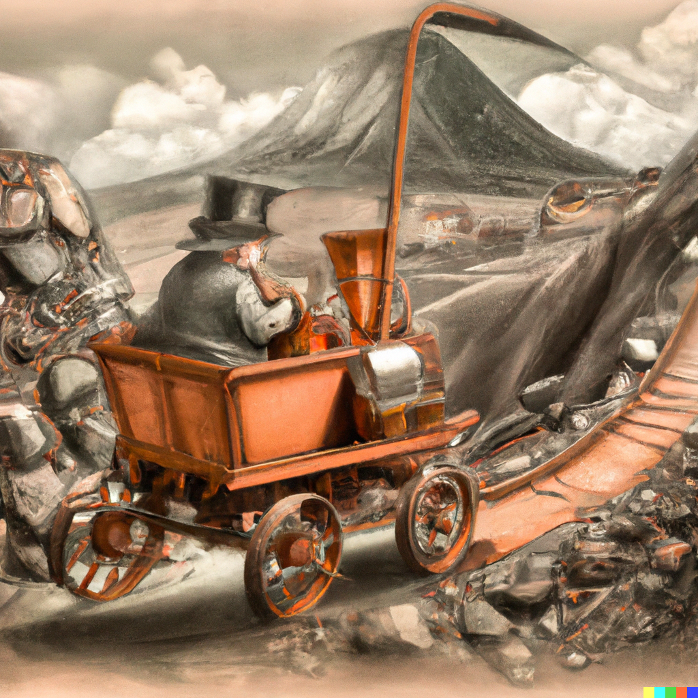
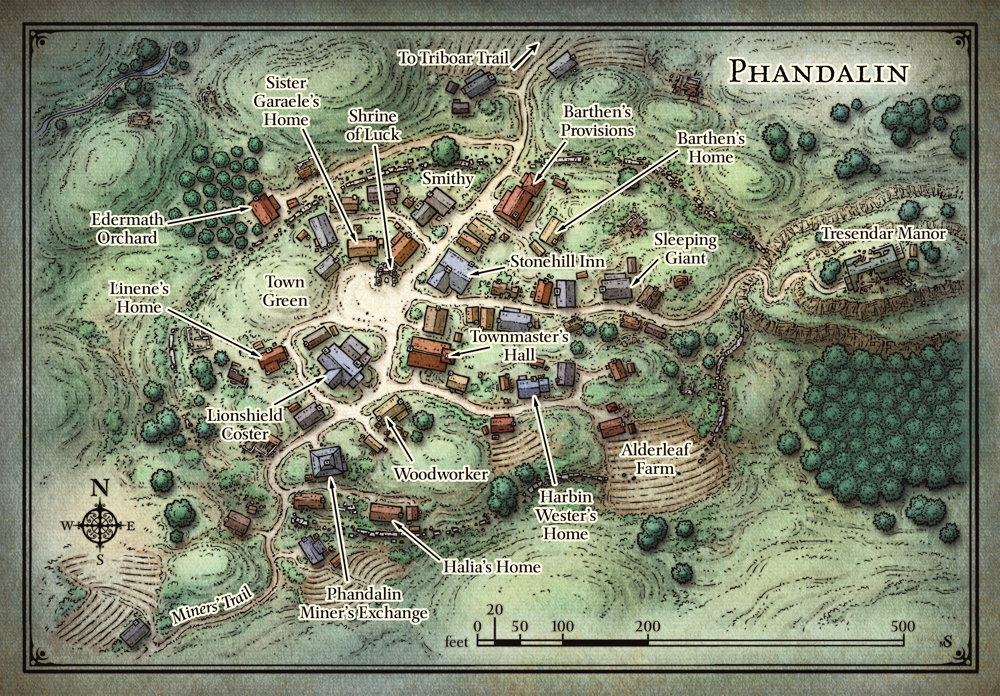
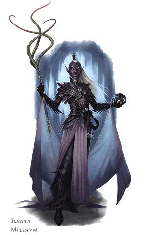
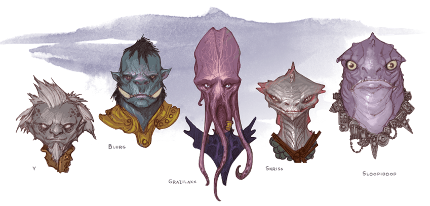
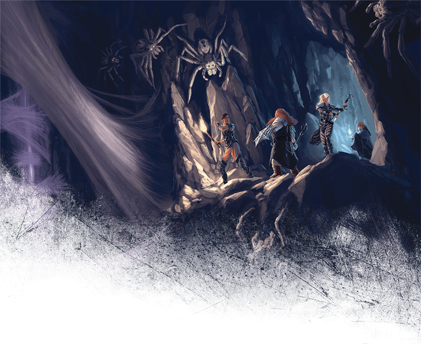
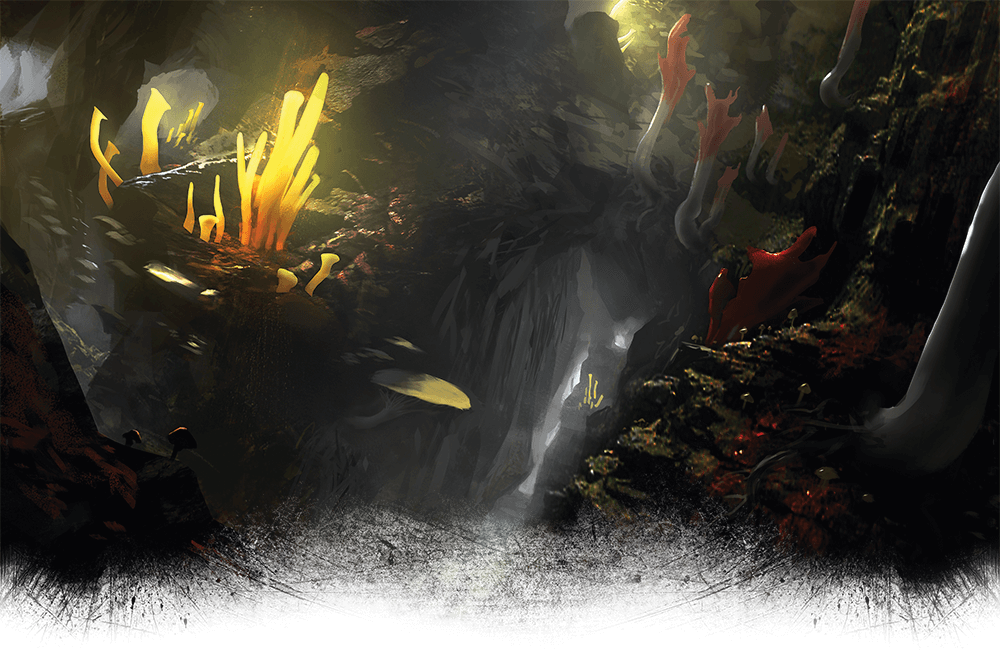
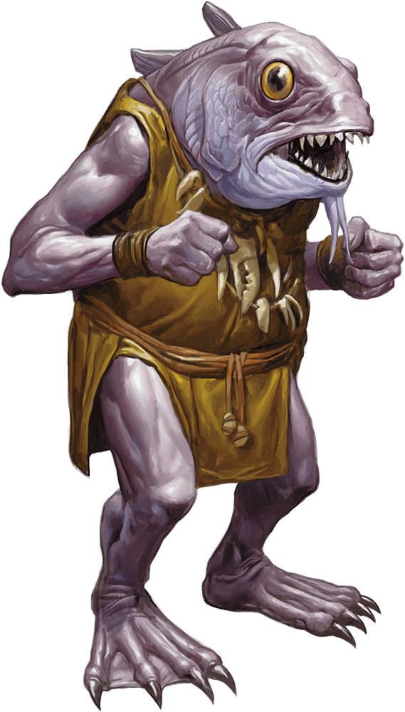
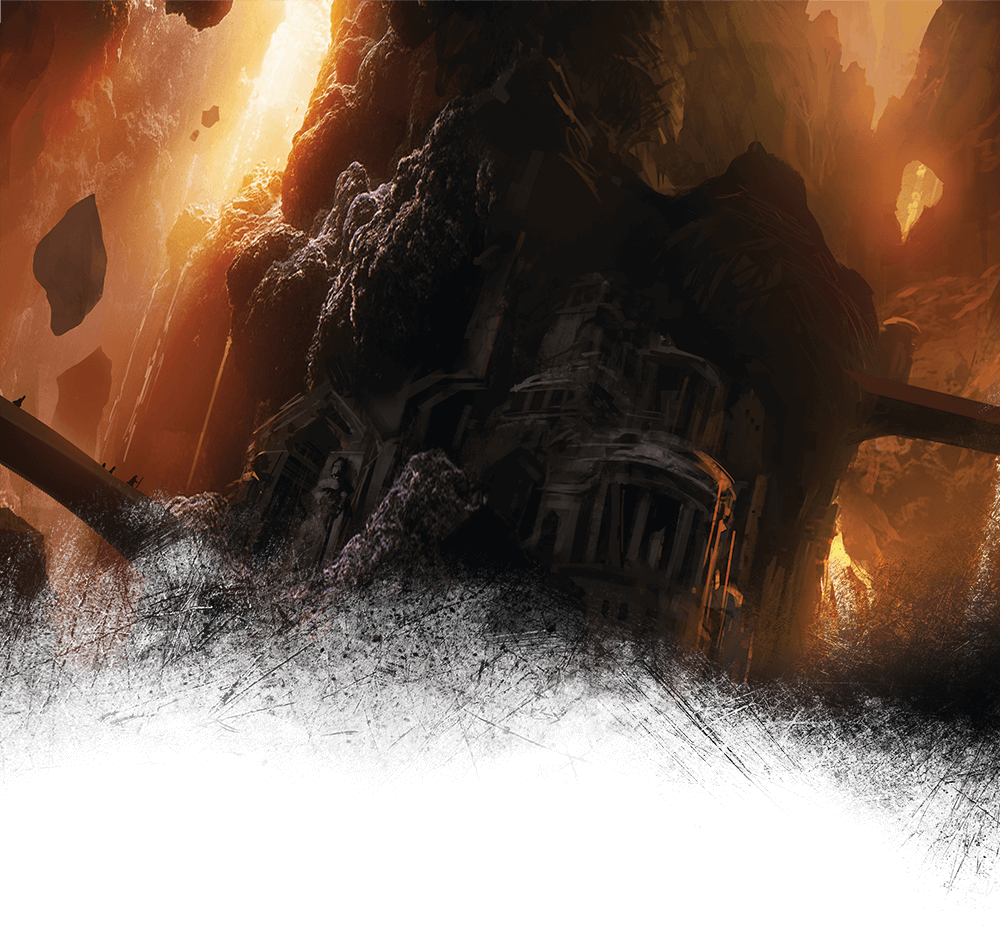
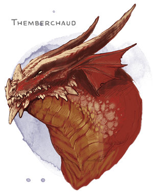
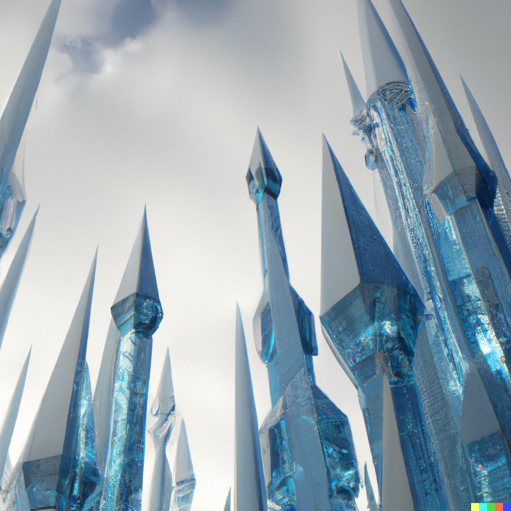

Introduction
Mundus Atrox is a campaign for Dungeons & Dragons 5th edition.
It is a high-Mana world driven by extreme climate and geography, with elements of steampunk and indications of a techno-magical collapse of Civilization in ancient times.
Dwarves and Gnomes hunker down in their Mines, Humans flee the worst weather in mobile cities, and Elves chase the Perpetual Spring in flying castles.
Dragons rule the sky. Unnatural and strange beings stalk the land. Almost anything fixed in place is battered or corroded to oblivion within a few seasons.
Strewn across the world, ancient Artifacts range in size from a marble to a city. Their effects vary from mundane to world-altering, with size being little clue to their potency.
The search for these items, and encounters with mythical races and guardians, become the catalyst for adventure.
Sky and Seasons
The day and night cycle on Mundus is tied to the seasons.
Springrise is when the Sun rises in the West. It lasts for about 24 hours, during which time the paths to The Feywild are open. The skies clear of Winternight's clouds and the brilliance of the Arch can be most clearly seen.
During Summerday the Sun rises high in the sky, circling the horizon but never setting, bringing forth the great mists from the Ocean that is the Enclouding. The nearly constant daytime overcast lasts for ~1400 hours, and the climate is hot and steamy. The flora and fauna go into overdrive, making the most of Summerday before the next Winternight.
With Autumnset the Sun sets in the West and the Enclouding dissipates. Also lasting 24 hours, the skies again show the Arch, and the paths to The Shadowfell open.
Winternight is the long darkness, with lots of snowfall and, when the clouds dissipate, the Arch spans from horizon to horizon, causing perpetual twilight. Most animals migrate or hibernate, and the Undead emerge.
The Arch is thickest in the higher latitudes of Ishtar, although reports of distant traders say it is thin in the skies of Aphrodite. The Vigils are a grouping of bright stars which move across the night sky in intricate patterns.
The Sky Elves say Mundus is a giant sphere, and their Castelas follow the Perpetual Spring, the narrow band of Springrise between Summerday and Winternight which they say circles the world.
The Arch
In the earliest seasons of the world, the vast lands were empty save for two mighty races: the Dragons and the Giants. These colossal beings were in constant competition, each desiring to shape the world in their own image.
The Dragons, graceful and elegant, soared through the skies, painting the heavens with their vibrant flames. Their vision was a world of endless skies and infinite horizons. The Giants, on the other hand, stood tall and mighty, shaping mountains, valleys, and plains with their immense hands. Their dream was a land of towering peaks and deep-rooted forests.
One Springrise, a spirited Dragon named Aeloria and a wise old Giant named Grondar met on Theia. They debated fiercely about whose vision for the world was superior. Aeloria swooped and darted, her flames casting brilliant colors upon the skies, while Grondar stamped his feet, causing tremors that shaped the terrain beneath.
The clash between them was so intense that it threatened to tear the world apart. Fearing for the destruction of what they both cherished, the two stopped and decided to collaborate instead.
Aeloria whispered, "What if we combine our strengths and create something Mundus has never seen?"
Grondar nodded, saying, "Let us craft a symbol of our unity, a bridge between Mundus and Aether."
Together, they began their work. Aeloria breathed motes of fire, her flames soaring high into the sky. Grondar reached out with his mighty arms, gathering the swarms and bending them into a magnificent Arch, a bridge between the world of the Dragons and the Giants.
The Arch became a testament to their collaboration, a symbol that differences can be set aside to create something beautiful. The Arch would be a reminder of the unity between the Dragons and the Giants, a bond that would never be broken.
But then came the Enclouding, hiding the Arch save during Springrise and Autumnset. And that is another tale.
Still, we few remember when two mighty races set aside their differences to create a masterpiece, teaching us the power of collaboration and unity.
Geography

The majority of terrain is flat plains with crinkle ridges and basaltic rock, weathered by sudden and common flash floods (in Summerday) and avalanches of snow (in Winternight). Mountain ranges are jagged, marked by broken escarpments, sharp caldera, and intense winds that can strip flesh from bone.
There are three known continents:
- Ishtar is the northermost and most hospitable
- Aphrodite is the larger and more dangerous, straddling the equator
- Lada is the unexplored southern continent
Countless islands lie between.
There are large chains of volcanoes throughout Mundus. The tallest volcano is Maxwell in Ishtar, but the largest is Theia in Aphrodite. These shield volcanos are hundreds of miles across, and the lands are criss-crossed with lava tubes and vents, making overland travel across (and even over) dangerous.
There are few large permanent rivers on each continent, which often change their course during the Summerday snow-melts.
Oceanography
Oceanum spans the entire world. Although the winds are mild at sea level compared to the tempests at altitude, they gather force for thousands of miles, and along with the tremendous ocean-crossing waves, make sailing upon the surface a hazardous affair. The skies above Oceanum are often no better, with great turbulent masses of clouds tossing even the largest Castela about. The only regular travelers across Oceanus are the mysterious Submersible Urbs, such as Waterdeep.
Climate

The air is thicker, and the climate is hot and wet during Summerday, and cold and wet at Winternight.
Autumnset and Springrise are the most temperate, pleasant climes.
Winds are gentle to non-existent in the plains, increasingly stronger with higher altitudes. When the air smells rotten, becomes extremely dry, and turns greenish-yellow, almost everything finds shelter from the Acid Rains.
Weather by season can be generated from Donjon's Random Weather Generator.
Flora and Fauna
There is a tremendous variety of flora and fauna. Land animals tend towards gigantism, and Oceanus contains vast denizens in its mysterious depths. Tremendous flocks of avian and other creatures stretch for miles and continuously wheel about the skies, often unseen through the Enclouding but discerned by the tremendous racket of their calls. Plants and Animals both have strange and mysterious abilities, and are often harvested or hunted for their magic.
The jungles of Ishtar resemble the Pacific Northwest, with giant colonies of Sequoias that grow on the plateaus and mountain slopes. The jungles of Aphrodite have quintuple canopies of rubbery and flexible plants which die or go dormant during Autumnset and Winternight, only to grow again during Springrise and Summerday.
Dragons
The apex predator of the skies are the Dracos; huge, intelligent, flying, and enigmatic. They winter in their accustomed lairs and emerge during Springrise, dining upon the vast herds and other denizens.
Dracos covet Artifacts and precious metals, especially gold and platinum, as well as items worked in those metals. Many an Elf, Dwarf, or Gnome have successfully bargained for their lives with cunningly wrought jewelry.
They are few in number but terrifying to behold.
Fey
The Fey are a group of ancient, powerful, other-worldly Beings that left their mark upon the world and races of Mundus. Much speculation but little fact surrounds them. Some Barbaria worship them.
Some Fey live upon Mundus, entering and leaving during Springrise, when the Feywild is accessible.
Giants
Old Ones

The Old Ones are a group of utterly inimical Beings that seem to have little relationship to the natural order of things.
Near them, the laws of Nature and Magic become warped and hostile to anything nearby, which are often twisted to accommodate this outre existence.
They often enter or leave Mundus during Autumnset, when paths to The Shadowfell lie open.
Other races also arrive via The Shadowfell.
Population
The peoples of Mundus are often categorized by Magi as Barbaria and Populi.
Barbaria live a nomad existence, following (and sometimes tending) the vast herds which provide sustenance and shelter.
Populi live in fixed shelters (e.g. the great Mines) or roving techno-magical constructions (Urbs and Castelas).
Barbaria
An uncounted variety of intelligent, tool-using races live in or under the skies, seas, and jungles of Mundus. They often war and trade with the Populi.
- Aarakocra
- Aasimar
- Bugbear
- Deep Gnomes
- Duergar
- Firbolg
- Goblin
- Goliath
- Hobgoblin
- Lizardfolk
- Minotaur
- Orc
- Sea Elves
- Shifter
- Tabaxi
Populi

The land and skies are rife with predators natural and otherwise that, in addition to the hazardous weather, dictates that the Populi live in sturdy, defensible, and sometimes mobile Artifacts of unknown design.
The distinction between Barbaria and Populi is often a matter of debate between Magi, but the following are the most commonly accepted members.
Dragonborn

The Dragonborn are a mysterious and sundered people, found living in small conclaves amongst the Elves, Humans, Dwarves, and sometimes Halflings.
Any equipment they have, excepting magic items, must be specially made for their anatomy.
Their relation to the mighty Dracos is a matter of much speculation but little knowledge.
Dwarves
Dwarves live in the tunnels surrounding the vast open Mines, which produce metals and other substances for trade with the Human Urbs and Elven Castelas.
They dislike Magic and are especially resistant to it.
Their captial city is hidden above the clouds in the high peaks of Maxwell.
Elves
The Elves are a long-lived race that consider themselves the masters of Mundus. There are several species of Elves and they seem to be highly adapted to life wherever they find themselves.
-
The Sky Elves commune with the Fey and live in the Castelas. Their great Capital sits aloft over the continent of Aphrodite. They have foldable bat-wings from wrist to ankle with which they can glide great distances, and are resistant to Acid.
-
The Wood Elves live in communities made from the gigantic Sequoias of Ishtar. They guard their forests jealously, and like their Sky Elf cousins, posses gliding membranes. They appear to have lost their resistance to Acid, but are instead resistant to a great many natural toxins.
-
The Sea Elves live in Oceanus and can breathe underwater. Their wings are thicker and allow them to swim effortlessly. They are resistant to Cold.
-
The Dark Elves live deep underground, and are in constant conflict with their other kin. They do not have wings, but can instead produce spiderwebs. They are resistant to the toxins of the Underdark.
Half-Elves
Half-Elves are usually cast out from Elven society, and instead dwell amongst Humans.
Half-Orcs
Half-Orcs, like Half-Elves, tend to be found in the company of Humans, especially Barbarians.
Halflings
Halflings live in the jungles in cleverly concealed homes and burrows. They have no known Capital.
They spend their whole lives hiding from predators are are quite good at it.
Trade with Halflings is extremely valuable for the exotic flora and fauna they produce with mysterious healing and magical properties.
Humans
Humans come in the widest variety of shapes, colors, and sizes. They tend towards two types:
- Civilized Humans live in the Urbs, ruled by the Magisterium, which communes with their particular Urb and guards their secrets jealously. Each Urb is a society to itself and various Urban Leagues have risen and fallen throughout human history.

- The Barbarians live on the open plains, tending vast herds on their giant Thunderbeasts. Each tribe is a society unto its own, warring, trading, or both with other tribes and, occasionally, Civilized Humans. They sometimes exchange food and exotic items for Artifacts produced by Civilization.

Gnomes

Gnomes often live near the same Mines as the Dwarves.
Unlike the Dwarves, Gnomes have an affinity for magic and are rumored, like the Elves, to be Touched by the Fey.
It is rumored they have their own Capital in Lada.
Tiefling

Tiefling are Human crossed with strange bloodlines.
They have few common traits or characteristics, even when compared amongst themselves.
Even amongst the most tolerant Human societies, they are viewed with suspicion.
However, the exploits of certain Tiefling heroes saved Neverwinter and Waterdeep in the past, and on the basis of that acclaim Tieflings have been accepted into society, especially amongst the lower classes.
Tieflings have no known social structure of their own -- at least, on Mundus.
Civilization
Civilization on Mundus is situated in the Dwarven Mines, Human Urbs, and Elven Castelas.
The Halfling communities and Wood Elven forests are also considered as part of the Civilized world, although they are extremely difficult to find even with an explicit invitation.
Castelas
Artifacts that are vast flying cities of metal which often follow the Perpetual Spring.
Sky Elves can glide the winds, but use Airships to travel long distances.
Humans and other races can often be found in the Castelas, but almost never in the higher levels reserved for the Nobility.
Mines

The surface of Mundus is dotted with enormous, open-air mines miles across and many more deep.
Gigantic tracks have ground out all flora surrounding these vast pits, and many Urbs make yearly voyages.
Sometimes these Urbs will winter next to the Mine for mutual protection.
Urbs

Gigantic cities of metal which rove the land, and sometimes Oceanus, the Urbs ingest great quantities of ore and other substances, often from Mines, which they can manufacture into Artifacts.
These manufacturing processes seem intrinsic to the Urb itself; the Artificers Guild seem mainly to ensure continued functionality of the machinery.
Some whisper the Artificers themselves have little understanding of the inner workings of the Urbs, but such rumors are firmly put down by the Crusaders of the Magisterium.
Urbs range in size from merely gigantic rovers to mile-long structures with as many as seven tiers. The typical Urb moves at a stately walking pace, and the clanking of their gigantic treads can be heard for miles.
Inhabitants usually live in sturdy wooden and stone structures that are built upon the metal foundations of the Urb, which produces anchor points upon demand by an Artificer. Some say these Urban folk have a near-permanent deafened condition.
Neverwinter
- Population: 500,000, predominantly Human
- Government: House of Lords
- Defense: The Ten Thousand Crusaders of Light form a permanent standing army, supplemented by the Templar. The Armada is a fleet of Airships and Hippogriff Riders that patrol the skies, supplemented by the Reserve of chartered, privately-owned Airships that can be called up on emergency. The Magisterium provides the Arcane Legion.
- Commerce: Agriculture, Magic, Manufacturing, Technology, Trade, Travel
Description
Neverwinter is a formidable Urb, its silhouette stretching far into the horizon, testament to the ingenuity and resilience of the Urban League. A vast metropolis built on eight levels and powered by colossal wheels and caterpillar tracks, it is on the move during Winternight, searching for resources and evading the hordes that gather in darkness.
Constructed in ascending tiers, each is an intricate network of streets, factories, warehouses, and residences. The bottom tiers are primarily devoted to resource processing and manufacturing, a hectic maelstrom of machines overseen by the Artificer's Guild, while the upper tiers house the living quarters, businesses, and governmental institutions. In this complex ecology, larger structures devour smaller ones, mimicking the city's overall predatory nature.
The top of Neverwinter is dominated by St. Paul's Cathedral, a beacon of hope and solace amidst the sometimes grim Adamantium and steel. The Cathedral is an architectural marvel, the apex of the city, its spires rising dramatically towards the sky. Its gothic design is a stark contrast to the industrial aesthetic of the city, with ornate stonework and beautiful stained glass windows adding an element of charm.
Atop the cathedral sits the Arclight, the city's most revered Techno-Magical achievement. This Artifact emits soothing light that eradicates Aberrations, Fiends, and Undead while freezing Shapeshifters and casting even magical darkness. The Arclights bright halo is more than just a strong defense; it has become an integral part of Neverwinters identity. The warm, omnipresent light illuminates nearly every corner of the city and is visible from leagues away, a lighthouse guiding lost souls and a constant reminder of the citys vigilance against the darkness.
Despite its unending hunt for resources and grim necessity of survival, Neverwinter remains a beacon of civilization and hope. The Arclight, its glow reflecting off St. George's Cathedral, is a testament to the Populi's capacity for resilience and innovation amidst the challenging, dystopian reality of the world.
Government
Neverwinter is governed by the House of Lords:
- Lords Temporal, 13 Peers who are appointed by and include the ranking Peer Marchioness Lyanna Alagondar.
- Lords Spiritual, 13 members of the Apostolic See who are appointed by and include the Archbishop Antonio Jesus Ramirez Villarreal of the Diocese of The Sword Coast.
- Lords Magical, 12 members of the Magisterium and 1 from the Artificer's Guild who are appointed by and include Chancellor Rhalyf Liabanise.
Military
- The Commandant of the Crusaders and the First Air Lord of the Armada answer to the Lords Temporal.
Layout
The city is organized into levels, each with a distinct purpose and function. Generally speaking, inhabitants do not tend to cross levels, and each level is a self-contained ecosystem. Each level contains structures that are multi-story, and the city is built on a series of wheels and caterpillar tracks that allow it to move. The city is powered by a combination of magic and technology, and the Artificer's Guild is responsible for maintaining the city's infrastructure.
Level 0
- Locomotion
- Mining
- Ore Processing
This level is the foundation of the city, and is primarily devoted to resource processing and manufacturing. It is a hectic maelstrom of constructs and machines overseen by the Artificer's Guild, and is the most dangerous level of the city.
Level 1
- Foundries
- Manufacturing
This level contains foundries and manufacturing facilities, and is where raw materials are processed into usable goods. Much of the labor is performed by Constructs, with unskilled laborers providing support.
Level 2
- Farms
- Franciscan Abbey
- Labor Housing
- Warehouses
This level contains the city's food production facilities, as well as warehouses where food and finished goods are stored. Farmers, laborers, and unskilled workers live here along with their families. The Franciscan Order provides services to the inhabitants of this level.
Level 3
- Businesses
- Guild Housing
- Markets
Level 3 is one of the few open levels of the city, being primarily devoted to businesses and commercial areas. Residents and outsiders flock here to buy and sell goods, and it is a bustling, vibrant level.
Level 4
- Artificers Labs
- Engineering
This level contains the city's power generation facilities and other vital techno-magical machinery. It is primarily inhabited by Artificer's Guild members and their families, and access is generally restricted.
Level 5
- The Armory
- The General Curia
- Noble Quarters
The Armory is a massive structure that houses the city's standing army, the Ten Thousand Crusaders of Light. Various Nobles also live on here, and access is generally restricted. The General Curia is located here, which is the headquarters of the Jesuit Order.
Level 6
- Hangars
- The Pilot House
- The Sky Docks
- Templar Barracks
The Pilot House of Neverwinter is in the forward quarter of this level, from where Neverwinter is piloted. The Sky Docks are located in the aft quarter, and are where the city's Airships and Hippogriff Riders are housed in the vast Hangars. The Templar Barracks are located in the middle of the level, and are where the city's Templar are housed.
Level 7
- The Arclight
- The Ledger of the Peerage
- The Magisterium
- The Marchioness' Palace
- St. Paul's Cathedral
This level contains the city's most important institutions, including the Ledger of the Peerage, the Magisterium, and the Marchioness' Palace.
St. Paul's Cathedral dominates the skyline, with the famous Hanging Gardens in the courtyard, all under the Blessed Light of the Arclight.
"Topside", as it is often called, is open to all citizens, and is the most beautiful and peaceful level of the city.

Artifacts
A great variety of Artifacts can be found on Mundus. The most well-known include:
- The Arclight
- Baba Yaga's Hut
- The Black Cauldron
- The Book of Exalted Deeds
- The Book of Vile Deeds
- Chaos Edge
- Maxwell's Forge
- Mournblade
- The Oracle Stones
- The Orbs of Dragonkind
- The Sky Tower of Ovda
- The Smiting Hammer
- Spellbreaker
- Stonehenge
- The Vortex Cube
Less-famous artifacts abound and are in use by the heroes, villains, and leaders in the various societies.
The Arclight
Neverwinter earns its name from this source of eternal illumination. Regardless of the time or season, the city is always bathed in an artificial yet comforting daylight. The city's residents, working tirelessly within its confines, live in perpetual daytime, giving the city an unusual rhythm and tempo that sets it apart from its counterparts.
Stonehenge

Amidst the rolling hills of green,
Where ancient mysteries lie unseen,
Stands a circle of stones so grand,
A monument of an unknown hand.Stonehenge, they call it, a wonder of old,
A place where stories and legends unfold,
Whispers of magic, of gods and kings,
Of druids, and rituals, and sacred things.In the hours of Springrise, a new life begins,
As nature awakens from her winterly sins,
And Stonehenge, too, seems to come alive,
As if a resurrection of times gone by.The sun rises high, and the air is crisp,
The stones stand tall, as if in a mystic tryst,
The morning dew glistens on the green,
As if a sign of a sacred dream.Amidst this magic, a sense of hope,
Of new beginnings, a way to cope,
As if the stones themselves proclaim,
The promise of life, the end of the game.So, on this cycle of resurrection and spring,
Let us gather at Stonehenge and sing,
Songs of joy, of hope, and of love,
And let the stones bless us from above.
Starting
Here is some information to help you create a character for play in Mundus.
We will be using the materials from the D&D Adventurers League. The following is a summary; see the Player's Guide for more details.
Step 0: Choose Your Campaign
This one is easy, we're playing in Mundus.
Step 1: Choose a Race or Lineage
A rather large list of playable races are available, generally grouped into Barbaria, Fey, Old Ones, and Populi, though some Dragon and Giant lineages exist.
Step 2: Choose a Class
Available classes are listed here.
- No multi-classing allowed
Step 3: Determine Ability Scores
- Standard set (15, 14, 13, 12, 10, 9)
- Variant: Customizing Ability Scores
There are two additional Ability Scores, Honor and Sanity. They are based off of Charisma and Wisdom respectively, and are thereafter independent.
Step 4: Describe Your Character
- Alignment: Choose a non-evil alignment.
- Background: Choose a background from the Player's Handbook or any other published source. If you choose a background that does not grant a feat, you may choose one of the following feats for your character: Skilled or Tough.
- Deity: Clerics are members of the Apostolic See.
- Faction: Factions are listed here.
Step 5: Choosing Equipment
Step 6: Come Together
Figure out why your particular group of miscreants form a band. This may be the subject of a Session Zero.
Additional Rules
Timekeeping
Daytime and nighttime are about 60 cycles, each of 24 hours. This corresponds with the seasons which are called Summerday and Winternight respectively. In between Summerday and Winternight is the Autumnset cycle; in between Winternight and Summerday is the Springrise cycle.
- 1 Long Rest per cycle
- Missing a long rest during a cycle causes Exhaustion
- 2 Short Rests per cycle
Races
Game statistics for the various races, summarized from the Player's Handbook and Mordenkainen's Monsters of the Multiverse.
| Race | Traits |
|---|---|
| Aarakocra | |
| Aasimar | |
| Bugbear | |
| Centaurs | |
| Changelings | |
| Deep Gnomes | |
| Duergar | |
| Dragonborn | +2 Str, +1 Cha, Draconic Ancestry |
| Dwarf | +2 Str, +2 Con, Darkvision, Resistances: Poison and Magic, Proficiencies: Axe, Hammer, Artisan Tools |
| Eladrin | |
| Elf, Sky | +2 Dex, +1 Int, Gliding Wings, Extra Cantrip, Darkvision, Resistances: Acid, Charm/Sleep, Proficiencies: Bow, Swords |
| Elf, Wood | +2 Dex, +1 Wis, Gliding Wings, Extra Cantrip, Darkvision, Resistances: Charm/Sleep, Poison, Proficiencies: Bow, Swords |
| Elf, Sea | +2 Dex, +1 Con, Swimming Wings, Extra Cantrip, Water Breathing, Resistances: Cold, Charm/Sleep, Proficiencies: Net, Trident, Crossbow |
| Elf, Dark | +2 Dex, +1 Cha, Web spell, Dancing Lights, Faerie Fire, Darkness, Superior Darkvision, Resistances: Charm/Sleep, Poison, Proficiencies: Rapiers, Shortswords, Hand Crossbows |
| Fairy | |
| Firbolg | |
| Goblin | |
| Goliath | |
| Gnome, Rock | +2 Int, +1 Con, Darkvision, Artificers Lore, Tinker |
| Half-Elf | +2 Cha, +1 on two other abilities, Darkvision, Resistances: Charm/Sleep, Proficiencies: Two of Choice |
| Half-Orc | +2 Str, +1 Con, Darkvision, Menacing, Relentless Endurance, Savage Attacks |
| Halfling, Lightfoot | +2 Dex, +1 Cha, Lucky, Brave, Nimbleness, Stealth |
| Harengon | |
| Hobgoblin | |
| Human | +1 on four Abilities, Feats: One of Choice, Proficiencies: One of Choice |
| Kenku | |
| Lizardfolk | |
| Minotaur | |
| Orc | |
| Satyr | |
| Shadar-Kai | |
| Shifter | |
| Tabaxi | |
| Tiefling | +1 Int, +2 Cha, Darkvision, Resistances: Fire, Infernal legacy |
| Yuan-Ti |
Feats
Some races have racially-specific Feats:
-
Dragonborn: Dragon Fear
-
Dwarf: Dwarven Fortitude
-
Dark Elf: Drow High Magic
-
Wood Elf: Wood Elf Magic
-
Half-Orc: Orcish Fury
-
Halfling: Second Chance
-
Human: Prodigy
-
Gnome: Fade Away
-
Tiefling: Infernal Constitution
Classes
The available classes are:
- Artificer
- Barbarian
- All Primal Paths
- Bard
- All Bard Colleges
- Cleric
- Druid
- All Druid Circles
- Fighter
- All Martial Archetypes
- Monk
- All Monastic Traditions
- Paladin
- All Oaths
- Ranger
- All Ranger Archetypes
- Rogue
- All Roguish Archetypes
- Sorcerer
- All Sorcerous Origins
- Warlock
- The Archfey or The Great Old One
- Wizard
- All Arcane Traditions
Artificer
Artificers are described in Tasha's Cauldron of Everything.
Most Artificers on Mundus belong to the Artificers Guild. Members of the Artificers' Guild speak to each other in a highly technical language that sounds like Common but is full of outlandish words with little meaning to outsiders. Artificers' Guild members can recognize each other via this Artificers' Cant.
As Artificers are present in all centers of Civilization, they are highly valued and protected by the Artificers' Guild (as long as they are members of good standing). Naturally, the Artificers' Guild frowns upon non-Guild practicioners, but such folk are in demand and do quite well trading or living amongst the Barbaria.
Hit Points
Hit Dice: 1d8 per Artificer level
Hit Points at 1st Level: 8 + Constitution modifier
Hit Points at Higher Levels: 1d8 (or 5) + Constitution modifier per level after 1st
Proficiencies
Armor: Light armor, medium armor, shields
Weapons: Simple weapons, Firearms
Tools: Thieves' Tools, Tinkers' Tools, one type of Artisans' Tools
Saving Throws: Intelligence, Constitution
Skills: Choose two from Arcana, History, Investigation, Medicine, Nature, Perception, Sleight of Hand
Spellcasting
Spells "cast" by an Artificer involve wonders and outlandish inventions, and either Thieves' Tools or Artisans' Tools are always required as a Material component to the spell. Once Infuse Item is attained at 2nd level, any item bearing an Infusion may be used as a spellcasting focus.
Intelligence is used as the Artificers spellcasting ability.
Starting Equipment
- Any 2 simple weapons
- 1 Musket or 2 Pistols with 20 pieces of ammunition
- Studded Leather armor or Scale Mail
- Tinkers' Tools
- Thieves' Tools
- Dungeoneers' Pack
Playtest Materials
- Character Origins
- Cleric and Revised Species
- Druid and Paladin Playtest materials
- Expert Classes
- Player's Handbook
- Bastions and Cantrips
I'm not sure I like the direction they're going with this. Maybe I'll just stick with 5e.
It's getting better.
Earlier playtest materials are available here.
Factions
Players may belong to a variety of factions. The following is a list of various groups and organizations, along with typical classes and backgrounds. Note that organizations may have other classes and backgrounds, but these are the most common. Other organizations not mentioned here exist for the players to discover.
Apostolic See
- Bard (College of Whispers, College of Lore)
- Cleric (Life, Light, War)
- Paladin (Devotion, Vengeance)
- Monk (Open Hand, Shadow)
Guilds
- Artificers (Artificer)
- Carters (Fighter, Ranger)
- Merchants (Bard, Rogue)
Magisterium
- Sorcerer
- Wizard
Organizations
- Emerald Enclave (Druid, Ranger)
- Harpers (Bard, Rogue)
- Zhentarim (Rogue, Warlock)
- Urban League (Any)
Peerage
- Any except Barbarian, Druid, or Monk
Apostolic See
The Apostolic See is the formal religion of the Urbs, based upon the worship of the Holy Trinity. The Apostolic See is a hierarchical organization, composed of Clerics (Clergy) and non-Clerics (Laity). The hierarchy is as follows:
- Presbyter (Cleric)
- Deacon (Laity)
- Bishop (Cleric)
- Archdeacon (Laity)
- Archbishop (Cleric)
- Vicar (Laity)
- Cardinal (Cleric)
- Legate (Laity)
Each Cathedral is led by a Presbyter and governed by a Deacon. Cathedrals within a geographic area are grouped into a Diocese, which are led by a Bishop and governed by an Archdeacon. Dioceses are grouped into ecclesiastical Provinces, under the leadership of the Bishop of a particular Diocese, which is called the Metropolitan or Archdiocese. The Bishop of the Metropolitan is an Archbishop, and the Archdiocese is governed by the Vicar. The Metropolitans gather every so often to elect a Cardinal, who is the spiritual leader of the Apostolic See. The Cardinal then appoints a Legate as the secular leader of the Apostolic See.
In addition to the Clergy and Laity, the Apostolic See has several other organizations.
Benedictine Order
Although formally part of the Apostolic See, they are otherwise independent, with each congregation led by an Abbot. The Benedictine Order is dedicated to the preservation of knowledge, and they tend to the Ledger of the Peerage nearest their Cloister. The Benedictine Order known to have Bards in its ranks.
Dominican Order
The Dominicans are an order of mendicant Monks best described as the intelligence organization of the Apostolic See. Although they have Abbeys led by Abbots, they are rumored to answer to a Legate.
Franciscan Order
The Franciscans are an order of mendicant Clerics and Monks best described as the humanitarian organization of the Apostolic See. Novices and Initiates go to Dominican Abbeys for training; once completed, Franciscan Monks are itinerant.
Jesuit Order
The Jesuits are an order of Clerics, Monks, and Fighters best described as the academic and military organization of the Apostolic See. The Jesuit Order is led by the Superior General, with the headquarters of the society, the General Curia, in Neverwinter. They otherwise have no formal ranks, although in practice most Jesuits rank by seniority.
The Inquisition
The Inquisition is a group dedicated to the protection of the Apostolic See from heresy and corruption. The Inquisition is led by the Grand Inquisitor, who is also a Legate. The Inquisition is typically composed of Dominicans and Franciscans.
Templar
The Templar are a military Order of Clerics and Paladins, dedicated to the protection of the Apostolic See from supernatural threats. The Templar are led by the Grand Master, and are further divided into the Knights Templar, who are always members of the Peerage, and non-Peerage Paladins and Clerics. The basic unit is the Tredectet, a group of 12 Templar led by a Knight Templar. The membership and rank structure is as follows:
- Brother/Sister (War Domain Cleric)
- Paladin
- Squire
- Corporal
- Sergeant
- Master Sergeant
- Knight Templar (Paladin)
- Squire
- Sir/Dame
- Lord/Lady Commander (Leader of a Tredectet)
- Master
- Grand Master of the Templar
Magisterium
The Magisterium is a group of Sorcerers and Wizards who are dedicated to the study of magic. Each Urb has a Campus led by a Chancellor, with Neverwinter being among the most prestigious.
As with the Peerage, magical rankings are encoded in the Ledger of the Magisterium, copies of which are kept in Campus libraries.
Ranks of within the Magisterium are as follows:
- Initiate
- Adept
- Baccalaureate
- Magister
- Doctorate
- Distinguished Doctorate
- Provost
- Chancellor
Peerage
Property-owning nobility exist in all Civilizations, and titles are often hereditary. The exact holdings and ancestry are encoded in the Ledger of the Peerage, sometimes referred to by the Benedictines as the Blockchain for reasons lost to time. The Ledger is a kind of distributed magical artifact that associates the Title of a Holding with the genetic information of the current holder, indeed, the very definition of being a member of the Peerage is someone listed in the Ledger.
Ledger
Each Castela, Mine, and Urb has it's own copy of the Ledger, which is an immutable history of all titles held by all nobles in all cultures on Mundus. The records of the Ledger stretch backwards in time for thousands of generations, and the vast amount of records in the Ledger means that only the largest Castelas, Mines, and Urbs have the resources to maintain an entire copy of the Ledger. Competing claims are often proposed in different copies of the Ledger, which is resolved by a kind of magical consensus based upon the number of copies of the Ledger that agree with a particular claim. Thus, successful claims are most often registered in the largest copies.
Castelan Titles
Elven Nobility is impossibly complex, and not well understood by outsiders. It is believed to be a combination of ancestry and merit. The exact title is often worn by the the individual as a piece of jewelry which reflects their Ledger entry.
Mine Titles
Amongst the Dwarves and Gnomes of the Mines, the following titles are recognized, in increasing order of precedence, along with the typical holdings and responsibilities.
- Thane (Clan)
- Jarl (Mine)
- King, Queen (Typically all the Mines on a Continent)
Urban Titles
The following are the titles recognized in the Urbs, in increasing order of precedence, along with the typical holdings and responsibilities.
- Baron, Baroness (Barony, the seat being a Summerday castle)
- Viscount, Viscountess (Viscounty, Several Baronies)
- Earl, Countess (County, Several Viscounties)
- Marquess, Marchioness (March, Several Counties)
- Duke, Duchess (Duchy, Several Marches)
As a March is the typical roaming area of an Urb, the Marquess or Marchioness is often the titular leader of the Urb. The Duke is often the leader of the Continent.
Equipment
Your starting equipment and gold are determined by your class and background. You don't roll for gold. You may start with a trinket of your choice from available rules choices. You can sell starting equipment using the rules in the Player's Handbook and can buy equipment and spell components found in the Player's Handbook or available in the campaign.
In addition to the standard Equipment list, a variety of exotic items are in common use on Mundus.
Conveyances
There are a variety of ways to get around, starting with animal-based:
- Hippogriff
- Horse
- Manta Ray
- Pegasus
- Thunder Beast
There is also techno-magical transportation:
- Airship
- Crawler
- Horseless carriage
- Strider
- Submarine
Magical portals, temporary or otherwise, are also known to exist.
And of course, Castelas and Urbs are conveyances in their own right.
Firearms
Image Credit: Wikimedia Commons
The most common firearms found on Mundus are Muskets and Pistols, but other types have been discovered.
Elves disdain the use of Firearms, but Artificers in the Urbs and Mines commonly manufacture them, with the Crusaders and Steel Guard being notable users throughout their ranks.
Common Types
| Type | Cost | Damage | Weight | Properties |
|---|---|---|---|---|
| Pistol | 250 gp | 2d8 piercing | 3 lbs. | Ammunition (range 30/90), loading |
| Quattour | 1000 gp | 2d6 piercing per barrel | 5 lbs. | Ammunition (range 30/90), reload (4 shots) |
| Musket | 500 gp | 2d10 piercing | 7 lbs. | Ammunition (range 40/120), loading, two-handed |
| Shotgun | 750 gp | 3d6 bludgeoning per barrel | 10 lbs. | Ammunition (range 30/90), reload (2 shots), two-handed, |
| Sept | 1500 gp | 2d8 piercing per barrel | 13 lbs. | Ammunition (range 40/120), reload (7 shots), two-handed |
| Bullets | 3 gp | - | 1 lb. | 10 rounds + powder |
| Shot | 2 gp | - | 1 lb. | 10 shots + powder |
Use
A Pistol or Musket discharges one lead ball per barrel.
Shotguns discharge a number of pellets per barrel.
The Quattour and Sept may discharge all barrels in a single round. In this instance, the firer receives Disadvantage unless they possess the Gunner Feat. Success produces d4/d6 hits.
Reloading
Firearms require 10 rounds to reload per barrel. A person with Proficiency in Firearms can reload a barrel in 5 rounds. Someone with the Gunner Feat can reload a barrel as an Action and fire as a Bonus Action.
An Artificer that Infuses a Firearm with Repeating Shot can reload and fire one barrel per round. The ammunition is assembled from components in the possession of the Artificer (e.g. ball and powder).
Armor Effects
Heavy Armor (or it's equivalent) provides Damage Resistance against Firearms listed in the table above.
Medium Armor (or it's equivalent) provides Damage Resistance against the Shotgun in the table above.
Magic Items
Adamantium
Black and non-metallic, Adamantium is the hardest known substance on Mundus. Adamantium seems to drink in the light, and is non-reactive to both fire and acid. Adamantium is highly prized for it's lightness and durability, and can only be worked by Artificers.
Weapons made of Adamantium cause Critical Hits on a roll of 19 or 20.
Armor made of Adamantium is half the weight, and the wearer is immune to Critical Hits.
Spellcasting
To cast a spell, a character requires three things:
Spell Knowledge and Preparation
Arcane Tricksters, Artificers, Bards, Eldritch Knights, Rangers, Sorcerers, Warlocks, and Wizards must know and/or prepare spell formula to cast spells.
These formulae take different forms, depending upon the discipline of the spell-caster, and usually do not translate across classes.
Example: the spell formula for Magic Missile written by Wizards is different from the Sorcerers Magic Missile.
Some classes, like the Artificer, can change known spells by tinkering with their spellcasting focus. Other classes, like Wizards, write down formulae in their spellbooks. The number of known spells can exceed the number of prepared spells.
Arcane Tricksters and Wizards must prepare spells from their list of known spells. For all other classes, there is no distinction between known spells and prepared spells.
Only prepared spells can be cast.
Clerics, Druids, Sorcerers, and Wizards can prepare a number of spells equal to their Spellcasting Attribute bonus + class level.
Example: A 5th-level Wizard with an Intelligence of 16 can prepare 8 spells.
Artificers and Paladins can prepare a number of spells equal to their Spellcasting Attribute bonus + half their class level, rounded down.
Example: A 3rd-level Paladin with a Charisma of 17 can prepare 4 spells.
Arcane Tricksters, Bards, Eldritch Knights, Rangers, and Warlocks have a fixed number of prepared spells depending on their level.
Example: A 5th-level Warlock can prepare 6 spells, regardless of Charisma.
Spell Level
Second, the character must be able to channel magical ability of that level.
Example: a 5th-level Wizard can channel up to 3rd-level spells.
Mana
Lastly, the character must have available Mana.
Using Mana often requires Verbal, Somatic, and/or Material components, which are consumed when Mana is expended. If these words, gestures, or materials are interrupted or interfered with, the spell fizzles and the Mana is lost.
Environmental Effects
Spells which use an Attack Roll normally generate Critical Hits on a roll of 20.
Example: Call Lightning does not trigger Critical Hits, because it has a Saving Throw.
Certain spells have enhanced effects in certain environments, as follows:
A spell with a damage type matching the environment generates a Critical Hit on a 19 or 20 Attack Roll. Likewise, Saving Throws are at Disadvantage.
| Damage Type | Environment |
|---|---|
| Radiant | Summerday |
| Necrotic | Winternight |
| Acid | Acid Rain |
| Cold | Blizzard |
| Lightning | Thunderstorm |
| Thunder | Thunderstorm |
| Fire | Active volcano |
| Force | The Arch is visible |
Example: A roll of 19 with a Javelin of Lightning during a Thunderstorm triggers a Critical Hit on the target for 2d6 Piercing + 8d6 Lightning. The creatures between the thrower and the target do not receive Critical Hits, but they make a Dexterity Save for half damage at Disadvantage.
Wild Magic Sorcerers trigger a Wild Magic Surge on a spellcasting Attack Roll of 20.
Example: A Wild Magic Sorcerer rolls a 20 to Critical Hit a target with a Ray of Enfeeblement during Winternight. He also triggers a Wild Magic Surge.
Mana
Mana, regardless of provenance, powers magic, and spellcasters use it to cast spells.
To determine how much Mana is available, for each Spell Slot multiply by Spell Level and add up the total. This is summarized in the tables below.1
Example: a 4th level Wizard has 10 Mana (4 1st-level slots x 1 + 3 2nd-level slots x 2 = 10).
Spells cost Mana equal to their level, plus any modifiers to that level.
Example: Fireball (a 3rd-level spell) cast at 5th-level with an additional 2d6 damage (10d6 total) costs 5 Mana.
Cantrips and other At Will abilities do not consume Mana directly, as they are innate to the Being. Certain classes also have spells that are Always Prepared and which do not count against Spell Slots. In this case, Always Prepared spells are added to both the Known Spells list and the Prepared Spells list, and their Spell Levels are added to the Mana for the character.
Example: A 5th level Druid in the Circle of the Forest has 26 Mana. Barkskin, Spider Climb, Call Lightning, and Plant Growth are always prepared and may be cast if the Druid has sufficient Mana.
Ritual Spells require Mana equal to their level available to begin the ritual, but the spellcaster attunes the spell to the Mana of the environment. Thus, it does not deplete the spellcaster's Mana directly.
Example: Identify requires, but does not use, 1 Mana to start the ritual.
Bard, Cleric, Druid, Sorcerer, Wizard
| Level | Cantrips2 | Max Spell Level | Mana3 |
|---|---|---|---|
| 1st | 2 | 1st | 2 |
| 2nd | 2 | 1st | 3 |
| 3rd | 2 | 2nd | 8 |
| 4th | 3 | 2nd | 10 |
| 5th | 3 | 3rd | 16 |
| 6th | 3 | 3rd | 19 |
| 7th | 3 | 4th | 23 |
| 8th | 3 | 4th | 27 |
| 9th | 3 | 5th | 36 |
| 10th | 4 | 5th | 41 |
| 11th | 4 | 6th | 47 |
| 12th | 4 | 6th | 50 |
| 13th | 4 | 7th | 54 |
| 14th | 4 | 7th | 57 |
| 15th | 4 | 8th | 62 |
| 16th | 4 | 8th | 67 |
| 17th | 4 | 9th | 71 |
| 18th | 4 | 9th | 76 |
| 19th | 4 | 9th | 82 |
| 20th | 4 | 9th | 89 |
Artificer, Paladin, Ranger
| Level | Max Spell Level | Mana |
|---|---|---|
| 1st | None4 | 0 |
| 2nd | 1st | 2 |
| 3rd | 1st | 3 |
| 4th | 1st | 5 |
| 5th | 2nd | 8 |
| 6th | 2nd | 9 |
| 7th | 2nd | 10 |
| 8th | 2nd | 12 |
| 9th | 3rd | 16 |
| 10th | 3rd | 17 |
| 11th | 3rd | 19 |
| 12th | 3rd | 20 |
| 13th | 4th | 23 |
| 14th | 4th | 25 |
| 15th | 4th | 27 |
| 16th | 4th | 30 |
| 17th | 5th | 36 |
| 18th | 5th | 39 |
| 19th | 5th | 41 |
| 20th | 5th | 44 |
Warlock
| Level | Cantrips | Spells | Invocations | Max Spell Level | Mana |
|---|---|---|---|---|---|
| 1st | 2 | 2 | None | 1st | 1 |
| 2nd | 2 | 3 | 2 | 1st | 2 |
| 3rd | 2 | 4 | 2 | 2nd | 4 |
| 4th | 3 | 5 | 2 | 2nd | 5 |
| 5th | 3 | 6 | 3 | 3rd | 6 |
| 6th | 3 | 7 | 3 | 3rd | 7 |
| 7th | 3 | 8 | 4 | 4th | 8 |
| 8th | 3 | 9 | 4 | 4th | 9 |
| 9th | 3 | 10 | 5 | 5th | 10 |
| 10th | 4 | 10 | 5 | 5th | 15 |
| 11th | 4 | 11 | 5 | 6th5 | 21 |
| 12th | 4 | 11 | 6 | 6th | 25 |
| 13th | 4 | 12 | 6 | 7th5 | 28 |
| 14th | 4 | 12 | 6 | 7th | 30 |
| 15th | 4 | 13 | 7 | 8th5 | 36 |
| 16th | 4 | 13 | 7 | 8th | 40 |
| 17th | 4 | 14 | 7 | 9th5 | 45 |
| 18th | 4 | 14 | 8 | 9th | 46 |
| 19th | 4 | 15 | 8 | 9th | 47 |
| 20th | 4 | 15 | 8 | 9th | 48 |
Eldritch Knight, Arcane Trickster
| Level | Cantrips6 | Spells | Max Spell Level | Mana |
|---|---|---|---|---|
| 3rd | 2 | 3 | 1st | 2 |
| 4th | 2 | 4 | 2nd | 3 |
| 5th | 2 | 4 | 2nd | 4 |
| 6th | 2 | 4 | 2nd | 5 |
| 7th | 2 | 5 | 2nd | 6 |
| 8th | 2 | 6 | 2nd | 7 |
| 9th | 2 | 6 | 2nd | 8 |
| 10th | 3 | 7 | 2nd | 10 |
| 11th | 3 | 8 | 2nd | 11 |
| 12th | 3 | 8 | 2nd | 12 |
| 13th | 3 | 9 | 3rd | 16 |
| 14th | 3 | 10 | 3rd | 17 |
| 15th | 3 | 10 | 3rd | 18 |
| 16th | 3 | 11 | 3rd | 19 |
| 17th | 3 | 11 | 3rd | 20 |
| 18th | 3 | 11 | 3rd | 21 |
| 19th | 3 | 12 | 4th | 22 |
| 20th | 3 | 13 | 4th | 23 |
The tables gives slightly more spell points than a straight conversion, to provide increasing Mana per level.
Clerics and Wizards have +1 Cantrips, Sorcerers have +2 Cantrips.
Sorcerers get Metamagic Mana equal to their level, which can be used for Metamagic or Mana.
Artificers know Cantrips equal to Druids, and at 1st level know 1st level spells with 2 Mana.
From the Mystic Arcanum
Arcane Trickster has +1 Cantrips
Overview
The Irregulars are based out of Neverwinter and Phandalin.
They are a group of adventurers who have been tasked with finding the Lost Mine of Phandelver.
Members of the party have included:
- Actias Aureus, a Dhampir Hexblade Warlock and Mystic of the Rockseeker Clan. Current XP Total: 141,900
- Benjamin, a Wood Elf Ranger and Scout of the Rockseeker Clan. Current XP Total: 175,120
- CoralKing, a Gnome Monk and Mystic of the Rockseeker Clan. Current XP Total: 217,120
- Lady Orky, a Half-Elven Paladin, Countess of Icewind Dale and Champion of the Rockseeker Clan. Current XP Total: 217,120
- Steve, a Halfling Rogue and Scout of the Rockseeker Clan. Current XP Total: 131,420
- Tasbros, a Sky Elf Sorcerer, Magister of the Magisterium and War Mage of the Rockseeker Clan. Current XP Total: 155,800
- Tysnera, a Sky Elf Wizard, Magister of the Magisterium and War Mage of the Rockseeker Clan. Current XP Total: 139,300
- Viker, an Eladrin Druid and Inquisitor and Guardian of the Rockseeker Clan. Current XP Total: 201,720
- Wulrif, a Human Warlock and Mystic of the Rockseeker Clan. Current XP Total: 179,600
Retired members of the party:
- Avren Varan, a 12th-level Half-Elven Bard. Current XP Total: 101,000
- Calmul Rhoqiroth, a 13th-level Dragonborn Artificer and Master Smith of the Rockseeker Clan. Current XP Total: 130,800
- Lord Colonel Geral Bryn, a 13th-level Human Fighter from Neverwinter, Baron of Cragmaw, Lieutenant Colonel of the Crusaders, Thane of the Rockseeker Clan, and Raidleader of the Icebreaker Clan. Current XP Total: 131,600
Known Friends
- Chiyo, Oni mate of Gruumsh Icebreaker.
- The Dwarven Rockseeker Clan of the Lost Mine of Phandelver.
- Grazillaxx, a Mind Flayer and member of the Society of Brilliance.
- Gruumsh Icebreaker, an Orc Barbarian and Clanleader of the Icebreaker Clan.
- Gundren Rockseeker, a Dwarf Fighter and Chief of the Rockseeker Clan.
- Lady Alyssa Varkosian, former wife of Lord Commander Varkosian and Actias Aureus's lover.
- The Orc/Ogre Icebreaker Clan, now of Phandalin.
- Mormesk the Magnificent, a Ghost.
- Reidoth, a Human Druid.
- Sildar Hallwinter, a Human Fighter, Townmaster of Phandalin and member of the Urban League.
- Sister Garaele, an Elf Cleric of Neverwinter and member of the Harpers.
- Sradgikshadmat, a Guardian Naga.
- Varbation Starsight, the Sky Elf Captain of the Airship Elendil.
Known Enemies
- The Drow of Velkynvelve.
- Droki, a
DerroDrow Shadowblade. - Ffolluk, a Fire Giant.
- The Hobgoblins of Cragmaw.
- Iarno Glasstaff, a Human Wizard and member of the Zhentarim.
- Icewing, a White Dragon who drove the Icebreaker Clan from their ancestral home.
- Lord Commander Varkosian, a former Lord Commander of the Templar, now a Death Knight.
- Mistress Ilvarra of the Drow House Mizzrym.
- Nezznar the Black Spider, a Drow Wizard and member of the Zhentarim.
- A nameless Smiling One.
- Venomfang, a Green Dragon.
First Session
Goblins on the Triboar Trail
Springrise
Dramatis Personae
- Benjamin, a 1st-level Wood Elf Ranger
- CoralKing, a 1st-level Gnome Monk
- Geral Bryn, a 1st-level Human Fighter
- Orky, a 1st-level Half-Elf Paladin
- Steve, a 1st-level Halfling Rogue
- Tasbros, a 1st-level Sky Elf Sorcerer
- Tysnera, a 1st-level Sky Elf Wizard
- Wulrif, a 1st-level Human Warlock

Springrise casts its rays over the Sword Coast as Neverwinter makes its way along the High Road to spend Summerday at Biscayne Bay, awaiting the arrival of Waterdeep, the largest known Submersible Urb.
The Magisterium declares Springrise as the majority of the inhabitants of Neverwinter exchange their musty and clamorous dwellings for the warmth of the surrounding lands. Gaily colored tents and trade booths dot the surrounding countryside, patrolled by the Crusaders astride their clanking beasts.
A Dwarf named Gundren Rockseeker asks you to bring a wagon-load of provisions to the Summerday settlement of Phandalin, 20 hours travel Southwest of your current location. Gundren was clearly excited and more than a little secretive about his reasons for the trip, saying only that he and his brothers had found "something big", and that he'd pay you ten gold pieces each to escort his supplies to Barthen's Provisions, a trading post in Phandalin. He then set out ahead of you on horse, along with a warrior escort named Sildar Hallwinter, claiming he needed to arrive early to "take care of business". You've spent the last 8 hours following the broad High Road South, and you've just recently veered east along the Triboar Trail. You've encountered no trouble so far, but the wilderness is always dangerous and full of predators.
Character introductions were made.
The party encountered two dead horses along the trail. Despite Geral's warning, the party went to investigate and were ambushed by Goblins.
Geral leapt forward to save CoralKing, Benjamin, and Wulrif and Orky's charge broke the back of Goblin resistance.
The remainder disengaged and slunk back into the woods, firing desultory arrows at Orky to no effect.
Benjamin determined the Goblins to have numbered a dozen, and they dragged someone away. Empty satchels and a map case were found near the dead horses.
300 XPs
A further 8 hours travel along the Triboar Trail, and Benjamin discovered a Goblin lair in a cave hidden in the woods a scant two bowshots from the trail. Concealed in natural surroundings, Benjamin observed the Goblins taking a bound human into the cave. From there, any other travelers along the Triboar Trail are sure to come under assault.
The party crept to the cave entrance, leaving Geral and Tysnera to guard the oxen team and wagon full of the provisions they were hired to deliver.
The party ambushed two guards at the cave entrance, and then slew three wolves just inside the cave in a filthy den.
Before they could go further, Tysnera arrived bearing the news that the wagon caravan was under attack by a foul beast.
Returning, the party encountered an Owlbear, which had dispatched Geral and was ravaging the remains of the oxen team.
The Owlbear was defeated and Geral revived from near death. The remains of four oxen were scattered amongst the beast's feeding frenzy, and Benjamin eventually retrieved the remaining four.
The party must decide what to do next.
500 XPs

Second Session
Goblins and Zombies and Wolves, Oh My!
Summerday +48 hours
Dramatis Personae
- Actias Aureus, a 1st-level Tiefling Warlock
- Benjamin, a 2nd-level Wood Elf Ranger
- Calmul Rhoqiroth, a 1st-level Dragonborn Bard
- CoralKing, a 2nd-level Gnome Monk
- Geral Bryn, a 2nd-level Human Fighter
- Orky, a 2nd-level Half-Elf Paladin
- Skolg, a 1st-level Tiefling Rogue
- Steve, a 2nd-level Halfling Rogue
- Wulrif, a 2nd-level Human Warlock
After determining that the Goblins in the cave were going to be a persistent threat until taken care of, the party decided to hide the wagon and oxen in a safe place and go back to the cave. Benjamin found a good location off the main trail for the oxen, and Wulrif cast an illusion over the wagon to hide it, with limited success.
The group set off toward the caves, only to be met by a party of a dozen Goblins attempting to ambush them again. The team succeeded in defeating the Goblin raiding party, with a few Goblins escaping back into the woods. CoralKing detected and the party avoided two traps along the trail the Goblins had set, and the party found themselves back at the mouth of the cave.
Proceeding cautiously, the party noted the chamber that had formerly held the wolves to contain little more than bloodstains. Careful investigation revealed a narrow chimney 20' or so up in the chamber, but the climb looked slick and difficult and no one risked it. Moving deeper into the cave, it again branched, going upwards into a large chamber with a wooden bridge 20' over the stream flowing down the left side of the main cave tunnel. A side branch also went upwards, but the ceiling was much lower. While the party was deciding what to do, a huge deluge of water came roaring down the main passage, washing away most of the party. A few desultory arrows came out of the darkness, but they had little effect.
The group decided to explore instead the side passage, but this time they made use of the pickaxes and ropes that many of them had been carrying. CoralKing stealthily crept up the passage, finding another group of 6 Goblins arguing and abusing a tied up human.
Turning the tides, the group blitzed into the room, taking down all of the Goblins except one, which they kept as a prisoner.
The human prisoner turned out to be Sildar Hallwinter, a retired warrior and bodyguard of Gundren Rockseeker. He relayed that they were both ambushed by a large band of Goblins with a Bugbear leader, who took Gundren someplace else.
The party turned to interrogate the captured Goblin, who revealed a number of items:
- The Bugbear's name is Klarg, and he's the leader of the band, which numbers more than two dozen. But Yeemik is second in command, and know's many things of interest to the group.
- Klarg answers to King Grol, chief of the Cragmaw tribe, who dwells in Cragmaw Castle.
- Klarg received a messenger from King Grol a few cycles ago. Someone named The Black Spider was paying the Cragmaws to watch for the Dwarf Gundren Rockseeker, capture him, and send him and his effects (but most especially a map) back to King Grol.
- Klarg took Gundren to Cragmaw Castle. Yeemik can lead the party there.
At this point Sildar interrupts, saying he needs to get to Phandalin along with the supplies, because he needs to find out the whereabouts of his friend, Iarno Glasstaff, who went to Phandalin last Summerday to prepare the way. He offers an additional 50 gold pieces for safe escort to Phandalin.
The party agrees that they need to get Sildar and the wagon of supplies to Phandalin, and then find Gundren.
Turning south along the Triboar Trail, the party, along with Sildar and Yeemik, head towards Phandalin.
They pass another wagon that has been torn apart, bodies littered everywhere. As they approach, the bodies rise with a groan and attack.
These strange Undead puff blinding clouds of ash when hit. Worse, they seem resistant to swords, arrows, and even Calmul's breath weapon. They likewise take no notice of charms or enchantments, but Orky has success with her mace, CoralKing with his headbutts, and Geral with a makeshift club. Actias and Wulrif's spells likewise affect the monsters. Benjamin, Steve, and Skolg, equipped with only slashing and piercing weapons, guard Yeemik to ensure he doesn't run off in the Confusion. Sildar yells out that these are "Ash Zombies".
The Ash Zombies go down very hard, but eventually they do go down.
The party stops to rest and recuperate.
600 XPs

Third Session
Wildlife Problems
Summerday +80 hours
Dramatis Personae
- Actias Aureus, a 2nd-level Tiefling Warlock
- Benjamin, a 3rd-level Wood Elf Ranger
- Calmul Rhoqiroth, a 2nd-level Dragonborn Bard
- CoralKing, a 3rd-level Gnome Monk
- Geral Bryn, a 3rd-level Human Fighter
- Orky, a 3rd-level Half-Elf Paladin
- Steve, a 3rd-level Halfling Rogue
- Tasbros, a 2nd-level Sky Elf Sorcerer
- Tysnera, a 2nd-level Sky Elf Wizard
- Viker, a 2nd-level Eladrin Druid
- Wulrif, a 3rd-level Human Warlock
The party finally makes it to Phandalin. Sildar leads the group to the Stonehill Inn, where they set about procuring lodgings. Sildar pays the party the 50 gold pieces and sets off in search of his friend, Iarno Glasstaff.
The group then drops off the supplies to Barthen's Provisions, where they get paid and briefly chat with Barthen.
Yeemik the Goblin is causing a bit of a stir, so they head to the Townmaster's Hall next, where they encounter Harbin Wester and his group of Dwarven Mercenaries. Harbin offers them the use of the jail in the basement, and after a few tense moments with the Dwarves CoralKing decides to stay with Yeemik to ensure no shenanigans.
Harbin offers a bounty of 100gp if the party will clear out the Orcs harassing travelers on the Triboar Trail to the East. The group considers it. Geral asks where a healer might be found and Harbin replies that someone occasionally tends the Shrine of Luck.
No one is at the Shrine of Luck, so Tasbros and Tysnera decide to do their meditations there while the rest of the party rests at the Stonehill Inn.
Tysnera and Tasbros encounter the returning Sister Garaele, injured and the worse for wear. Sister Garaele is looking for Bojangle's Spellbook, and the last entity that might know it's location is Agatha the Banshee, who haunts the ruins of Conyberry. She offers three potions of healing plus her services upon their return, and says that if Agatha is approached correctly, she may be amenable to answering questions. Sister Garaele offers a silver comb as a gift for Agatha.
After conferring and restocking provisions, the group sets off on the Triboar Trail, intending to speak to Agatha and clear out the Orcs.
Making camp, they are beset by a pack of 8 vicious Allosaurs!

The Allosaurs blitz the party, jumping and shredding with claws and teeth. The party spellcasters scramble up trees for cover, and Orky, Geral, and CoralKing hold the center. Actias and Wulrif cast potent curses and Eldritch Blasts, Calmul breathes poison and provides critical blessings to Orky, and Geral makes a couple of key saves with his shield as well as inspiring Orky to heroic feats with her now-flaming Great Sword. Steve and Benjamin shoot arrows and Viker saves the life of the unfortunate Tysnera who has been taken into the jaws of an Allosaur after she and Tasbros expended all of their potent combat spells.
Triumphant after an epic battle, the party heals up and considers their next action.
700 XPs
Fourth Session
Orcs, the Tower of Endymion, and a mystery
Summerday +128 hours
Dramatis Personae
- Actias Aureus, a 3rd-level Tiefling Warlock
- Benjamin, a 3nd-level Wood Elf Ranger
- Calmul Rhoqiroth, a 3rd-level Dragonborn Bard
- CoralKing, a 3rd-level Gnome Monk
- Geral Bryn, a 3rd-level Human Fighter
- Orky, a 3rd-level Half-Elf Paladin
- Steve, a 3rd-level Halfling Rogue
- Tasbros, a 3rd-level Sky Elf Sorcerer
- Tysnera, a 3rd-level Sky Elf Wizard
- Viker, a 3rd-level Eladrin Druid
- Wulrif, a 3rd-level Human Warlock
In the aftermath of the battle with the pack of Allosaurs, the party camped between the tread marks of a passing Urb on the Triboar Trail, reasoning the deep indentations and broken ground would provide a more defensible camp site. While resting they saw a curious sight: strange, whirring clockwork automatons marching single file out of the forest over to the bodies of the Allosaurs. Ignoring the party entirely, the strange machines proceeded to render the bodies into small pieces.

The sights and sounds were unpleasant to say the least, so the party moved a bit further along the trail of the Urb. The rest period was otherwise uneventful, the light from the Enclouding giving a dreamlike quality while everyone meditated and healed.
Midway through the next 8-hour march, the Urban trail turns North into the forest, a vast scar of sawn-down trees and torn-up earth rent between the giant Sequoias.
The group continues East, reaching the ruins of Conyberry.
The forest grows dark and still as the trail winds deeper into the trees. Heavy vines and thick layers of moss drape the branches, and the air is noticeably colder than it was in the ruined village. Rounding a bend in the trail, you see a screen made from the warped branches of trees standing close together, woven into a domelike shelter in the shadows. A low doorway leads inside.
The adventurers enter.
The air grows cold, and a powerful feeling of dread grips you. A cold, pale light flickers in the air, rapidly taking on the form of a female Elf, her hair and robes waving in a spectral wind. She might have been beautiful once, but a hateful expression twists her features now. Foolish mortals, she snarls. What do you want here? Do you not know it is death to seek me out?
"We have brought you a gift," replies Wulrif. He offers her Garaele's Silver Comb.
The ghostly figure smiles with cold amusement. Very well, she says. I know that you seek many things. Ask me one question, and I will give you an answer.
"Where is Bojangle's spellbook?" asks Wulrif.
"I traded that to a Necromancer named Tsernoth from Iriaebor, let's see, more than a hundred years ago. I do not know what happened to it after that."
Agatha disappears.
After some consultation, the party decides to head South to look at the Old Owl Well, a point of interest on the map. The ground gets steeper and the wind picks up.
They encounter an old Dwarf riding a horseless carriage.

"Hallooooo!" he yells, seemingly friendly.
"Hello", replies Orky.
After establishing that he is a Miner around these parts, the party asks a few questions.
On the strange mechanical scavengers:
"Oh, avoid the Clockwork Horrors if you can."
"But what do they want?"
"No one knows, but best not to get in their way if you can help it."
"What's Old Owl Well?"
"Oh, an ancient tower. Be careful, there's Undead been spotted around there."
After a few more shouts the party continues, finally making camp on a hillside as the wind picks up.
And that's when the Orc war-band attacks!

The party isn't surprised, but the Orcs have the high ground and the wind makes archery difficult.
There are ten Orcs, with a fearsome War-Chief and, as it becomes apparent, a Shaman. The Shaman casts buffs on the attacking group which rushes downhill at the party. Geral, Orky, and CoralKing move to block.
Benjamin and Steve shoot arrows with limited success. The unusual resistance of the Orcs to Hexes and such from Wulrif and Actias indicates that the Shaman has countered some of their spells. Tasbros and Tysnera get in some damaging spell strikes. But it is the center that is held by Geral, Orky, and CoralKing, who absorb the brunt of the warband's attacks.
CoralKing goes down no less than three times, revived by Viker and Calmul before finally falling. His stand gives Orky and Geral time to deal with the Shaman and the other Orcs, until only the War-Chief is left. The War-Chief's death strike is a mighty blow which nearly takes Geral with him.
Viker heals CoralKing just before he takes the long dirt nap to join his ancestors.
Battered, the party rests, taking suitable trophies from the Orcs.
Again, two Clockwork Horrors arrive and the party leaves them to their grisly task. During the Long Rest, Benjamin sees three leave.
As you crest a low ridge, you spy the crumbling ruins of an old watchtower standing amid the rugged hills. The place is so old that the walls are only mounds of rubble enclosing a courtyard of sorts, adjacent to the broken stump of an old tower. A colorful tent has been set up in the middle of the courtyard, but no one is in sight.
Actias casts Invisibility on Steve, who stealthily reconnoiters.
A few minutes later, a quite visible Steve walks stiffly back, in some sort of magical grip by a bald, tattooed, red-robed Mage. Twelve Zombies lurk nearby, but do not attack.
"What is the meaning of this?" asks the Mage.
Wulrif seems to be the de-facto spokesperson of the group.
"We were looking for the Old Owl Well."
"Indeed, you have found it." An odd gleam in his eyes. "Have you spoken to Agatha?"
"Well, yes."
"I have a question of her I would bade you ask, and a gift to offer." A strange metal box floats over.
"What is inside the box?"
"Probably best you don't know," says the Mage with a chilling smile. "I can offer you this ring as a reward."
Viker goes into a brief trance, then nods and whispers:
"It's a Ring of Protection."
The party consults briefly.
"We accept."
Steve the Halfling walks over of his own accord, unharmed.
The party treks back down the foothills, surprisingly not encountering anything unusual. Another four hours travel brings them to Agatha's lair.
A wave of cold, and Agatha looks at the party, curiously.
"We have a gift, and a question."
Agatha gestures and the curiously heavy metal box floats over, lid opening.
"Acceptable. What is your question?"
"What is the name of the tower at Old Owl Well?
Agatha seems to think a moment. "The Tower of Endymion." She vanishes.
Back to Old Owl Well. The Mage receives the answer with interest, and delivers the ring. After consultation, the party decides that CoralKing shall be it's bearer.
But the next rest period brings a strange clicking sound, and the appearance of three Clockwork Horrors. Ignoring the rest of the party, they make a beeline for CoralKing.
The things have mechanical saws and pincers, and return fire with Lightning Bolts when Benjamin hits them, harmlessly, with his arrows. No weapon the party has seems to have the least effect on them. CoralKing struggles, but is astonishingly quickly subdued. They cut off the ring (and CoralKing's finger), then retreat back the way they came. Actias sends an Eldritch Blast at them, narrowly dodging return Lightning Bolts.
The party looks at each other haplessly, then go to heal CoralKing.
1000 XPs

Fifth Session
Return to Phandalin
Summerday +210 hours
Dramatis Personae
- Actias Aureus, a 4th-level Tiefling Warlock
- Benjamin, a 4th-level Wood Elf Ranger
- Calmul Rhoqiroth, a 3rd-level Dragonborn Artificer
- CoralKing, a 4th-level Gnome Monk
- Geral Bryn, a 4th-level Human Fighter
- Orky, a 4th-level Half-Elf Paladin
- Steve, a 4th-level Halfling Rogue
- Tasbros, a 4th-level Sky Elf Sorcerer
- Tysnera, a 4th-level Sky Elf Wizard
- Viker, a 3rd-level Eladrin Druid
- Wulrif, a 4th-level Human Warlock
Viker revives CoralKing, who immediately wants to get his ring back (the Precious).
Benjamin uses Primeval Awareness to try to track the Clockwork Horrors, but they are something beyond his understanding. He does sense a Dragon flying North of the party just before it moves out of range.
Tasbros thinks the Clockwork Horrors are some kind of Construct, and Calmul agrees.
The great tracks of the Urb once again provides shelter as the party marches for two rest periods back to Phandalin. They greet Sister Garaele at the Shrine of Luck and relay Agatha's answer. Sister Garaele is grateful and offers her healing and more potions. She can't regenerate CoralKing's finger, but Qelline Alderleaf, a local farmer, might know a Druid who can.
The group heads back to the Townmaster's Hall, where they meet Harbin Wester, and retrieve the Goblin from the gaol. Geral makes the Goblin swear allegiance as his armor bearer, and names him Snaga. The party gives Harbin the Orc tusks, for which he pays 5gp per pair, 50gp total. Calmul and Geral spot the firearms carried by Harbin's Dwarven mercenaries, and note that they don't seem to protect anyone else in the town. Harbin talks about the Redbrand Ruffians, who recently arrived and began beating up and killing townfolk.
300 XPs

The party heads to the Phandalin Miner's Exchange, meeting the proprietor, Halla Thorton. A shrewd, sharp-looking human woman, she tells them more about the Redbrands, and offers 100gp for the death of their leader, an unknown Mage who recently arrived. Wulrif senses an ulterior motive, though. Halla notes that many Redbrands hang out at the Sleeping Giant Inn, and but their leader is almost always at Tresendar Manor. Halla thinks there might be two dozen Redbrands.
The party carefully reconnoiters the manor, preparing to set a trap near the Sleeping Giant Inn. By chance, four Redbrands emerge from the Sleeping Giant Inn, triggering the ambush.
It's any easy fight for the party, and the Redbrands are quickly overwhelmed. A Redbrand is captured and interrogated, and the party discovers that:
- The leader of the Redbrands is a Human Wizard known as Glasstaff. Arcana knowledge by Tysnera notes that is likely a Staff of Defense.
- Someone called the Black Spider hired the Redbrands to frighten off adventurers and intimidate the locals. The Black Spider sent Bugbears to reinforce the Redbrands.
- Underneath the manor lives a hideous "eye monster", which the Redbrands avoid.
- The Redbrands have captive townsfolk "near the old crypt", guarded by Skeletons.
Benjamin uses Primeval Awareness again to discern that there is some sort of Aberration underneath the manor, as well as a large group of Undead.
The party returns to the Phandalin Miner's Exchange, deciding to pass on assaulting Tresendar Manor. Wulrif discerns that Halla is interested in taking over the Redbrands.
They encounter Sildar Hallwinter, who seems to be the new Townmaster.
"What happened to Harbin, you ask? As soon as he saw me, that fool scurried off with his guards back to his Bank. Good riddance, I say! He didn't have the fortitude to do what needs to be done around here. But how goes the search for Gundren? Have you found Cragmaw Castle? I'll pay you 500gp for the rescue of Gundren Rockseeker.
The party finds this more appealing.
Snaga indeed knows some crafty pathways which, after a full 8 hours march, lead the party to Cragmaw Castle without notable encounters.
The party scouts cautiously.
Viker shapeshifts into a field mouse and hops into Steve's pocket. Actias turns Steve (and Viker) invisible. Benjamin follows stealthily as the three of them take up station by the front entrance to the West.
The rest of the party carefully moves to the Southern entrance, beneath the arrow slits. Calmul produces small, scurrying spider Constructs which Infuse Orky's Chain Mail and Greatsword with Magic.
Actias uses Mold Earth to collapse the South Wall, exposing the Goblins inside!
400 XPs

Sixth Session
Attack on Cragmaw Castle
Summerday +270 hours
Dramatis Personae
- Actias Aureus, a 4th-level Tiefling Warlock
- Benjamin, a 4th-level Wood Elf Ranger
- Calmul Rhoqiroth, a 3rd-level Dragonborn Artificer
- CoralKing, a 4th-level Gnome Monk
- Geral Bryn, a 4th-level Human Fighter
- Orky, a 4th-level Half-Elf Paladin
- Steve, a 4th-level Halfling Rogue
- Tasbros, a 4th-level Sky Elf Sorcerer
- Tysnera, a 4th-level Sky Elf Wizard
- Viker, a 3rd-level Eladrin Druid
- Wulrif, a 4th-level Human Warlock
From the journal of Dame Orky
Thus begins the smiting of Evil:
Round 1
- Benjamin comes in the west-side door and opens a door to attack a pack of Goblins.
- Coral King attacks a Goblin and hella misses.
- Steve shoots his Short bow, crits a Goblin and kills it.
- Calmul blasts a Goblin with his musket for another kill.
- Tysnera casts Firebolt on a Goblin but misses.
- Viker casts Frost Bite on Goblin dealing 3 damage and Disadvantage on its next attack.
- Wulrif Hexes and Eldritch Blasts a Goblin, killing it.
- Actias Eldritch Blasts a Goblin and downs it.
- Geral swings on a Goblin and deals 6 damage.
- Tasbros damages a Goblin with Mind Sliver.
- Goblins attack Benjamin and deal 8 points of damage, same on CoralKing, who Fades Away as a Reaction.
Round 2
- Benjamin gets hit by some sort of creature with tentacles, tail and lots of range, taking 19 damage. (I think its a Displacer beast-nope!)
- Benjamin uses his Hunter's Sense to discover the creature is Resistant to Bludgeoning, Piercing, and Slashing with non-magical weapons. A hit by the tentacles allows it to drag you into its area even though we still cant see all of it.
- Benjamin gets messed up and heals himself.
- Here we find out that its a Grick Alpha.
- CoralKing attacks a damaged Goblin with a hit and kills it.
- Steve ducks and comes in behind and kills a Goblin.
- Calmul shoots at a Goblin and misses.
- Tysnera casts Firebolt and misses.
- Viker kills a Goblin.
- Wulrif attacks the Hexed Goblin and kills it.
- Actias Eldritch Blasts, hits, and deals 9 damage to a Goblin, killing it.
- Geral hits a Goblin and rocks him.
- I hit and kill the last Goblin, then move toward the Grick.
- Tasbros moves toward the Grick.
- The Grick slithers along the walls and encounters us. It attacks Steve with tail and tentacles, missing.
Round 3
- 2 Goblins and 4 Hobgoblins come in behind the Grick with 8 more from the Front.
- A Goblin misses Benjamin and 2 Hobgoblins too.
- Tasbros gets hits once and gets 7 points of damage.
- Benjamin disengages and steps back.
- CoralKing moves and attacks the Grick with his hands in a flurry and hits once. Damage is 3 points.
- Steve disengages, hides behind me, and attacks a Goblin. He deals 16 damage and kills it.
- Calmul shoots a goblin and kills it with a crit.
- Tysnera casts Melfs Acid Arrow against the Grick and misses. But still does 5 splash damage.
- Viker kills a Goblin.
- Hobgoblin misses 2 attacks on CoralKing.
- Wulrif casts Dissonant Whispers against the Grick, which fails its Wisdom save. It takes 21 damage and immediately slithers away.
- Actias Removes Earth under the Hobgoblin Leader's feet. It makes a saving throw and fails, falling prone. (He gets disadvantage, and everyone else gets advantage on him).
- Geral misses an attack on something.
- I hit the Hobgoblin Leader for 15 damage and it looks hurt!
- Tasbros casts Sleep on all of the remaining Goblins.
- The Grick moves forward again and attacks Tasbros. He has Mirror Image ready and the tentacles hit one of the duplicates. The tail hits another duplicate. If a tentacle would have hit, it would have taken a bite as well. Luckily, Tasbros did pretty well!
- The Hobgoblin attacks Tasbros and misses. It hits Viker and deals 7 points of damage. Another one deals another 7 points of damage. Another one misses Tasbros and Steve. Another one misses me.
- The Hobgoblin Leader gets up from prone.
- The Hobgoblin Leader attacks CoralKing and misses.
- A Hobgoblin tries to shove CoralKing and succeeds, knocking CoralKing prone.
Round 4
- Benjamin hits a Hobgoblin and deals 10 points of damage.
- CoralKing gets up and then high kicks the Hobgoblin Leader for 8 damage.
- Calmul shoots a Goblin and kills it
- Tysnera casts Sleep on 3 goblins (lowest hit points first).
- Viker throws an Ice Knife at the Grick and hits, doing 12 damage.
- The Hobgoblin Leader attacks Geral and hits twice, doing 23 damage.
- Wulrif hits the Grick with an Eldritch Blast and does 13 damage.
- Actias misses.
- Geral has advantage on the Captain and misses. He heals 14 HP.
- I channel a Vow of Enmity and hit the Hobgoblin Leader, doing 14 damage.
- Tasbros casts Ray of Frost, doing 5 damage and reducing speed by 10 on the Hobgoblin.
- The Grick attacks Tasbros and misses with the tail. It hits with a tentacle and does 12 damage. Then it drags Tasbros in for a bite with the beak, doing another 11. Tasbros is not dead, but he's not doing well.
- 2 Goblins attack Viker and both hit, for 8 damage.
- 1 Hobgoblin attacks CoralKing and misses.
- Benjamin attacks a Hobgoblin and makes a Critical Hit, doing 14 damage and killing it.
- CoralKing attacks the Hobgoblin Leader with a headbutt. He misses.
- Steve Sneak Attacks the Hobgoblin Leader, doing 14 damage. The Leader goes down!!!
- Calmul shoots the Grick and hits! He does 12 damage and takes it down!!!
- Tasbros is busy dying.
- Viker heals Tasbros with Cure Wounds for 8 HP, saving him.
- Wulrif Eldritch Blasts one of the Goblins but misses.
- Actias hits a Hobgoblin for 12 damage.
- Geral moves to the remaining Hobgoblin and misses.
- I move to the Hobgoblin, swing, and miss.
- The Hobgoblin attacks Geral and misses.
Round 5
- Benjamin attacks a Goblin with his short sword and hits. It dies.
- CoralKing misses a throw and loses his javelin.
- Steve shoots a Hobgoblin with his Short Bow and kills it.
- Calmul shoots a Goblin with his Musket and kills it.
- Tysnera casts Ray of Frost and misses.
- Viker misses with her scimitar.
- Wulrif casts Eldritch Blast and misses.
- Actias attempts the same and finally hits! The last Goblin is toast!
Magically the castle clears and we hear noises, so we move towards a back room to make a stand since it only has one entrance. Benjamin is able to tell us that a couple of monsters are coming.
Tasbros takes a Healing potion, as does Viker. Actias blows a hole in the back of the room so we can escape if we need to.
Round 1
- Benjamin shoots his Longbow and misses.
- CoralKing holds his action meaning he waits until someone attacks him.
- Steve stabs a Goblin with a dagger and kills it.
- Calmul shoots a Goblin and misses.
- Tysnera casts Firebolt on a Goblin and kills it.
- Viker casts Frostbite on a goblin, who makes his Saving Throw.
- Wulrif misses something.
- Geral cheers everyone on, granting bonus Hit Points.
- I kill a Goblin.
- Tasbros puts 2 Goblins to Sleep.
- CoralKing uses his attack as he is approached and misses.
- Goblins miss Steve and me, who are at the front.
Round 2
- Benjamin shoots at a Goblin and misses.
- CoralKing shin kicks a Goblin and deals 7 damage, killing it!
- Steve misses something.
- Calmul misses something else.
- A Wolf ridden by a Bugbear (later we find out this is "King Grol") moves outside to attack us from behind. An unseen attacker hits Actias and knocks him unconscious. A crossbow bolt is seen in his back.
- Tysnera casts Mage Armor on herself.
- Viker casts something and misses.
- Wulrif hides behind the outside tree and actively investigates the area, finding the Drow.
- Geral is searching for the Drow outside and just misses with a 14 Perception check.
- The other Bugbear heads outside with the Wolf-rider around the side of the building. The Wolf breaths frost on Geral, who Saves, taking 8 HP (half) damage.
- An enemy Shaman Magic Missiles me for 12 damage.
- A Bugbear attacks Geral and misses.
- I Lay on Hands to Actias, healing him of the Poison, but he's still prone.
- Tasbros uses Ray of Frost but only deals 2 damage.
- Steve stabs a Goblin and kills it.
Round 3
- Benjamin shoots a Hobgoblin with his Longbow and does 10 damage.
- CoralKing kicks a Goblin and misses.
- Steve takes out a fresh Hobgoblin.
- Calmul shoots the Drow and hits for 7 damage!
- The Wolf recharges its breath weapon and misses Geral by an inch. The Bugbear hits Geral, who only takes 4 damage. The Drow also misses.
- Tysnera casts Hold Person on the Bugbear Chief, who Saves.
- Viker heals Geral.
- Wulrif Hexes the Drow but misses with Eldritch Blast.
- Actias gets up and casts Eldritch Blast but misses.
- Geral uses Commander's Strike on me to hit the Bugbear Chief. I swing and do 21 damage! Geral uses Action Surge and hits, doing 5 more damage.
- A Bugbear attacks me and misses both swings. The Bugbear Chief riding the wolf swings at Geral and hits once, doing 12 damage.
- Orky hits the Bugbear Chief with Searing Smite and deals 21 damage.
- The Hobgoblins attack Steve and do 11 damage.
Round 4
- Benjamin shoots the Bugbear and deals 14 damage. Kills him? (He gets up again, healed by the Shaman as we find out later.)
- CoralKing attacks a Goblin and hits. He does 6 damage and kills him.
- Steve takes out a Hobgoblin.
- Calmul shoots the Drow for 14 damage.
- The Wolf attacks me and hits, doing 15 damage, reduced by 3 because of my Heavy Armor Master feat.
- Tysnera casts Melfs Acid Arrow on the Wolf, doing 24 damage!
- Viker heals Geral by 9 hit points and everyone else gets 3 from her Unicorn totem.
- Wulrif hits the Drow with a spell, doing half damage of 10 hit points due to a successful saving throw.
- Actias hits the Drow and deals 10 damage.
- Geral uses Commander's Strike on me and I hit the Wolf for 25 damage!
- The Hobgoblin Leader attacks Orky and deals 15 damage, minus 3. CoralKing takes 3 Magic Missiles to the face from the Shaman and gets 11 damage.
- I hit the Wolf again for 19 damage.
- Tasbros Magic Missiles the Wolf for 18 damage. It finally goes down! We later find out it's a Winter Wolf.
- A Hobgoblin goes down on an attack of opportunity.
- Steve takes out a Goblin on an attack of opportunity.
Round 5
- Benjamin does 15 damage on the remaining Bugbear Leader.
- Coral King attempts a hit.
- Calmul shoots the Bugbear and deals 5 damage.
- The Drow disappears through a portal.
- Tysnera casts Sleep on the forest where the Drow disappeared, but nothing happens.
- Viker heals Geral.
- Actias tries to hit the Bugbear.
- Geral uses Commander's Strike on me and I deal 25 damage to the Bugbear Leader.
- I do another 21 damage on the Bugbear leader with my Great Sword.
- Tasbros casts Ray of Frost on a goblin for 4 damage.
- Goblins attack Steve and CoralKing, missing.
Round 6
- Benjamin drops the Bugbear leader with his Longbow!!!
- CoralKing kicks the Goblin in front of him and does 13 damage, killing it.
- Steve annihilates a Goblin.
- Calmul misses a Hobgoblin.
- Tysnera cast Sleep on 3 Goblins, downing them.
- Viker uses Ice Knife on the Hobgoblin and deals 9 damage, killing our final foe!!!
Benjamin sends his Pterodactyl to scout and it senses a Monstrosity locked in an area. The Southeast tower is heavily barricaded with snuffling and growling inside. Even the door is barricaded by rocks.
We finally find Gundren Rockseeker, tied up in the Southwest room. With him is his map, which shows the way to Wave Echo Cave, a place that makes magic items.
2,600 XP

Seventh Session
Return of the Automatons
Summerday +294 hours
Dramatis Personae
- Benjamin, a 4th-level Wood Elf Ranger
- CoralKing, a 4th-level Gnome Monk
- Orky, a 4th-level Half-Elf Paladin
- Steve, a 4th-level Halfling Rogue
- Viker, a 4th-level Eladrin Druid
From the journal of Dame Orky
Gundren is so happy to see us! He wants to return to Phandalin and then take us along to Wave Echo Cave. Gundren was in King Grols chamber and grabs his map. Steve finds 3 healing potions, 220 sp, and 160 electrum hidden under a filthy mattress. King Grol had black armor and a black sword, which Calmul says is made of Adamantium. Gundren recognizes the sword and armor as Sildars, who he says will probably want it back. For the time being, I take the chain mail and Viker takes the sword.
There is a large beast trapped in the castle. Benjamin wants to open the door. I do not! Benjamin starts digging and we see a paw digging from the other side! Its head comes out and we see that its an Owl Bear. Now its completely out, sees us, meanders over, and starts snacking on the remains of a Goblin. A few of us go to explore the room it came from. We move 30 ft toward a different corridor and attempt to go around the Owl Bear, which starts growling at us. Steve tries to sneak around the Owl Bear, but his Stealth roll fails. So, he uses Luck but fails again. He is forced to step carefully back and move through another corridor. The Owl Bear stops growling and turns back to it's Goblin. We follow Steve. We can still hear growling and shuffling but it gets fainter. Viker, who is waiting outside the castle, sees the Owl Bear run off. I stay back to keep distance, everyone else enters the room.
The room is a silo that extends far up into darkness. Benjamin and CoralKing see a jagged ledge that used to be a second floor. Back from the ledge, nearly hidden, is a chest. Benjamin manages to get up to that ledge. Steve climbs up a rope that Benjamin throws down. Steve uses a crow bar to pry the chest open. It has coins, 2 scrolls, and a potion bottle. Steve takes the coins (120 gp and 90 electrum). He gives Benjamin a scroll and Viker the other scroll, along with the potion. Viker can identify the scrolls.
Steve takes a cursory look around and sees that theres not much left in the rest of the castle. As we join Viker we hear a weird crashing sound in the forest. Viker identifies the potion as healing and the scrolls are Silence and Revivify. Since we found the 3 healing potions with Gundren, we now have 4. We also now hear a clicking sound like the ones the automatons made when they chop up a body. Viker and Benjamin go to investigate the sound. They find a clearing with 2 Stegosaurs, one on the ground. The automatons are trying to reach it, but the other Stegosaur is whipping around with its tail, defending it. We can also see a clutch of eggs by the fallen Stegosaur.
Meanwhile, Steve, CoralKing, and I are hearing the noises. The automatons turn toward us like they might attack. So, well, we roll Initiative:
Round 1
- Benjamin uses Hunters Sense. They are Constructs, vulnerable to Acid. They are immune to Lightning, Poison, Cold, Fire, Radiant, and attacks from Piercing/Slashing non-magical weapons. We find all this out later, Benjamin only has time to shout out "Use magical weapons!".
- I approach the closest Construct and swing my Infused Greatsword, missing.
- Viker uses her new Longsword and hits, doing 5 damage.
- Steve hides.
- CoralKing attacks the other Construct with an unarmed strike and a bonus strike. He hits with one and deals 7 damage.
- A Construct attacks me and hits. It deals 9 points of damage after 3 attacks. A second one Lightning Bolts CoralKing with (luckily) 4 points of damage. The 3rd one attacks the Stegosaur and hits all 3, one critically. It deals a lot of damage. The Stegosaur staggers but attacks back. Because its tail spikes are mostly piercing, it deals little damage.
Round 2
- Benjamin tries to communicate to the Stegosaur that we are going to help them. He attacks a Construct with his Quarterstaff, missing.
- I attack again and do 8 damage. (18 to hit)
- Viker uses her Spirit Totem (Bear) as a Bonus action, giving everyone 9 temporary hit points. She swings her sword and hits, dealing 8 damage.
- Steve makes an unarmed strike and misses.
- CoralKing makes an unarmed strike and crits, dealing double damage (7).
- I get messed up by the Constructs and do 20 damage in return. Viker gets hit once and takes 3 damage. The 3rd one attacks the Stegosaur.
Round 3
- Benjamin misses.
- I Disengage and moves behind the Construct to flank it with Viker and gain Advantage. Then, I cast Searing Smite as a Bonus action (extra 1d6 fire damage + my enemy must take a constitution save)
- Viker misses her attacks.
- Steve hits the Construct critically and does 3 damage.
- CoralKing hits one headbutt and does 5 damage.
- The Constructs hit CoralKing 1/6 times with their flanked advantage on him, lucky! He gets 9 points of damage. I get bit for 7 points of damage. One of the Constructs shoots 2 bolts of Lightning at another damaged Construct and heals it 34 HP! The Stegosaur attacks and does 15 damage.
Round 4
- Benjamin moves and heals me for 9 HP while a Construct gets an Opportunity attack on him but misses.
- I hit and deal 22 damage! However, the extra flames don't seem to have an effect.
- Viker disengages and moves to the 3rd Construct (it is the most damaged since it keeps getting hit by the Stegosaur) to cast a Shillelagh cantrip as a Bonus action which gives her wooden staff magical damage.
- Steve hits a Construct with an Unarmed attack and does 2 points of damage.
- CoralKing uses Step of the Wind (which disengages from the 2nd Construct as a Bonus action) to move and flank the 1st Construct with me and attack. He hits and does 8 damage.
- The 2nd Construct moves closer to me and attacks. They hit twice and deal 10 points of damage but only 4 stick. Remember that every hit is reduced by 3 because of my armor and feat! A critical hit is also done by the 1st Construct and does 22 points of damage, 19 sticks. The 3rd one attacks Viker and does 7 points of damage. The Stegosaur flanks and hits a Construct for double damage! That Construct is down!
Round 5
- Benjamin heals me for 9 points!
- I swing on the 1st Construct, do 14 damage, and it goes down! So, a fully healed Construct is still up.
- Viker hits the 2nd construct (the one remaining) and deals 3 damage.
- Steve hits the Construct and does 2 damage.
- CoralKing moves closer to the remaining Construct using his Flurry of Blows and hits once. He does 5 damage.
- The 2nd Construct shoots bolts of lighting at its companions, healing the 1st one and reviving the 3rd one. They seem to act in perfect coordination. The Stegosaur knocks the 3rd one over again.
Round 6
- Benjamin heals the downed Stegosaur for 12 points.
- I hit with the Greatsword and do 14 damage to the 1st Construct.
- Viker hits it so the Construct is back down.
- Steve misses a dagger throw.
- CoralKing does 11 damage to the remaining Construct with a Flurry of Blows!
- The Construct heals his friend 13 and the other 17. The Stegosaur hits with advantage and drops one. The other Stegosaurus gets up, moves, and misses a whack on the 1st Construct.
Round 7
- Benjamin misses but is now flanking the Construct.
- I hit the 17 HP Construct and do 15 damage.
- Viker hits the damaged Construct and knocks it over again. She also hands Steve her Longsword while keeping her Shillelagh.
- Steve swings on the 1st Construct with the Longsword and lands a critical hit for 19 damage! We should have given him the Longsword sooner!
- CoralKing uses his Flurry of Shin-kicks with 1 hit and 1 crit for 15 damage.
- 1 Construct gets 21 HP and the other one gets 14 HP. The Stegosaur hits the 21 for 15 damage. The other Stegosaur swings and misses.
Round 8
- Benjamin misses a swing with his staff.
- I knock the one on 5HP down.
- Viker drops a Construct.
- Steve moves to the Construct with 14 HP and misses a swing.
- CoralKing flanks the last Construct and uses his Flurry of attacks. He hits once, deals 7 damage, and it drops! As it falls apart, the magic ring and a black, decayed finger fall out of it!!!
The Stegosaurs turn toward us, not knowing if they need to defend themselves against us. We back off, slowly. Benjamin and Viker speak soothingly. It turns out the female was the one up defending while her mate had taken a lot of Lightning bolts. We leave the Druid and the Ranger to communicate with them.
The Constructs have a single large, jeweled eye in the center of their face, and are made of Adamantium. As we remove the eyes we can see the life fade from them. We all gather up as much of their material as we can and stuff it into our backpacks. We go back to our group at the castle and take a long rest.
1,520 XP

Eighth Session
Unfinished Business
Summerday +318 hours
Dramatis Personae
- Actias Aureus, a 5th-level Tiefling Warlock
- Benjamin, a 5th-level Wood Elf Ranger
- Calmul Rhoqiroth, a 5th-level Dragonborn Artificer
- CoralKing, a 5th-level Gnome Monk
- Geral Bryn, a 5th-level Human Fighter
- Orky, a 5th-level Half-Elf Paladin
- Steve, a 5th-level Halfling Rogue
- Tasbros, a 5th-level Sky Elf Sorcerer
- Tysnera, a 5th-level Sky Elf Wizard
- Viker, a 5th-level Eladrin Druid
- Wulrif, a 5th-level Human Warlock
From the journal of Dame Orky
The group decides to search the castle, starting with the Southwest corner. We find some Shortbow arrows and ragged bedrolls that stink. In a large room we find many weapons (Morning stars, Long swords), including a finely-wrought Quarterstaff. Actias picks it up and it's lighter than it looks. We determine that its a +1 Quarterstaff, so we give it to Actias.
In the large main suite we find a property deed. It names Magus Arnin as the owner and seems to be written on brand new, faintly magical, parchment. The deed is registered in Neverwinter. Geral rolls it up and takes it with us.
Wulrif and others investigate the remaining rooms. In one, Tasbros finds an old brazier. Steve pokes at the pile of coal underneath it, and Wulrif uses Mage Hand to rummage through it. There's a bloody cloth wrapped around a golden statue of an Elf with his wings outstretched. We detect Divination magic on it. Wulrif tells everyone else not to touch it, but Actias has already grabbed it.
What is your question?
Actias hurriedly shoves the statuette into his backpack.
We investigate the center most Northern room.
This chamber occupies the northern tower of the castle. A stone altar stands in the middle of the room, covered with bloodstained black cloth. Golden ritual implementsa chalice, a knife, and a censerare carefully arranged on top of the altar. Two archways to the south are covered with heavy curtains.
Wulrif uses his Mage Hand to put them in his bag. I sense great evil in this room, but neither Benjamin nor I detect any Undead. Wulrif investigates the altar further and doesnt find anything. CoralKing produces the surprising insight that the altar isnt magic per se, but the traumatic events that took place there left an aura.
300 XP
We all have a long rest.
Our plan is to go back to Phandalin to return Gundren, maybe head to Tresendar Manor, and then proceed to Neverwinter to claim the ruined castle.
On our way back, a young Green Dragon swoops down on us from behind, ambushing us with it's Poisonous breath weapon, doing 26 damage to everyone who succeeds their saving throws! For those who didnt, Actias and I, we take 52 damage and get knocked down. The Dragon swoops around for a second pass ...
Round 1
We decide to scatter since we are in the middle of the plains between Neverwinter Wood and the Triboar Trail.
- Benjamin runs away and shoots his Longbow, but misses. He hits with his second shot and does 10 damage.
- Steve moves 25 feet in the opposite direction and shoots his Shortbow, hitting for 6 damage. He also hides, strategically. The Dragon needs a 22 to spot him.
- CoralKing runs towards Benjamin and holds his action until the Dragon is within range.
- Actias critically fails his death saving throw.
- The Dragon swoops in and attacks Tasbros, luckily missing with a bite and claw attack, doing 9 HP damage with the other claw. It breathes in deeply ...
- Viker summons her Unicorn spirit totem and casts Cure Wounds on Actias, bringing him back from the brink of death with 12 HP of healing; everyone else is healed 5 HP.
- Calmul communicates with the Dragon in its native language:
Please! I have so much to learn from you!
Faugh! I'm merely snacking on a few Half ....
- We have 4 Elves (Viker, Tasbros, Tysnera, Benjamin), and I'm HalfElven. Calmul next attempts to be intimidating and fails.
- I'm prone, so I get up and use Misty Step (2 Mana) to Teleport behind a tree.
- Wulrif attempts to barter with the Dragon, but it's not interested.
- Geral shoots the Dragon once and uses Commander's Strike on Benjamin. Geral hits and deals 4 damage. Benjamin also hits and deals 18 damage!
- Tysnera casts Lightning Bolt (8d6 damage!!!) and deals 26 damage! I peek out from behind my tree and silently cheer!
- Tasbros casts Chromatic Orb and deals the Dragon 13 damage.
Round 2
- Benjamin shoots his Longbow twice and hits for 18 damage. The Dragon is starting to get very mad at Benjamin.
- Steve stealthily shoots the Dragon with his bow and rolls a critical hit on a Sneak Attack for 29 damage!
- CoralKing throws his javelin at the Dragon and hits for 10 HP of damage.
- Actias turns Tysnera invisible and runs away.
- The Dragon puts on a burst of speed and flies 160 ft away!!!
- Viker heals me for 17 HP and everyone else 5.
- Calmul is beside himself.
- I walk towards it and Command the Dragon to halt. It ignores me.
- Wulrif pursues the Dragon, attempting to hit it with Eldritch Blast and failing.
- Geral gives Actias 4 temporary hit points.
- Tysnera stays invisible and recovers.
- Tasbros chases the Dragon and casts Fireball. The Dragon just barely escapes the direct blast, taking 16 damage.
Round 3
- Benjamin pursues and shoots his bow, dealing 11 damage.
- Steve shoots and misses.
- CoralKing recovers his javelin.
- Actias pursues with Eldritch Blast and misses.
- The Dragon flies out of range, trailing smoke.
1,000 XP
We all take a short rest.
"We have a problem," says Viker.
We all look back and see that Gundren (and Snaga) are dead. Gundren was supposed to lead us to Wave Echo Cave. Viker has a Scroll of Revivify and asks if we want to use it on him. We all begrudgingly agree, so Viker works on that for 10 minutes.
Gundren wakes up. "What happened?"
"You lost", replies Wulrif.
"Thank you for saving my life, " says Gundren, bowing. "We Dwarves always repay our debts. When we find my brothers in Wave Echo Cave and restart Phandelver Mine, you shall have 10% of the proceeds.
"Sounds good to us", replies Geral.
Phandalin seems oddly deserted ...
There are a couple of Dwarven mercenaries outside of the bank, but otherwise no one is in sight. Gundren wants to go to the Townmaster's Hall to greet Sildar.
"You have rescued my old friend", says Sildar. "I will pay you the reward we agreed to."
"We also have your armor and sword", says Geral.
"Indeed? That is most welcome news! The sword is an heirloom of my family, but I think that a fellow Crusader might make better use of the armor than I ..."
"What happened to the townsfolk?", I ask.
"Ah, well, the Redbrands have been carrying off the folk to slavery, I fear. Held in the basement of Tresendar Manor until they conclude their foul business with the Hobgoblins and Bugbears."
"We should have dispatched this grave injustice when we were here last," I say. "You have my solemn Oath that we will defeat these villains."
"Blessings upon you! I do not know how they swell their numbers, but you should find Farmer Alderleaf. She is both cunning and practical, and may know something to aid in your quest."
The farm looks like it hasnt been used in awhile, but the house looks strong. Geral knocks on the door, and Qelline Alderleaf, a Halfling, answers. She invites us in for a hearty feast. We are grateful and eat, but CoralKing remains hesitant and stands in the corner. She says her son, Carp, might know a secret way to get in the castle. Carps friend, Reidoth, is a Druid, and told her about the Undead in the Manor. He seems to have been lured away to Thundertree to deal with a Dragon. The Redbrands are well-equipped and led by a Wizard, Glasstaff.
We travel with Carp toward the manor but he is concerned about the noise from our heavy armor. He says if we can just get to this tunnel, we should be good from there. We take off our clanking armor. The tunnel leads to a storeroom but Carp says theres a big floating creature in there. Wulrif tries to get Carp to visualize it and then reads his mind, but Carp had fled before he'd gotten a good look at it.
Wulrif and Actias confer, saying its not a Death Tyrant. I think that's good news? We all discuss and decide it would be best to approach and attempt to negotiate with it, as opposed to coming in hot through the front door. The Redbrand we interrogated had said they avoid the Beholder, so it and the Redbrands may not have aligned agendas.
We crawl through the tunnel, single file, which is skillfully constructed. We approach the Beholder, but it seems quite mad, rambling gibberish and strange tongues.

"What are you doing here?" it says, finally, in Common.
"We're just passing through to get to the Wizard," says Geral.
"I don't care but don't touch the Precious!"
"What's the Precious?"
"The thing I must guard since my summoning. But I don't want to guard it. I don't have to guard it if it's gone, so maybe you could take it and I could leave this place! Except then I'd have to kill you all. Will you take it?" it asks eagerly.
"Can you give it to us?", asks Wulrif.
"I would if I could, but my Wizard won't let me."
"Maybe you're hungry?" asks Actias.
"Oh, no, I make my own food. Are you hungry?"
Ten stuffed turkeys with all the fixings on plates materialize in front of us.
"That's not my kind of food ..." It conjures a pile of something foul-smelling and wriggling, proceeding to slurp the things down with great gusto.
Wulrif studies it really intently. Suddenly, he gives a shriek as if his mind has suddenly grasped things never meant for Human understanding. Wulrif begins greedily grubbing down the same nauseous slush as the Beholder.
"Ah, now you understand something of what really nourishes us!" It nods sagaciously.
"Ugh, Wulrif, what are you doing!?" exclaims Geral. He manages to pull Wulrif away from his feast, the mad light fading from Wulrif's eyes.
I think we lost Tysnera and Tasbros here.
We are in a crevice which is unusually cold, and its a 20 foot climb into the basement of the manor. Actias casts Mold Earth to make a very convenient ramp for us to walk up. Topside, the crevice is spanned by two narrow wooden bridges. Viker transforms into a mouse and heads West, finding a room with 8 Redbrands. She goes into the room across the hall and sees 12 Redbrands, eating. One of them throws a dagger at her in disgust. Viker skitters away and reports back. We confer.
I'm going to block the middle of the hallway to control how many can attack us at once. Actias makes the hallway behind us difficult terrain to hopefully slow the others down. CoralKing stays at the rear of the party to defend us from that direction.
Round 1
- Viker casts Moonbeam (what is a Moon?) on the spot where the first Redbrand appears. Ghostly flames envelop him, screaming, as he takes 14 damage.
- Calmul's Musket misfires and dumps black powder everywhere.
- Wulrif Hexes and Eldritch Blasts the Redbrand. He goes down.
- CoralKing holds his action.
- Geral holds his attack.
- I hold my attack.
- Actias holds.
- Another Redbrand runs out into the Moonbeam; he goes down. A very loud alarm rings throughout the whole manor. Another Redbrand comes out of the room, and I slice him in half. Yet another Redbrand gets flamed by Viker's Moonbeam.
- Half of the Redbrands start to come out the back hallway, so CoralKing moves to face them. A Redbrand shoots and hits him for 4 HP damage.
- Geral shoots and crits the guy over my shoulder.
- Actias backs up to come help CoralKing.
Round 2
- Viker maintains concentration on Moonbeam.
- Calmul repairs his Musket.
- Wulrif backs up to get a better view of both streams of Redbrands, over one of the bridges. It collapses and he falls down into the chasm, taking 4HP damage.
- CoralKing moves back to get in a more strategic position and holds his action.
- A Fireball goes off! But everyone makes their saving throws, only taking 16 damage.
- Geral holds his action.
- I hold my action.
- Actias forks his Eldritch Blast. He lands both and does 20 damage! That Redbrand goes down, as does the one coming at CoralKing.
- CoralKing hits the new approaching Redbrand in front of him, doing 6 damage.
Round 3
- Viker moves through the hallway to move her Moonbeam into the room with most of the Redbrands. One of them takes an opportunity attack as she moves by and crits her with 12 damage. She manages to maintain her Moonbeam.
- Calmul shoots a Redbrand and deals 5 damage.
- Wulrif seems to be talking again with the Beholder in the chasm.
- CoralKing Flurries 3 hits, but they all miss. Then he and Actias make Wisdom saving throws, succeeding. Something was trying to paralyze them.
- Geral moves up to protect Viker and hits a Redbrand for 8 damage. He uses an Action Surge and hits for another 8 HP.
- I move to protect Viker and hold my action.
- Actias splits his Eldritch Blast to hit 2 Redbrands. He misses one but hits another for 7 damage, knocking him down. He retreats across the remaining bridge and finds a HUGE new group of Redbrands, including the Wizard, lurking just around the corner!
- Actias immediately gets hit by 2 swords, taking 12 damage total. CoralKing takes 15 damage from a volley of arrows and Fades Away. Calmul takes more arrows for 13 HP. Actias does a quick Rebuke on one of the archers, doing 7 damage.
Round 4
- Viker moves her Moonbeam and kills a Redbrand. She uses a Bonus action to say a Healing Word on Calmul for 9 HP.
The players have decided to take a pause here and take up the fight again next week.

Ninth Session
Finishing Business
Summerday +342 hours
Dramatis Personae
- Benjamin, a 5th-level Wood Elf Ranger
- Calmul Rhoqiroth, a 5th-level Dragonborn Artificer
- CoralKing, a 5th-level Gnome Monk
- Geral Bryn, a 5th-level Human Fighter
- Orky, a 5th-level Half-Elf Paladin
- Steve, a 5th-level Halfling Rogue
- Tasbros, a 5th-level Sky Elf Sorcerer
- Tysnera, a 5th-level Sky Elf Wizard
- Viker, a 5th-level Eladrin Druid
- Wulrif, a 5th-level Human Warlock
From the journal of Dame Orky
Round 4, continued
- Benjamin shoots his bow twice at a soldier and hits! He does 12 damage.
- Calmul shoots at the archer that Benjamin just hit and misses.
- Tysnera found her way back to the group with Tasbros. They walk up the ramp from the tunnel to see the battle scene. She shoots a Firebolt at the same archer and misses.
- Wulrif tries to spell magic and other stuff the group is not privy to
- CoralKing runs down the hallway near Viker and dashes to safety.
- Geral leaps inside the south room a few soldiers are in and screams for the irregulars!!! Orky, thats what I call us now! and hits one soldier for 13 damage.
- I hold my action.
- Wulrif makes a sword-in-a-stone situation in front of him.
- Tasbros gets out of the pit and tries to deal Chromatic Orb on a leather-clad man east of the fight, at the mouth of a hallway. He decides poison damage and misses his attack. He then makes everyone within 30 ft of him invisible, somehow. If anyone invisible makes an attack, the spell dissolves on that attacker.
- The bad guys go now
- A bizarre spell is cast and everyone is visible again.
- b. Geral gets attacked by 4 people in that room. 3 Hits for 15 damage total.
- The southern enemies move west toward our group and the north enemies move east.
- Benjamin gets hit once for 8 HP.
- Steve gets hit for 8 HP.
- Benjamin is hit twice for 8 HP.
- Steve gets hit again for 14 HP.
- Tasbros gets hit by a sword twice for 15 HP.
- Wulrif gets hit for 8 HP, even though hes in the pit hanging out with the Beholder.
- Tysnera gets hit for 11 HP.
- Tasbros dodges a hit and leans right into another one for 8 HP.
- Steve hits the injured archer for 12 damage and kills him.
Round 5
- Benjamin hits an archer for 13 damage.
- Viker moves her moonbeam to the southern bridge, which was repaired previously. As a bonus action, she uses her unicorn totem (30 ft radius). Her moonbeam, which she dropped on a poor fool, takes 12 damage and dies.
- Calmul hits someone and does some damage?
- Tysnera casts a lightning bolt (100 ft long 5 ft wide) for 33 damage on every person hit. So, death.
- Wulrif hears the screaming from the pit. He casts Misty Step to rejoin the team. He uses his bonus action to place a hex mark on someone.
- CoralKing holds his action
- Tysnera gets his with Magic Missiles and takes 10 HP damage.
- Geral swings in his room again and kills the guy closest to him. He screams CoralKing, I could use some help in here! and gives him 3 temporary HP
- CoralKing moves into the south room to help Geral. He attacks twice and once misses. He deals 8 HP damage.
- I use Vow of Enmity and moves to the last guy in the large room and kill him. I turn down the north hallway with the rough terrain and kill the first guy I see also.
- Tasbros casts a Fireball and the enemy wizard reacts and casts a counter spell. He fails, so Tasbros kills scores of men, unfortunately leaving the wizard.
- The enemies turn:
- CoralKing skillfully bobs and weaves to take no damage on a few attacks.
- Geral misses some attacks but catches one for 11 damage.
- Tasbros gets hit once for 6 damage. He also gets hit again for 4 damage. The enemies are kind of pissed he roasted their friends.
- Steve shoots his bow and takes out a guy on the south bridge.
Round 6
- Viker is going to heal Tasbros for 13 damage and everyone gets 5 HP of healing. She takes a guy out.
- Benjamin shoots an archer for a critical hit and kills him. He takes aim and misses a shot at another guy.
- Calmul shoots at the remaining 3 guys by the central pit and misses.
- Tysnera casts Magic Missile on those 3 guys and hits them for 8 damage.
- Wulrif Eldritch Blasts one of the guys and kills him.
- CoralKing uses 3 attacks on a guy and hits all 3 for 32 damage. So, he pulverized him in front of his friends.
- The wizard disappears!!!
- Geral says well done your highness, go again! to allow CoralKing to attack again. CoralKing hits one critical and another hit to kill the guy. Geral does some damage on a guy.
- I dash to the south room with Geral and CoralKing
- Tasbros moves to the edge of the pit and poison sprays one of the guys there. He does 9 damage.
- The guy standing in front of me exclaims I surrender Mlady! and throws his hands up. We take him prisoner. The other guys retreated in haste.
1200 XPs
- Viker heals CoralKing 15 HP and everyone else 5 HP.
- Benjamin uses healing spirit for everyone to walk through. 6 people can walk through it for 1d6 HP healing.
- Benjamin stands guard in case the magician comes back.
- Wulrif joins the group and turns on Detect Thoughts.
- The group decides what to do with our newfound prisoner and the rest of the castle.
- I ask the prisoner: Who else is in the castle? He responds No one else, our leader ran off and you slew the rest of us. Geral said What about the Undead? He responds: 12 skeletons. What about the creature in the pit? They stay away from the creature in the pit. Tasbros: Who is your leader? He responds Iarno Glasstaff, you are much stronger than him. Tasbros asks Where is he going now? He said Probably the Black Spider. Wulrif detects thoughts and it resembles a Drow.
- I want to turn the soldier in to the authorities but allow input from the group. I reach for my rope to tie him up and he interjects Ill turn myself in to the authorities! and I nod in agreement. He gets up and leads us to the secret door.
- We move to the north secret door, leading to room 7, a storeroom. We see a door opposite the secret door and one to the south. We go through the one closest to us and find an armory. Viker detects magic back toward the pit. Geral finds brand new Scale Mail and grabs it -- no Plate Mail is detected, to my disappointment. Viker and Steve grab Crossbows. Viker grabs a longsword.
- We revisit the sword-in-the-stone and Viker casts Detect Magic. She sees an outline of armor buried in the dirt by the sword and an outline of the hilt of the sword. Actias unearths the sword and underneath it is a crypt. There is a sarcophagus in there. This is the burial place of Lord Tresendar.
- Wulrif speaks to the Beholder kin in his native language. He said he wants to be free after he kills all of us. We decide to leave him alone for now.
- We head to room 4, another series of crypts. There are 12 skeletons that rise up to face us.
Round 1
- Benjamin hits the bow-wielding skeleton (AC 13) and hits, killing it. He attacks a second one and kills another one.
- I kill two
- Tysnera uses ray of frost and does 5 damage.
- Viker uses ice knife, kills one, and kills another 5 within a 10 ft radius.
- CoralKing moves between 2 skeletons and attacks them both at the same time. They are particularly vulnerable to blunt damage (open-handed attacks) so they get dealt double damage. He hits one for 10 damage. He uses a bonus attack to deal another 14 damage, killing it.
- Tasbros uses Firebolt for 19 damage, killing it.
- Geral attacks the last one for 6 damage.
- Steve kills the last one!
- We see the room was a crypt full of skeletons. The crypts are empty now, obviously. We see another single door, which is where the townsfolk are being held. Wulrif uses a cantrip to clean everyone up. Geral says we assume you know how to get home? they say oh, yes! he said ok, just dont bother the monster in the basement on your way out.
- The double doors are a long hallway and Steve detects a pit trap full of spikes. We go to investigate another room Steve finds, that leads us to the wizards workshop. Calmul gets excited seeing a bunch of alchemy equipment (Mercury, Dragon bile, and nightshade). A Dwarven book is available, Wulrif takes it, and its a journal about the history of Phandalin. A secret door is ajar that looks like the way the wizard escaped. A letter has been left, written in Common, with a black spider seal on it. A chest is found at the foot of the bed, Viker detects magic within it. Steve uses his crowbar to wedge it open and nearly dodges the poison needle. There are 2 scrolls (Fireball and charm person) and Tysnera takes them both. There are a couple of gems (Ruby, 5 Carnelians, Peridots) 180 silver and 130 gold pieces. Those are most of the rooms other than the crevasse.
- The group decides to return to Phandalin, turns the prisoner in, and Sildar asks where Iarno is. We said he fled. We show him the letter and he figures out that Iarno betrayed him. Wulrif asks Who is the Black Spider? and Sildar said he doesnt know. Iarno used to be a battle mage with Sildar. He was helping Sildar and Gundren to set up the mine in Phandalin. Viker asks if there was a love interest that went sour and Sildar said he doesnt know of any.
- We take a long rest while Wulrif reads the letter. He finds a Forge of Spells that describes a magic sword magic bringer for Lord Tresendar. He asks about the Beholder and finds that its a type of guardian that is bound by a ritual. When a Beholder is slain, and is rebuilt, this creature is what is created.
- Gundren wants to go to Wave Echo Cave and we agree. Wulrif hands over the journal and recognizes it. We said we found the lords crypt. He said his daughter (Aliah - a wizard) probably conjured the Beholder. Gundren said the sword (Lightbearer) and armor are very valuable and rare.
- We hear a voice along our journey What are you doing here? and we look up and see a very large man (30 ft tall) on a cloud staring at us. We state our purpose to travel to Wave Echo Cave. He said if we can activate the Spell Forge, come back to him and he has a task for us. Geral asks him his name and he responds Zeus. We agree and move on.

- We hear a booming echo and we see a cave entrance and hear the ocean. Gundren sees a Dwarf body and Gundren gasps and runs toward it. He screams Thardon! He turns the body over and sees tiny arrow bolts. Wulrif starts looking at the bolts and they are silvery but crumble in the sunlight. Viker detects magic boots on Thardons body. She attempts to pry off the boots and Gundren says What are you doing? Thats my brother! She says is he using them? Gundren is taken aback and looks away in hesitant approval. The boots suddenly resize (Boots of Striding and Springing) to her feet.
- We drop down further into the cave and cannot see very far. The Spell Forge is a place where magic weapons are made. We are looking for that here.
- We decide to head west and it starts becoming a maze of twisty little passages with 6 high ceilings and several collapsed passageways. We decide to head north. We see a pool with dark water to the west, the shore is full of broken shells and odor. Steps head to the east. Viker detects magic and she sees an outline of something in the pool at the bottom, something small and about 20 down. Viker turns into an octopus and dives down. She sees a skeleton and grabs a wand of Magic Missiles off the body. She generously gives it to Tasbros.
- We head forward on the path and encounter a barricaded door. Viker decides to turn into a centipede and try to find whats on the other side. She sees 10 bugbears on the other side.
- We decide to backtrack down the path and send Steve down the northeastern hallway with Viker on his back. They see a normal, narrow passageway and as we all follow behind, the whole floor and walls start to wrap around and swallow us. We figure out its an Ochre Jelly. Its basically on a jellyfishs back. Everyone is surprised except for Benjamin, Viker, and Tysnera. They all get attacked.
Round 1
- Acid damage of 12 for Geral, 8 for Wulrif, 13 for Orky, 16 for CoralKing, 10 damage to Tasbros, 8 to Steve, and Calmul was spared.
- Tysnera casts Firebolt
- Benjamin attempts to find its weaknesses and discovers that its resistant to acid, immune to slashing, piercing, and lightning. It has no weaknesses.
- Viker uses Shillelagh and hits for 10 damage.
Now all those who were surprised can act.
Round 2
- Tysnera uses ray of frost (AC 8) and does 7 damage.
- Benjamin hits it with his quarterstaff and does 3 damage.
- CoralKing headbutts it, with his feet stuck to deal 20 damage.
- Viker hits it for 13 damage.
- The jelly goes now and hits everyone with 9 points damage. Tysnera gets hit again for 20 HP. 13 damage to someone and 7 to Benjamin. Calmul gets 13 points of damage.
- Tasbros uses Chromatic Orb for 28 damage.
- Geral commands CoralKing to hit it again. He deals 21 damage.
- Wulrif kills it!
800 XP
Tenth Session
Death and Spiders
Summerday +360 hours
Dramatis Personae
- Benjamin, a 5th-level Wood Elf Ranger
- Calmul Rhoqiroth, a 5th-level Dragonborn Artificer
- CoralKing, a 5th-level Gnome Monk
- Geral Bryn, a 5th-level Human Fighter
- Orky, a 5th-level Half-Elf Paladin
- Steve, a 5th-level Halfling Rogue
- Tasbros, a 5th-level Sky Elf Sorcerer
- Tysnera, a 5th-level Sky Elf Wizard
- Viker, a 5th-level Eladrin Druid
- Wulrif, a 5th-level Human Warlock
From the journal of Dame Orky
We are still in the cave. Steve saw there were some things embedded in the ooze we just exploded. He investigates and finds 20 gp. The whole cave seems magical and theres a strange draft. There also sounds like a surf sounds, crashing every 2-3 minutes, to the North/Northeast. Tasbros declares his desire to chase the magic. We all decide to head North toward some stairs. We ask Steve to check for traps:
- His vision blurs for a bit (rolls a 2) and cannot see any traps.
- Wulrif investigates the stairs. The stairs seem solid and well-designed.
- Steve uses Luck
- Tysnera doesnt find anything other than the stairs seem to be made for Dwarves
We head down the stairs and find ourselves in a large cavern with some ledges, tables, and dozens of warrior skeletons. It looks like a battle occurred here a long time ago, but they smell. Some gray ghoulish creatures start to rise and approach us. They dont lurch, but move quicker.
Round 1
- Wulrif Hexes the first creature and does 13 damage (AC 13)
- Benjamin detect their weaknesses. They are immune to poison & charm. Resistance to necrotic damage. Resistance to being turned. Tougher ones are Ghasts and easier ones are Ghouls.
- Tasbros casts scorching ray (2nd level) on 3 fresh Ghasts and uses meta magic. He hits them each for 13 damage.
- Geral tells Benjamin to fire his bow! He hits a damaged Ghast that Wulrif hit for 15 damage. Geral hits it again with his bow and does 8 damage, killing it!
- CoralKing is at the back of the pack. He moves forward through us and throws 2 darts for 15 damage.
- Viker uses frostbite and does 5 damage.
- Calmul moves into the room to shoot and hits a critical shot! That means 16 damage to a damaged Ghast. That one is killed.
- The Ghasts attack now: a. The Ghasts move forward to attack Calmul, Orky, Geral, and CoralKing. b. They miss Calmul, Orky, and Geral. c. They critically hit CoralKing and Geral claims protection. They miss! d. We all have to make a constitution saving throw. Orky got poisoned, which gives her disadvantage on her attacks.
- Tysnera casts Fireball and hits every creature with 36 HP damage. They are all killed!
CoralKing picks up all of his darts while we move through the room, east into the next room. There are more skeletons, but nothing moving. Geral decides, after a heated debate between Tasbros and Tysnera, to backtrack and enter the room south of here. This room is full of bunks and there are bones of Orcs and Dwarves, that are being gnawed on by Ghasts and Ghouls. When they see us enter, they attack.
Round 1
- Tysnera holds her action
- Calmul hits a Ghast for 19 damage.
- Steve hides behind someone and sneak attacks the damaged Ghast, killing it.
- Orky moves and attacks a Ghast twice, killing it.
- CoralKing hits a Ghoul and uses three unarmed attacks and one hit for 6 damage.
- Geral hits the damaged Ghoul for 22 damage, killing it.
- Viker casts ice knife and hits a Ghoul for 10? Damage.
- Now the Undead fight back: a. They all surround Orky and hit her twice for 20 damage.
- Tasbros casts Firebolt on a Ghast and does 7 damage to it.
- Benjamin moves forward to attack the Ghast and does 19 damage, killing it!
- Wulrif shoots one Ghoul and kills it.
- Tysnera finally feel prepared to act and hits it for 12 damage.
Round 2
- Calmul shoots the remaining Ghoul and does 13 damage.
- Steve uses a sneak attack and kills it!
Tysnera detects all kinds of magic in this cave. We all take a short rest and decide to take the southern hallway to move east into a room where we find a storeroom full of kegs. We realize its a dead end. So, we move west toward the large room we know is full of bugbears.
Wulrif uses mage hand and gust to open the door, but it doesnt open because its barricaded. Benjamin gives it a super hard kick and manages to barely kick it in. We see 10 bugbears and a very large one in the back.
Round 1 - Surprise
- Steve hits the first bugbear and does 14 damage.
- Benjamin hits the same one twice and does 29 damage, bringing it down.
- Viker moves into the room, uses ice knife, misses, and Teleports back out of the room.
- Wulrif marks the big one and throws him into the wall using eldritch ray behind him for 17 damage.
- CoralKing throws 2 darts at the marked bugbear for 12 damage.
- Geral holds his action
- Tasbros casts Fireball and the bugbears make their saving throws. So, they get hit for 14 damage each.
- Tysnera casts Fireball and the bugbears make their saving throws again. So, they all take 16 damage, which drops them all except the big one and the marked one.
- Geral takes his action to ask Benjamin to shoot his bow. He hits the marked one for does 13 damage. Geral hits the same one and drops it.
- Calmul shoots at the bugbear and misses.
- Orky Teleports to the leader, and attacks him twice for 16 total damage.
Round 2
- Steve misses an attack
- Benjamin shoots at the leader and missed the first. He tries again and hits, doing 12 damage, killing it.
Now we hear a voice say oh, thats a shame. I guess I have to deal with you now. Wulrif detects thoughts and gets nothing. We hear: what brings you here anyway? Wulrif responds We are here for some treasure. And it responds Well, you should find another place for that. Youll find nothing but death here. I know what Im looking for, do you? We say What are you looking for? No response. Were here for Gundrens brother. The voice says We have him.
We all make saving throws + DEX. We need a 16 to make it. A Fireball detonated in the middle of the room. Geral, Viker, Orky, and Tysnera failed, taking 34 damage. Next, we are in the middle of a yellow-green fog. We all have to use a constitution saving throw. Those who roll 15, make it. Geral and Wulrif failed.
We see a Drow and a human run out of room and 4 spiders run into the room. Orky gets an opportunity of attack and delivered 15 damage.
Round 3
- Steve makes a death saving throw and misses.
- Benjamin uses hunters mark on the damaged Spider and shoots twice and kills it.
- Viker uses Healing Word and everyone gets healed 5 HP.
- The spiders go now: a. One hit Orky for 4 HP damage, reduced from 7.
- Wulrif blasts a Spider back and does 17 damage.
- CoralKing moves forward to attack the damaged Spider, flanking Orky. He rolls a crit and does 28 damage and kills it! Everyone in the room has to make a saving throw + CON on the start of their turn, if they started in the fog at the beginning of their turn (15 makes it). No one has failed so far.
- Tasbros casts Dispel Magic and rids the room of the poison fog.
- The spiders make a web around Orky, but she managed to fight her way out of it.
- Tysnera uses Magic Missile and does 3 damage to one and 5 to another.
- Calmul ?
- Orky kills the most damaged Spider.
Round 4
- Benjamin uses healing spirit on Viker for 8 HP.
- Viker uses a potion of healing in her backpack, she drinks it and gains HP.
- The giant Spider missed an attack on Orky.
- Wulrif takes a potion out of Calmuls backpack and gains 6 HP.
- CoralKing hits the Spider 3 times for 20 HP
- Geral asks Orky to hit the Spider and she kills it!
- Tasbros burns the web out of the doorway.
- Tysnera moved forward a little and holds her action.
- Calmul heals Steve for 10 HP. We decide to take some time to heal up. Viker heals Steve for 20 HP. Benjamin heals a lot of people. Viker heals Orky and CoralKing for 7 and 10 HP. And so on
We ask Steve to sneak around the corner where we saw someone run away. He peaks around and doesnt see anyone. We follow him in pursuit. We end up following the source of magic and Tysnera notices footsteps. We end up at fully-sealed double doors that we cannot see a way to penetrate. Tasbros remembers that he can cast Knock and we blow the door open. We see a Drow and a wizard, Glasstaff.

Round 1
- CoralKing attempts to enter the room and a bunch of tentacles spring up from the floor. a. Wulrif uses a Counter spell and disintegrates them. b. He dashes to the wizard.
- The rest of us make DEX saving throws and those who make it, take 14 damage. We all used various methods to make the throws.
- Steve hits a Drow?
- A Drow sends a flame and CoralKing makes a saving throw and fails. He takes 9 damage.
- Tasbros casts Chromatic Orb on the wizard for 31 damage, killing him.
- Wulrif Eldritch Blasts the Drow onto the star space, doing 19 damage.
- Tysnera uses Magic Missile and they get absorbed into a special spot.
- Viker casts moonbeam and the Drow uses a Counterspell to block it.
- Orky casts Hold Person and the Drow succeeds on its wisdom saving throw.
- Benjamin tries to shoot and misses.
- Calmul shoots at it and misses.
- Geral moves in 30 ft and tells Benjamin to shoot. He shoots the Drow for 21 damage. Geral uses his action surge and hits it for 3 damage.
Round 2
- CoralKing hits twice for 13 damage.
- The Drow tries to go invisible and Wulrif counters his spell, so he remains visible.
- Steve hits him and does 20 damage and knocks him down.
- We pause the gameplay here.
The Drow, Nezznar the Black Spider, has Elven Chain Mail and a Staff of the Spider. The human, Sildar's erstwhile friend Iarno Glasstaff, has a Staff of Defense. The Bugbear leader had a Sentinel Shield.
4,400 XP
Eleventh Session
Undead and Guardians
Summerday +363 hours
Dramatis Personae
- Actias Aureus, a 5th-level Tiefling Warlock
- Benjamin, a 6th-level Wood Elf Ranger
- Calmul Rhoqiroth, a 5th-level Dragonborn Artificer
- CoralKing, a 6th-level Gnome Monk
- Geral Bryn, a 5th-level Human Fighter
- Orky, a 6th-level Half-Elf Paladin
- Steve, a 6th-level Halfling Rogue
- Tasbros, a 5th-level Sky Elf Sorcerer
- Tysnera, a 5th-level Sky Elf Wizard
- Viker, a 6th-level Eladrin Druid
- Wulrif, a 5th-level Human Warlock
From the journal of Dame Orky
Six cracked marble pillars line the walls of this hall, at the north end of which stands a nine-foot-tall statue of a Dwarf seated on a throne, a mighty stone Warhammer across his lap. Large emeralds gleam in the statues eyes.
We have tied and gagged the Wizard and the Drow. Gundren brings in a shield for us that has an eye on it, which turns out to be a Shield of Alertness. Geral takes it.
Tysnera casts Ritual Identify on the objects. Wulrif shuts the door and locks it, I guard it. Wulrif hears a voice in his head Can you take the gag off? You dont have to worry about me. He angrily casts a cantrip on the prisoner and tells him to speak out loud. He rips out the gag. The Drow threatens us to talk to him now or he will hunt us down and kill us, then haunt us forever. Wulrif puts the gag back on. Actias uses Mage Hand to retrieve a key from around the Drow's neck.
Actias and Wulrif investigate the statue and find the emeralds are fake. Tasbros casts Detect Magic and finds Abjuration magic on the statue. Geral asks Gundren if the statue is made by Dwarves. He confirms that it is and that the gems are fake. Gundren walks over to the table to read the notes on it. He finds a Potion of Healing and Viker takes it. Gundren thinks Sildar would want the two hostages returned to Phandalin to stand trial.
Gundren starts walking towards the second door that seems to be locked. Does anyone have a key? Wulrif exclaims that he found a key just now and walks over to unlock the door but hesitates as we need to explore the room further.
Wulrif decides to interrogate Iarno about Gundrens brother. Wulrif tells him to speak or we will cut his hand off. He finally concedes that his brother is in the other room. Viker turns into a fly to investigate. She sees a bound Dwarf in there with some other stuff. She returns and relays the information to us.
I, Tasbros, and Tysnera go clear the rest of the room. We find maps of the cave and vague directions of where the spell forge is. We find a bunch of treasure and a mug. We give the treasure to Gundren to hold onto until we get back.
Everyone else opens the door and Gundren rushes in to the Dwarf. He needs to be healed so we give the potion to him. Gundren told us about a room full of Undead with one door. He tells us of a cellar we can retreat to for protection. We start figuring out where the Undead are and sense we are probably being closed in on. We strategize about which way to move through the caves toward the spell forge.
We march on through the bugbear room we cleared earlier
A blast furnace and a mechanical bellows powered by a waterwheel dominate this large chamber. The furnace is cold and dark, but heaps of coal are piled nearby, along with carts full of unrefined ore. The waterwheel sits in a ten-foot-wide channel cut into the floor of the room, but the channel is dry. Passages exit to the west, south, and east. The empty channel exits to the north and east.
More than a dozen withered corpses are scattered around the room. These slain Dwarves and orcs are still wearing the remnants of their armor. Floating above them is a skull engulfed in green flame. A rotting eyeball creature rises to attack, as do the fallen warriors.

Round 1
- Benjamin shoots the skull with his bow. He damages it.
- The flaming skull shoots a Fireball but Wulrif uses Counterspell and stops it.
- Geral tells our Ranger to shoot the fire skull again and does 18 points of damage.
- Tysnera uses Magic Missile on the flaming skill. Unusually, the Magic Missiles bounce off.
- A Fireball comes out and we all make Saving Throws, 19 HP damage on success. So, Tasbros fails and takes 35 HP damage.
- Actias casts Hellish Rebuke on the Flaming Skull. He casts Eldritch Blast on the Flaming Skull twice and drops it. He moves to target the black, mysterious cloud.
- Steve shoots the Beholder and does 15 damage.
- Viker uses her Unicorn Spirit Totem which gives 6 HP to everyone. She heals Tysnera 16.
- CoralKing runs through the pack and attacks the nearest large Undead with 3 attacks. 2 hits and does 20 damage.
- Tasbros uses Fireball and does 34 damage to everything in the room. It kills 8 of the small Undead.
- Wulrif misses an attack.
- The enemies move in and attack Geral twice. They try to hit me twice but miss twice. They hit CoralKing a lot. He uses Fade Away to avoid further damage. He still takes 10 HP more damage.
- I hit for 38 damage.
- The Beholder can see me, but I make my Saving Throw against Paralysis.
- Calmul shoots at the damaged Undead and does enough damage to drop it! His Steel Defender attacks now and bites one of the Undead.
Round 2
- Benjamin shot the Beholder thing for 20+ damage.
- Geral asks Benjamin to hit the Beholder thing again for 15 damage and it goes down!
- Tysnera uses Fireball, sparing CoralKing, and does 29 damage, but doesnt drop anything.
- There is a Lightning Bolt that comes out of nowhere, but Wulrif miraculously manages to Counterspell it.
- Actias moves up and casts Bane on 4 Undead.
- Steve uses a Sneak Attack on the Undead Calmuls fox bit. He does 22 damage.
- Viker heals everyone 6 HP.
- CoralKing runs up to the Wizard, while invisible, and rolls a crit! He uses his magic Ki points and does 16 damage. He hits twice again and does 18 damage. The Wizard gets wrecked and disappears!
- Tasbros uses Scorching Ray and hits 1 Undead. He does 8 damage.
- Wulrif uses Eldritch Blast on an Undead and does 32 damage.
- The Undead shoves Geral back, and everyone behind him. Tasbros gets pushed down. I get attacked, but Calmuls Defender protects me. The Undead attack the Defender and destroy it.
- I hit one for 19 and drop it. Then I smite the one in front of me and do 35 to drop it.
- Calmul's musket misfires.
Round 3
- Benjamin shoots for 17 HP.
- Geral steps forward and attacks an Undead twice and shamelessly fails. Hes tired.
- Tysnera casts something and knocks 2 Undead over.
- Actias uses Eldritch Blast and drops one of them prone.
- Steve hides.
- Viker heals everyone for 6HP and then CoralKing for 17.
- CoralKing does 6 damage on one Undead.
- Tasbros casts Mind Sliver and fails.
- Wulrif blasts the hexed Undead by 28 HP and drops it.
- An Undead tries to push me back and but I'm too strong. Another hits Geral twice and gets 29 damage.
- I hit one Undead for 19 damage.
- Calmul shoots one and does 8 damage, shoots again for 6 damage.
Round 4
- Benjamin does 24 damage on the most damaged Undead.
- Geral shoots the damaged one again and does 20 damage, dropping it! Geral uses a bonus action to heal himself.
- Tysnera casts Firebolt and fails; she is also tired.
- Actias casts Phantasmal Force, but the Undead are immune to it.
- Steve hits one of the Undead for 31 damage.
- Viker heals Geral for 26 HP
- CoralKing runs up behind one of the Undead and hits one for 21 damage.
- Tasbros hits the damaged Undead with a Firebolt for 14 damage.
- Wulrif transports behind one of the Undead, shoving it into a wall. He drops it.
- The last Undead attacks Geral and hits him for 35 HP.
- I hit the remaining Undead for 19 damage.
- Calmul shoots at the last one and misses.
Round 5
- Benjamin shoots at the last one twice and hits it for 27 damage, killing it!
Benjamin casts Healing Spirit and Viker heals Geral and everyone else. We find nothing else in this room beside exits and magic in the northeast corner. Calmul heals his Steel Defender. We decide to attune the staffs we have, using a short rest. We exit this room via the northeast corridor.

"Welcome," says a voice belonging to a large, hooded, snakelike creature with a strangely friendly face.
"Thank you," says Tysnera. She senses its nature. "We are tired and in need of rest -- will you protect us?"
"Yes, of course," it replies. "Congratulations on defeating all of those Undead. Well, most of them anyway -- the vengeful spirit of the Wizard will be back in a few cycles."
Gundren steps forward. "We have the deed to Phandelver Mine." He presents an ornately written scroll from the Neverwinter Archives.
"I care not for such things, only that the hearts of those who would wield the power of the Spell Forge are true." Its head sways from side to side as it examines the party in minute detail. "You must leave at once," it says to Wulrif.
Wulrif doesn't argue.
"You need the combined knowledge of an Artificer and a Wizard," it continues.
"We have," replies Geral.
"Those that use the Spell Forge, I must lay a Geas upon them. On their heads be it if a weapon made in the Spell Forge is used for evil purposes."
"I accept," says Tysnera.
Calmul makes a strange growling noise in his throat.
"I do not," he finally says.
"Then you must also leave," replies the Guardian.
"Now," it says once Calmul has gone, "let me teach you the secrets of the Spell Forge. I have but a few centuries."
Tysnera and the Guardian confer at length while the rest of the party takes a long rest.
Tysnera learns that the Spell Forge can bind the following spells to weapons permanently:
Geral is singled out and asked to bring this mine back into operation and protect the mine. He is asking to be replaced for a short period of time. Geral said he needs to arrange a small militia to do that and agrees.
Steve found some magic gauntlets on the corpse of a Dwarf, which Tysnera identifies as Gauntlets of Ogre Power. Geral takes them.
5,000 XP

Twelfth Session
Fungus Among Us
Summerday +387 hours
Dramatis Personae
- Actias Aureus, a 5th-level Tiefling Warlock
- Benjamin, a 6th-level Wood Elf Ranger
- Calmul Rhoqiroth, a 6th-level Dragonborn Artificer
- Geral Bryn, a 6th-level Human Fighter
- Steve, a 6th-level Halfling Rogue
- Tasbros, a 6th-level Sky Elf Sorcerer
- Tysnera, a 6th-level Sky Elf Wizard
- Viker, a 6th-level Eladrin Druid
The Naga stares unblinking with piercing golden eyes.
"The Wizard's spirit will reform and must be satisfied, or it will continue to haunt the mine. But the greatest threat is the creeping doom near the old entrance."
Orky is strangely entranced by the greenish flames of the Spell Forge.
"Yes, it is fighting against corruption. Perhaps ..."
Orky slumps to the ground.
"Do not fear for her, I will guide her spirit where we need go."
CoralKing resolutely sits down next to her, saying nothing.
"You will need the items on the table. Farewell."
The group finds a Mace of Disruption and a Dragon Breastplate. Taking a short rest, Viker attunes to the Mace as the party heals and prepares. Geral slips off his sturdy Scale Mail and dons the Breastplate.
Outside the room, there is a cry and a thudding on the doors.
Calmul has been attacked by a flock of Stirges. His Steel Guardian dispatched one of the creatures, but three are now embedded in his scaly hide, gorging on blood. Calmul falls to the ground as Geral runs to pull the things off of him. The party dispatches the rest. Benjamin heals Calmul from the brink of death.
Wulrif is nowhere to be seen.
"He is ... delving into the occult mysteries of this place," says Actias.
No further explanation is forthcoming.
Revived, re-equipped, and resolute, Geral leads the group. The Spell Forge lies on a Dwarven-carved platform amidst a large natural cavern, stairs leading down to the living rock. There lie quarters for the Artificers and Wizards of ages past, with a further tunnel leading south. The party approaches the doors.
Dust, ash, walls blackened by fire, and heaps of debris beneath the sagging ceiling show that this room was damaged by a destructive blast. The furnishings -- tables, chairs, bookshelves, beds -- are charred or splintered, but otherwise well preserved. A scorched iron chest stands near the foot of one of the beds.
Steve stealthily creeps into the room, searching for traps. Bringing out his Thieves' Tools, he carefully picks the lock, nods once in satisfaction, then creeps back out. Tasbros concentrates for a bit and opens the chest with his Mage Hand.
Inside the chest are heaps of copper, silver, and electrum coins from an ancient age, as well as 3 huge diamonds and a finely wrought wooden pipe with platinum filigree.
A shadowy form rises from the floor. It speaks in grave whispers.
"Your presence is offensive to me, your life forfeit. My treasures are mine alone, not yours to plunder!"
Geral says, "We do not seek to disturb you, only rid this place of its invaders. How may we help you find peace?"
"It is true that I fell defending this place from the Orcs and their Shaman. I summoned the Guardian before I died, so the Spell Forge would not be defiled after my passing. Yet defiled this place remains!"
"I have sworn an oath to protect this place," says Geral. "We have slain the restless spirits of your attackers."
"Indeed?" it muses. "I see that you speak truth. Yet a creeping doom remains."
"Well then, we shall dispatch that as well. What would you have us do with your treasures?"
"I care not for the coinage, only that the flute remain undisturbed. I see you have a Wizard amongst you. I learned mighty spells in life but no longer have need for my accoutrements of learning. You may take these things in exchange for a token of your success against the Unnamed."
"We will be back", says Geral.
"We will see," it says, disappearing.
Tysnera eagerly inscribes from the Spellbook of Mormesk the Magnificent:
- Cantrips: Acid Splash, Friends, Lightning Lure, Mage Hand
- 1st: Charm Person, Detect Magic, Magic Missile, Tasha's Caustic Brew
- 2nd: Detect Thoughts, Intellect Fortress, Melf's Acid Arrow, Suggestion
- 3rd: Fear, Slow, Summon Fey, Summon Shadowspawn
- 4th: Confusion, Evard's Black Tentacles, Summon Elemental
- 5th: Cloudkill, Summon Draconic Spirit
The party continues on.
Dense carpets of weird fungi cover large sections of the floor in this cavern. The growth includes puffballs a foot across, weird shelf fungus growing on stalagmites, and large stalks and caps a good five feet tall. Some of the puffballs glow with an eerie green phosphorescence.
Tasbros has a thought. Motioning the party back, he aims a Fire Bolt at one of the puffballs.
The resulting blast singes his eyebrows.
"We can't cast any Fireballs in there", Tasbros says. Geral nods glumly.
Further travel into the cavern reveals the air is filled with choking spore clouds. The party looks to Geral who nods. Everyone makes a dash for the exit.
The trap is sprung!
Emerging from the weird fungal carpets, two giant-sized Skeletons dripping with greenish slime stand up to block the exit. Behind the party, four huge mounds of sticky black sludge pulsate as they crawl from the floor and ceiling to block the tunnel the party just came through. Swarming along the stalactites are at least eight blobs of what look to be chaotic molten stone. In the far back corner of the cavern, a horrifying Undead fungal abomination sends pulses of eldritch power towards the party.

Writhing black tentacles burst from the ground, attempting to envelop the party. Everyone except Tasbros, Tysnera and Viker manage to dodge aside.
Fast on the draw, Benjamin sends two quick arrows into the Ooze Master, but they do little except corrode in its substance.
Calmul carefully aims his Musket center-mass on a Gray Ooze and fires. The resulting sharp stab of Psychic pain leaves him breathless. Calmul's Steel Defender intercepts a black waving pseudopod meant for him.
Geral looks around at the party, desperately searching for weapons that will harm their attackers. He puts away his sword and takes out his hand axes, moving to draw the four Black Puddings away from the spellcasters while Benjamin, Viker, and Actias engage the attackers to the front.
Steve hides and looks for an opportunity.
Viker shimmers and disappears from the grasp of a tentacle, reappearing with a pop of displaced air next to the Ogre Skeletons. She attacks with her Mace of Disruption.
Actias casts Bane on the Ogre Skeletons.
Tasbros frees himself from the Black Tentacles.
A deadly greenish Cloudkill erupts in the middle of the party. Everyone but Actias manages to leap aside; Geral is trapped between the Black Tentacles and Cloudkill.
Benjamin summons a Guardian Beast, sending it to attack the Black Puddings alongside Calmul's Steel Defender. They take heavy damage in return.
Geral attacks the Ogre Skeletons alongside Viker; a huge club swing, thanks to Actias' Bane, barely misses pulping him against the wall.
Steve hits a Black Pudding with a club.
Viker does heavy damage on an Ogre Skeleton, barely missing getting pulped in return (again due to Bane).
Actias lies unconscious in the deadly Cloudkill.
Tasbros attempts Dispel Magic on the Cloudkill, but fails.
Tysnera frees herself.
The Black Puddings destroy the Guardian Beast and Steel Defender, turning their attention to the party. Benjamin gets badly mauled, nearly dying, but manages to get Healing Spirit up just in time to save himself.
Calmul Repairs his Steel Defender.
Geral intercepts Black Pudding attacks on Benjamin.
Steve pulls Actias out of the CloudKill.
Viker invokes her Unicorn Totem and heals Benjamin and Actias from the brink of death, along with the rest of the party.
Actias wakes up and casts a spell on himself, then rushes amongst the Oozes triggering attacks and repercussions.
Tasbros tries Chromatic Orb at the Ooze Master, to no effect.
Tysnera casts a Lightning Bolt which she curves around Actias, Geral, and Benjamin. It electrocutes the Grey Oozes but splits the Black Puddings!
An Ogre Skeleton misses pulping Tasbros due to Bane.
Benjamin casts Healing Spirit again.
Tysnera casts Dagger Ward on Calmul's Steel Defender, which then rushes at the eight smaller Black Puddings, shredding them.
After a few more rounds of desperate battling, Viker Fey Steps over to the Undead Ooze Master and strikes it with her Mace of Disruption. It explodes!
6,000 XP
Thirteenth Session
Air Assault
Summerday +408 hours
Dramatis Personae
- Benjamin, a 7th-level Wood Elf Ranger
- Calmul Rhoqiroth, a 7th-level Dragonborn Artificer
- CoralKing, a 6th-level Gnome Monk
- Geral Bryn, a 7th-level Human Fighter
- Orky, a 6th-level Half-Elf Paladin
- Steve, a 7th-level Halfling Rogue
- Tasbros, a 7th-level Sky Elf Sorcerer
- Tysnera, a 7th-level Sky Elf Wizard
- Viker, a 7th-level Eladrin Druid
- Wulrif, a 6th-level Human Warlock
From the journal of Dame Orky
Benjamin thinks the Oozes came from the Underdark, but we can't find any large passages.
We decide to contract some Dwarves to plug up any holes to the Underdark we find. We collect our treasure from the Wraith to hire a militia. We got 150 gp per person. 1 gp per cycle is a ton of money for a solider is a lot of money. Geral is considering paying them 1 sp per day.
Gundren pulls Geral aside and shows him an Elven airship (~150 ft long) that has landed and the crew is approaching us. They seem friendly. Tasbros talks to them and they said they notice we activated the Spell Forge and he wants to trade so they can access items of power. Geral asks Gundren who built the Spell Forge. He doesn't know, but thinks the Elves and Dwarves had an agreement previously. Geral asks Airship Captain how he knew we cleared it. He said it sang to them along the Ley Lines as soon as it was freed. He says his name is Varbation Starsight and the Elendil is his Airship. Geral introduces himself and shows interest in creating a trade agreement. Varbation offers 5% of the value of the items they make. Geral mentions the Drow we captured to Varbation, who will take it to the High Courts of Judgement. An Elven Air Marshall walks over to the Drow and puts some sort of magical cuffs on the Drow, preventing spellcasting. Geral talks to Gundren about what happened with the Wraith. He agreed that we should find some way to let him pass on. Gundren seems suspicious that this creature is a Wraith, he thinks it could be a Ghost.

Gundren says his clan is under attack by Giants. He will give us 15% if we save his family. We wholeheartedly agree and jump on the airship to find them. We ascend very quickly and set off!
We see a very large Dwarven Mining Crawler that is being pounded on by very large humanoids. We are all handed a Quaal's Feather Token by Varbation and told not to lose it and just jump off the edge of the Elendil. We count 11 Giants and 12 Ogres with various equipment on them. Ten of the Giants are massive but one is super jacked, a Fire Giant. Ogres are on the front trying to jam the door open. Geral decides we should land in front of the door and protect that first. The magic folk should land on top of the Dwarven Mining Crawler.

Round 1
- Benjamin Misses landing on the Dwarven Mining Crawler and attacks the Ogres next to him, running. They get opportunities of attack and one hits him. It does 14 HP damage. He puts Hunters Mark on the big Fire Giant.
- Steve lands on top of the vehicle and hides. He shoots his crossbow at some stuff?
- Geral lands in front of the Fire Giant, moves toward it, and uses Commander's Strike on Benjamin to hit it, missing. Geral swings and hits 11 HP damage.
- CoralKing lands in front of the Fire Giant, moves toward it, and uses 2 unarmed attacks. He makes one a Stunning Strike which fails. He deals another 17 damage on the 2nd attack.
- The Fire Giant swings at the 2 of them and Geral gives protection to CoralKing. The Giant does 27 damage. He misses on CoralKing.
- Viker lands on top of the vehicle and uses polymorph on the Fire Giant and it succeeds on its wisdom save.
- The Ogres move in on our team. One of them attacks Geral and misses. They attack CoralKing and miss. They attack me and make a critical hit. They deal 26 points of damage (23 with her 3 point reduction).
- Tasbros lands on top of the vehicle and casts Confusion around the big Giants. The Fire Giant is confused now and 1 other Giant.
- I land in front of the Fire Giant but I'm too far away to hit him. I cast Thunderous Smite, hitting one of the Giants for 24 damage. I also manage to push him 10 feet back, knocking him prone.
- Tysnera lands on top of the vehicle, uses Fireball on the Giants she can see, and does 31 damage on them all. (1/3 of their hit points)
- Calmul lands on top of the vehicle, moves toward the front, and shoots at the Fire Giant but misses.
- The battering rams keep attacking the doors and the bolt launchers hit Steve for 6 HP damage. They miss at Wulrif.
- Wulrif Hexes the Fire Giant and Eldritch Blasts him for 15 HP and moves back 10 ft.
- Steve shoots.
- The Goblins shoot at us on the ground and hits me twice for 16 damage (so 10). They fire at CoralKing, he grabs the arrow out of midair, throws it back and kills the Goblin.
Round 2
- Benjamin hits the Fire Giant and does 23 damage.
- Geral makes me swing on him and I do 27 damage.
- CoralKing swings on the Fire Giant and does 14 damage.
- The Fire Giant comes out of his Confusion now.
- Viker uses Healing Word, giving me 17 HP, and ice knife on the Fire Giant doing 18 HP damage?
- The Giant that I knocked over gets back up, attacks Benjamin, and misses.
- The other Giants attack and miss.
- Tasbros casts Fireball and it hits 3 hill Giants and 4 Ogres? for 23 damage each.
- I Channel Divinity: Vow of Enmity on the Fire Giant and swings (Gains advantage on attack rolls), doing 31 hp damage over 2 attacks.
- Tysnera casts Fireball, doing 27 damage on some enemies.
- Calmul misses on hit shots.
- The battering rams are still wailing on the door and its starting to bend. The archers shoot at Tysnera and do 19 damage.
- Wulrif shoots the Fire Giant twice, doing 24 damage, and knocks it down.
- Steve shoots at a Giant and does 23 damage.
- The Goblins shoot at CoralKing, who uses deflect missiles. They hit me for 4 damage (so, 1). The Hill Giants retreat a little bit and shoot at Wulrif, doing 21 damage.
Round 3
- Benjamin chooses a Goblin to kill and succeeds.
- Geral hits the Giant next to him and asks me to hits the other one. I do 33 damage, knocking it down. Geral does 8 damage on his?
- CoralKing moves to flank a Giant with Geral and hits 3 times for 20 damage each.
- Viker casts call lightning and does 11 damage on the battering rams?
- Tasbros uses Chromatic Orb, level 3, and does 31 damage to like 6 Giants/Ogres. The archer goes down and 3 others.
- I hit the Giant nearest me for 26 HP and kill it.
- Tysnera casts Fireball for 31 HP, taking out all of the battering rams.
- Calmul shoots the wounded Hill Giant for 11 damage, taking it out.
- The remaining bolt launcher shoots at the spellcasters and misses.
- Wulrif shoots one of them twice for some damage
- Steve shoots a bolt launcher for 21 damage.
- Goblins attack - I get hit for 10 damage in 2 hits, so ends up with 4. Geral gets hit for 13 damage. CoralKing misses his shots. The Hill Giants start throwing rocks at people on the vehicle. Calmul gets hit for 54 hp damage, knocking him down. Tasbros gets hit for 19 points of damage.
Round 4 everyone would get 4 HP, but Calmul is down.
- Benjamin shoots a Goblin and does 8 HP, so knocks him down.
- Geral hits a Giant for 11 damage. He requests CoralKing hit the same one and he does 10 damage.
- CoralKing hits the Giant for 14 damage.
- Viker uses cure wounds for 23 HP and moves her lightning storm to the damaged Giant and takes him out.
- The confused Giant remains confused.
- Tasbros casts Chromatic Orb, first level, on the bolt shooter who is near death. He does 11 damage, taking him out.
- I hit and crit a Giant, taking him out.
- Tysnera uses Fireball level 4, doing 25 HP damage each on 5 enemies.
- Calmul hits a bolt launcher and 14 damage. He does 13 damage on the second hit.
- The bolt launcher shoots back at Calmul for 14 HP damage. The other bolt launcher misses an attack on Tysnera.
- Wulrif goes invisible.
- Steve hits a bolt launcher, doing 24 damage on the hurt bolt launcher, knocking it down.
- The Goblins hit me for 5 HP (2) and 6 HP (3) Benjamin get hit for 6 points.
Round 5
- Benjamin shoots a Goblin, knocking it down. He also killed the other one.
- Geral moves to the confused Giant, attacking 3 times. He does 27 damage total, knocking it down.
- CoralKing attacks a Hill Giant and misses.
- Viker uses her spirit totem, giving everyone 7 HP and Calmul 21.
- Tasbros casts a spell on the remaining bolt launcher for 18 damage.
- I Teleport 30 ft, moves 30 ft, then attack the Hill Giant twice. I do 33 damage.
- Tysnera uses Magic Missile on 3 enemies and does 5 damage.
- Calmul gives heroism back to me (4 Temporary HP)
- Wulrif is invisible.
- Steve hits the bolt launcher for 29 damage.
- The Hill Giants attack me and miss. They move closer and attack her again for 26 HP. One attacks CoralKing for 51 damage, but he had 9 temporary HP, so hes not down. Another attacks me for 25 damage (22) and 19 damage (16).
Round 6 Everyone gets 4 HP
- Benjamin moves toward the action and shoots a Giant for 2 hits. He does 20 damage.
- Geral uses rally and gives CoralKing 4 temporary HP, moves to the Giants and hits him twice. He misses both times.
- CoralKing uses his unarmed strikes and one hits for 6 HP. He uses patient defense.
- Viker heals me for 18 HP.
- Tasbros casts Fireball to hit 3 enemies. He hits CoralKing and me for 15 HP too. One of the enemies goes down.
- I hits a guy for 41 damage.
- Tysnera uses a wand of Magic Missiles, 4 darts on the same bolt launcher. She does 14 damage, taking it out. So, just Hill Giants and Goblins left.
- Calmul shoots a Hill Giant and misses the first one. The second one does 18 damage.
- Steve hits a Hill Giant for 23 HP, it goes down.
- The Goblins dash away 60 ft and hide! The Hill Giants are still hungry. They miss me twice and Geral invokes disadvantage on CoralKing so he escapes alive.
Round 7 I get 4 HP
- Benjamin hits both of the Hill Giants. One for 18 HP damage and the other one, 14.
- Geral steps toward one of the Hill Giants and hits it for 7 damage. He uses his second wind to heal himself a little.
- CoralKing hits the same Giant with an unarmed attack for 6 damage. He also uses patient defense.
- Viker heals me for 19 HP and everyone else gets 7.
- Tasbros casts Chromatic Orb and rolls a 1, triggering some wild magic stuff. He rolls a 60 and regains his lowest-level spell slot.
- I take out a Hill Giant, so theres only one left.
- Tysnera uses milfs acid arrow to attack the last Giant and does 8 damage.
- Calmul shoots at the Giant and missed.
- Steve hits the Giant and does 20 damage, taking it out! Finally we win!
The vehicle cannot move because there are a ton of clubs stuck in the tracks. We need some large people to help pull them out. We use Charm on the Fire Giant that is still alive to try and get him to pull the vehicle. We surround the Fire Giant, weapons raised, and Wulrif commands the Fire Giant to fix the vehicle. He complies and then, finished, starts walking away, proudly. We let him go. He takes off a chain, puts it on the ground, and steps through a what is now a portal, disappearing. The Dwarves are very happy and we inspect the vehicle. It has these weird things that makes food. We take a long rest now.
10,000 XP
Fourteenth Session
Buried Treasure
Dramatis Personae
- Benjamin, an 8th-level Wood Elf Ranger
- Calmul Rhoqiroth, an 8th-level Dragonborn Artificer
- CoralKing, a 7th-level Gnome Monk
- Geral Bryn, an 8th-level Human Fighter
- Orky, a 7th-level Half-Elf Paladin
- Steve, an 8th-level Halfling Rogue
- Tasbros, an 8th-level Sky Elf Sorcerer
- Tysnera, an 8th-level Sky Elf Wizard
- Viker, an 8th-level Eladrin Druid
- Wulrif, a 7th-level Human Warlock
Summerday +420 hours
From the journal of Dame Orky
We ride back in the crawler with a hundred Dwarves. They thank us and want to throw a big feast in our honor. Theres an award ceremony where they make Benjamin a Scout and is given a quiver with magic arrows. CoralKing is made a Mystic. Calmul is made an honorary Smith. Geral is awarded the title of Thane. I am named a Champion. Steve is made a Spy. Tysnera and Tasbros are made War Mages. Viker is made a Guardian. Wulrif and Actias are made Mystics. We are all given a +1 Cloak of Protection with the Rockseeker Clan symbols.
We are headed to Phandalin to deliver Iarno Glasstaff to Sildar and deal with the demi-Beholder again. As we walk along the path, 2 dinosaurs jump out as us and they look hungry. Benjamin speaks with the dinosaurs. He convinced them to go eat the brontosaurus instead. We finally make it to Phandalin.
We head to the Townmasters Hall first to deliver Iarno. Sildar throws him in jail. He reminds us that we are in midsummer and used to have a ward stone to protect them from the Undead during Winternight. However, it has been befouled? And doesnt work. Usually a whole church blesses a ward stone, so not an easy thing to obtain. They are usually 200+ lbs so we would need a wagon to haul it. Alternatively, theres another haunted mine fortress 15 miles south of here called Axeholm that we can take instead. Savra's Cathedral is where we can go to recover an unused ward stone.
Sildar also reminds us that there are a ton of Dragons that have been flying around lately. A Dragon-laying sword can be found nearby where a famous hero slayed a Dragon.
We decide to head to Tresendar Manor to recover the magic armor in the basement, then get the Dragon-slaying sword. We walk into the basement and see the Spectator.
Round 1
- Benjamin investigates to learn the creatures weaknesses. He returns to report that it has no weaknesses and it floats 20 ft above the ground. So, outside of melee range. It cannot be knocked prone.
- Steve hides
- Calmul enhances my weapon. It deals an extra 1d4 poison damage for an extra minute. He casts heroism on me too which gives me temporary hp every round.
- CoralKing moves behind the creature and holds his action but uses patient defense.
- The creature psychically attacks CoralKing but he resists it. I get paralyzed. Geral survives the attack as well. Tasbros takes 16 hp of damage.
- Geral orders Steve to shoot his bow. For his second attack, Geral hits?
- Wulrif Hexes it and it rebounds, hexing Wulrif. His 2 Eldritch Blasts miss, rebound, and miss Wulrif.
- Viker goes up to it and uses her boots of spring to jump up and hit it with her mace, then Teleports before she lands. She does 4 HP damage.
- Tysnera throws a dagger at it and does 4 HP damage.
- Tasbros moves back a little, uses his crossbow to shoot it ,and misses.
- Actias creates a magical crossbow and shoots it, killing it.
The spectator dissipates and a tiny one appears, attracted to Wulrif's magic.

A questing tendril of thought caresses Wulrifs mind. He allows it to develop.
You are powerful?
Yes, he replies.
You will become more powerful?
Yes.
You seek the truth of my home?
Yes.
You will take care of me?
Yes.
Then I will serve, provided all those conditions remain true.
A wobble in his vision, and now he sees a huge cloaked figure below him, gazing up at him with two tiny, sharp eyes. He floats downwards, closer, as a strange appendage ending in five tentacles produces a morsel. He looks into his own smiling face .
Wulrif grabs it and puts it in his bag and begins feeding it. I make a max saving throw and recovers her movement.
Tasbros uses move earth to dig, and we see a life-size statue. He detects magic and sees the sword hilt is magic and the tomb. He uses mage hand to lift the sword and it cant do anything. Me and Geral climb up to the statue and I feel a question in my mind, "Am I trustworthy?" I say "Yes" and the sword drops and I grab it. Its like a Lightsaber. Its called a Sun Blade and I humbly pass it to Actias to use. Tasbros uses knock to open the tomb. He sees a body covered in dwarven-made armor. I take it.
We then head to the Cathedral. Geral stops by the Townmaster first and wants to know where the gnome mercenaries came from. They came from Gnomengarde and get paid 60 gp each Summerday and 120 gp each Winternight. Gnomengarde is 15 miles southeast of Phandalin. Benjamin has Animal Handling so he can use a mule to haul a cart. We do all of that and move along. We see a Dragon in the distance but make it to the Cathedral without trouble. Steve goes ahead and scouts the premises, detecting 2 dozen Orcs and 2 dozen Ogres in the courtyard and guard towers. 4 Orcs are in each guard tower (adding 16 to the total) and Ogres are in the courtyard. He has no idea how many more are inside the actual building.
CoralKing approaches the Cathedral using Wulrifs megaphone saying he wants the ward stone. An Ogre approaches asking him to repeat it. CoralKing said he wants the ward stone or else. It says whats a warthumb? CoralKing said give us the ward stone or else. He said what do you mean or else I will crush you. A smaller Ork approaches and inquires the same. CoralKing repeats that we want the ward stone and they respond that they have no idea what we are talking about. They said they have heard of our group and they outnumber us. He tells them about Axeholm where they can relocate. They said they just encountered a Dragon and arrived here shortly before, they are not moving. CoralKing asks them if we can come in and take a look to identify it.
Viker steps up and suggests she transfigure into a fly and flies in to find the stone. She sees 4 Orc spellcasters at the altar chanting around this big glowing rock. This dark figure, avoiding the light, starts to approach Viker. So, she books it back out. One of the Orc spellcasters turns around and shoots her with 4 Magic Missiles. They do 8 HP damage. Viker makes it back out.
Once CoralKing hears about this, he snaps his fingers and we immediately head in to destroy the group.
Round 1
- Wulrif deals 21 damage using Eldritch Blast to the Ork that was speaking to CoralKing
- Steve uses a sneak attack with his crossbow and misses.
- Geral asks Steve to hit again and does 27 HP of damage.
- I cast Thunderous Smite and attack the Ork with my Greatsword. I hit and does 25 HP damage.
- Tasbros casts Melf's Minute Meteors around the gate tower and hits the Ork for 11 and the Ogre for 11 HP damage.
- Calmul casts heroism on me, giving 4 temporary HP each turn and Immunity to being frightened.
- CoralKing attacks the Ork for 7 damage, taking it down.
- The Ogre grabs the Ork and runs into the Cathedral. The creatures on the grounds start to move in toward the gate.
- Viker uses call lightning on an Ogre she can see, doing 18 damage.
- Tysnera uses summon shadowspawn and holds her action?
- Benjamin shoots at the guard towers and hits one of the Orcs. He does 16 damage, dropping it. He then drops another one!
- Actias moves forward toward the castle and casts Armor of Agathys.
- The creatures move in toward the gate again.
Round 2 I get 4 temporary HP
- Wulrif casts sickening radiance just inside of the guard tower, where the hoard of creatures is the most dense. It gives all creatures within 30 ft radiation poisoning.
- Geral shoots his bow at something, but misses.
- I take a Vow of Enmity, moves toward a hole in the wall and holds my action, waiting for an opportunity of attack.
- Tasbros moves a little closer and casts a web on the creatures in the northwestern guard tower.
- Calmul shoots the Orcs in the northeastern tower and does 9 HP damage.
- CoralKing moves near me and holds his action
- The Ogres are not affected by the sickening radiance. 2 move to attack me and CoralKing, within range and provoke attacks of opportunity. CoralKing gets hit for 9 damage. Others start to move out of the gate and meet Actias, Calmuls companion, and the shadowspawn. I attack and hit twice doing 35 damage.
- Viker casts lightning bolts and hits doing 27 HP damage, wiping out the Ogre in front of me.
- Tysnera uses her wand of Magic Missiles on the 3 Ogres at the front of the gate. She does 7 HP damage. Her shadowspawn hits an Ogre and does 7 HP damage.
- Benjamin hits twice and does 16 damage and 15 damage, taking out 2 Orcs.
- Actias casts booming blade and attacks, doing 10 damage.
- 14 Orcs take 12 HP damage from the sickening radiance.
Round 3 I get 4 temporary HP
- Wulrif casts shatter to hit 4 Orcs and they get 19 damage each. 4 drop dead!
- Steve sneak attacks and hits an Ogre for 20 damage. He hides again.
- Geral asks me to hit the Ogre in front of me, and I does 21 damage.
- I hit the Ogre again on my turn and drop it.
- Tasbros uses Magic Missiles on the 3 gate Ogres, doing 15 HP damage. Then, Chromatic Orb (fire damage) doing 48 damage, killing him. He narrowly avoids being turned into a sheep by chaotic magic.
- Calmul shoots at an Ork on the northwest guard tower doing 25 damage, killing it.
- CoralKing works his way through this blown out wall and attacks an Ork, killing it.
- One Ogre is killed from the sickening radiance.
- Viker does 16 hp damage to an Ogre.
- Tysnera uses Magic Missile on the remaining Ogre at the gate, doing 6 hp damage.
- Benjamin hits 2 Orcs in the guard tower.
- Actias attacks the gate Ork with his Sunblade, doing 26 hp damage.
- The rest of the Orcs and Ogres dash forward. 3 flank and attack CoralKing, doing 26 damage.
Round 4 I get 4 temporary HP
- Wulrif is hiding
- Steve hits the Ork in front of the gate. He does 26 damage.
- Geral dashes and action surges behind CoralKing, attacking an Ork, killing it.
- I move forward and hold my action.
- Tasbros uses a meteor splash and kills 2 or 3 Orcs. He uses a second level fiery Chromatic Orb and hits an Orc and Ogre. He does 19 damage. The Orc is killed.
- Calmul shoots the remaining Ork in the guard tower, doing 22 damage, killing it!
- CoralKing hits the Orc to his right and kills it with ease. He moves back through the hole in the wall to join me. He also uses Patient Defense.
- The Ogres see the green cloud of radiation and run back around the back of the grounds and try to come around the other side.
- Viker heals CoralKing for 16 HP. She moves up and holds her action until a creature comes into view.
- Tysnera moves up and uses cure wounds on CoralKing, healing him 1 HP.
- Benjamin moves up next to Viker and holds his action until something comes into view.
- Actias also moves within range of the hole in the wall and holds his action.
- Some of the creatures run backward toward the east side of the wall again. Now the sickening radiance suddenly disappears. Benjamin hits an Ork for 26 HP. The Orcs attempt to hit Geral and CoralKing, but miss. Suddenly, a Hezrou appears from the chapel with 4 Ork shamans flanking him.
XP will be awarded next session since we are stopping in the middle of an encounter.
Fifteenth Session
A Plague of Demons
Dramatis Personae
- Actias Aureus, a 6th-level Tiefling Warlock
- Benjamin, an 8th-level Wood Elf Ranger
- Calmul Rhoqiroth, an 8th-level Dragonborn Artificer
- CoralKing, a 7th-level Gnome Monk
- Geral Bryn, an 8th-level Human Fighter
- Orky, a 7th-level Half-Elf Paladin
- Steve, an 8th-level Halfling Rogue
- Tasbros, an 8th-level Sky Elf Sorcerer
- Tysnera, an 8th-level Sky Elf Wizard
- Viker, an 8th-level Eladrin Druid
- Wulrif, a 7th-level Human Warlock
Summerday +492 hours

From the journal of Dame Orky
Round 5 I get 4 HP
- Wulrif critically hit the emerging creature using Eldritch Blast which pushes him back 10 ft and deals 10 hp damage. The shamans also slink backward. The creature rushes out the front gate at Wulrif. Calmul does 6 damage on something?
- Steve shoots at the creature with his crossbow but misses.
- Geral hits the Ogre thats in front of him. He does 6 HP damage.
- Some magic spears now start circling around Wulrif and he dodges all of them.
- I hit the frog creature for 27 damage.
- Tasbros uses ray of frost on the frog and does 5 damage.
- Calmul shoots the creature and it appears to do no damage.
- CoralKing actively dodges
- The Ogre in close proximity misses an attack. 2 others move in on CoralKing. 6 Ogres run into the chapel. A bunch of others run out the front gate. They hit Geral for 15 HP damage.
- Viker uses her ray of disruption on the frog creature. She then Teleports out.
- Tysnera uses her Fireball in a pile of creatures inside the northwest center of the courtyard. She hit 5 Ogres that made their saves and get hit 15 HP each. It takes out
- Benjamin finds the creature is a Fiend and is resistant to magic, Cold, Fire, Lightning; Bludgeoning, Piercing, and Slashing from non-magical attacks; and immune to poison.
- Actias attacks the frog creature twice and does 17 + 16 radiant damage.
- All of the Orcs sprint into the cathedral, except the ones in the turrets.
Round 6 I get 4 HP
- Wulrif makes his saving throw for poisoning. He hits the frog creature for 6 HP damage.
- Steve is not hidden from the frog creature, unknowingly. He shoots at the Ogre behind me and does 22 damage.
- The creature attacks Wulrif for 16 HP.
- Geral uses his sword to attack the Ogre in front of him. He does 18 damage and kills it!
- Wulrif gets hit by 2 of the magic spears.
- I do 60 HP damage on the Fiend and it disappears.
- Tasbros uses ray of frost on the Ogre and does 18 damage.
- Calmul hits a crit on the Ogre and does 28 damage. He is knocked prone.
- CoralKing strikes the Ogre in front of him for 20 HP damage.
- The Ogres attack our friends and I hit one for 17 damage on an opportunity of attack. Wulrif cracks one of the Ogres for 6 HP damage too. One of them attacks me for 9 HP damage.
- Viker hits an Ogre for 18 damage and Teleports away
- Tysnera uses her Magic Missile wand on the 3 Ogres in front of her and the boys. She does 8 HP damage each.
- Benjamin takes out one of the Ogres and does 12 HP damage on another one.
- Actias hits one of the Ogres for 31 HP damage total.
Round 7 I get 4 HP
- Wulrif disengages and holds his action.
- Steve hits one of the Ogres for 20 HP damage.
- Geral hits the Ogre in front of him again for 11 HP damage.
- 4 spears attack Wulrif for 22 HP damage.
- I take out the 2 other Ogres in front of the gate.
- Tasbros casts a level 3 Fireball and it fails.
- Calmul moves
- CoralKing attacks the Ogre in front of him and does 19 HP damage.
- The Ogres in front of the boys attack both of them and hits Geral for 25 and CoralKing for 13 HP damage.
- Viker uses cure wounds to heal Wulrif for 25 HP.
- Tysnera does 12 damage to one Ogre and takes it down.
- Benjamin is going to use hail of thorns on an Ogre by the boys. He does 21HP damage?
- Actias moves closer to the wall and hits for 7 HP damage using an Eldritch Blast.
- The 2 remaining Ogres turn to run into the cathedral. CoralKing hits one for 6 HP on their way. As the last one disappeared, the spears attacking Wulrif disappeared too.
We spend the shadowspawn into the cathedral and it dissipates. Actias uses arcana to see if he can discern anything about the darkness. He doesnt do well and sees that its magical darkness. The darkness seems to bulge out of the cathedral and a voice says congrats, you got rid of some of my servants. We say we are only there for the rock. He said well, we have uses for that rock. However, there are other magic things you can earn. This cathedral doesnt seem to be consecrated and thats the opposite of how a cathedral should be. Its not keeping Undead away and etc.
I use divine sense and I can sense that there were 4 Fiends, and now there are 5. Clearly the ward stone has been reversed and is useless to us in its current state. So, we ask about the swords and the voice tells us 1 is a rod and is in an ancient dwarven fortress overrun by Undead. Another sword is in a burial mound. A woodland staff in the shape of a tree is in the depths of the forest. A pair of gloves is in the bowels of Neverwinter.

15,000 XP
We see a little girl with black hair and she asks us so, are you going to take the offer from the demon? We say no, she tells us the weapons are probably cursed. She tells us her people are trapped in there with her. Her name is Chiyo and said her people were misled by promises and told lies. She tells us they are summoning more creatures every cycle, there are 5 in there currently. There are shadow demons, Glabrezu which is the main one talking to us. 2 beasts (Hezrous), 2 Chasmes, and 4 Shadow Demons, and 4 corrupted shamans. She said if we go in to attack them, her people will attack them from behind. Her mate is the leader, the one we talked to first. He is being coerced by the shamans. She estimates we are outnumbered. We learn that Glabrezu emits darkness at will. Wulrif attempts to read her mind and fails. She shows us her true form, as an Oni, which are lawful. The ward stone is under the altar, using an active gate to call their own kind, Fiends.
Actias is lighting up his sun blade, we take formation and move into the courtyard. We dont see anything yet.
Round 1
- Steve hides and holds his action
- CoralKing holds his action
- This giant, deafeningly loud, bug flies toward us and Actias and Wulrif both fall unconscious. The proboscis enters Actias and he drops the sun blade. He loses 30 HP and decreases his maximum HP by 30. Its draining his blood. They are both unconscious for 10 minutes.

- Wulrif is unconscious
- Now the Glabrezu charges forward toward Geral and misses an attack. Now the shamans attack Geral with magic spears and do 11 HP damage.
- I cast Thunderous Smite and hits the giant bug twice for 40 HP of damage.
- CoralKing hits it for 22 HP damage and uses Stunning Strike and fails.
- Geral has CoralKing hit the creature again and he misses.
- Calmul casts heroism on me and uses Arc Angel to shoot something, dealing 5 HP damage.
- Tasbros uses ray of frost on the bug and does double damage, killing it!
- Everyone in the front: CoralKing, Geral, Benjamin, Viker, and I makes saving throws. Everyone made it!
- Viker casts moonbeam on the frog creature and it blinks away. It still takes half damage, 8 HP.
- Benjamin casts hail of thorns and does damage
- Tysnera casts banishment and the creature disappears!
- We all make our wisdom saving throws! But it attacks us 3 times, hitting me with 20 HP.
Round 2 I get 4 HP
- Steve
- CoralKing does 20 HP damage
- We hear scuffles in the darkness.
- I use Vow of Enmity and attack the fat winged Fiend once for 20 HP.
- Geral asks me to hit it again and I does 32 damage.
- Tasbros uses Confusion and it fails
- The Oni, which brought the bird Fiend down, finally delivers the killing blow to it.
- I am is stunned.
- Viker uses lightning bolt for 30 HP damage. She casts Daylight, 60 ft radius. Now, she enters the cathedral and sees the 4 shamans, the fat winged creature, the lobster goat creature, and the Oni and Ork who are fighting things in the back room. She moves her moonbeam onto the lobster goat creature and does 14 HP damage.
- Benjamin moves into the cathedral and shoots hail of thorns, which fails, doing 12 HP damage. Then, he shoots the fat winged creature and does 14 HP damage.
- Tysnera casts lightning bolt and does 19 HP damage to the fat winged creature. It does 37 HP damage to an Ork shaman, taking him out.
- The fat winged creature leaves the cathedral to attack Steve and Tasbros by the front gate. Tasbros is afraid and runs away, in his turn. It attacks Steve and does 24 HP damage.
Round 3 I get 4 HP
- Steve stays hidden
- CoralKing shoots 2 darts at the fat winged creature and he does 5 HP damage.
- The shamans are fighting with the Oni and Ork and I need to make a saving throw. I make it and am no longer stunned.
- Geral tells the Oni to hit the lobster goat creature. She hits and does 19 HP damage. Then, Geral shoots his bow at it and misses.
- Calmul stabs the fat winged creature and does 9 HP damage.
- Tasbros is running away, frightened. He casts milfs meteors on the fat winged creature, doing 3 HP damage.
- The Oni does 34 HP damage on her first hit and 19 HP on the second one. The Ork attacks the shaman with his Greataxe, twice. Vikers moonbeam does 17 HP damage. The lobster goat creature does 8 HP damage to the Oni.
- Viker attempts to hit the fat winged creature but fails.
- Benjamin shoots at the lobster goat creature and misses.
- Tysnera casts lightning bolt. Calmul gets hit twice for 33 HP damage.
Round 4 I get 4 HP
- Steve does 23 HP damage on the fat winged creature, taking it out!
- CoralKing runs closer to the lobster goat creature and dodges.
- The shamans hit the Ork but he's OK.
- I move, Teleport to the lobster goat, and hits it twice for 48 HP damage.
- Geral moves up and does 7 HP damage, I do 18 damage, exactly knocking it down.
- Calmul moves forward.
- Tasbros moves forward and holds his action
The Oni yells wait! and seems to heal herself. The Ork seems to imply the shamans are his friends and instructs the other Orcs to halt and not attack.
We ask for the stone and she agrees. Geral invites her to stay with us in our town through the winter and he said he will hire her and her people to protect the forge. The Oni instructs us to stay in the light so we dont have to face the 4 shadow demons lurking in the dark. 3 shamans, 1 Ork chief, 16 Ogres (4 chain brutes), and 23 Orcs remain to work in the forge.
5,000 XP
Sixteenth Session
Down the Purple Wormhole
Dramatis Personae
- Actias Aureus, an 8th-level Tiefling Warlock
- Benjamin, a 9th-level Wood Elf Ranger
- CoralKing, a 9th-level Gnome Monk
- Orky, a 9th-level Half-Elf Paladin
- Steve, a 9th-level Halfling Rogue
- Tasbros, a 9th-level Sky Elf Sorcerer
- Tysnera, a 9th-level Sky Elf Wizard
- Viker, a 9th-level Eladrin Druid
- Wulrif, a 9th-level Human Warlock
Summerday +516 hours
From the journal of Dame Orky
We start by searching the grounds and the cathedral. We find a gift box containing 1200 gp, 13 gems (1000 gp each). We split them evenly and offer Chiyo and Gruumsh, Clanleader of the Icebreakers 2 gems for their help. We also find a staff, sword, a book, and a rod. Tysnera identifies the book as a tome of understanding and we give that to Viker. The rod is a rod of absorption and we hand it to Tasbros. The Staff of Striking goes to CoralKing. The dancing Shortsword goes to Actias. The Orcs mentioned killing a bunch of Vampires. We dispose of the remnants.
Chiyo gestures towards Geral, her deep red eyes contemplative and searching.
She negligently waves her hand, and a curtain of darkness surrounds her and Geral.
The rest of the group startles a bit. Gruumsh laughs uproariously.
"Had my wife wished to snack upon his marrow," he declaims, "She would have done it shortly after our fight with the demons."
He winks.
"She gets hungry after working magic."
"He's okay," says Wulrif, concentrating a bit from his litter. The group relaxes, still a bit unsettled in the company of so many Orcs and Ogres.
Steve discreetly slips a dagger back into its sheathe. Calmul's Steel Guardian relaxes from the taut vibrancy of a coiled steel spring, resuming a watchful aspect.
"Mortals words are worthless, Thane Bryn" says Chiyo, seemingly oblivious to the clamor around her. "You have offered my husband assurances of shelter and loot, but how am I to believe your bond to him will hold once we are amongst your kind?" "You have something in mind," replies Geral. Chiyo smiles her unsettling tusked grin, her red eyes gleaming. She holds up a six-inch needle, tiny in her hands.
"My people tattoo mutual bonds upon their flesh. If you are true to its inscription, it guards your life. If not ..."
"What inscription?"
"You tell me." Chiyo smiles appraisingly.
We need to get the ward stone into our wagon. We decide to use Tasbros Telekinesis to lift it into our wagon. As we do this, we see a bird circling, it lands and turns into this little masked person. His mask is half happy and half sad. He starts giving us shit about how fucked up the ward stone is. We use Detect Magic and see hes magic. He asks us if we know how ward stones work. Actias asks what his intentions are and he just laughs. Wulrif tries to read his mind and its strangely missing. Viker invites him to join us on our journey back to Phandalin and calls him old, which pisses him off. He grows and starts rearing up at us. We ask what we can do to keep him happy. He said we will amuse him, he snaps his fingers and the skies start to darken. He snaps his fingers again and we feel the ground start to shake. Then, this massive toothed worm breaks out of the ground behind the group.

Round 1
- Benjamin tries to find its weaknesses. He finds out its a Purple Worm and it has no weaknesses.
- Steve throws daggers in the girth worms mouth, doing 11 HP damage.
- Actias casts Bane and hits (it has low charisma)
- CoralKing uses Shadow Step to move behind the person thing. He hits it for 6 HP damage.
- Tysnera casts Banishment and the girth worm disappears! A massive hole is left in the ground where it was.
- Viker tries to compliment him and asks what he wants. He doesnt respond.
- He waves his hand and a telekinetic force slams into Tysnera, blasting her into the girth hole behind us, doing 24 HP damage. She makes her CON saving throw, but is still falling.
- I try casting Hold Person, and fail. I declare a Vow of Enmity.
- Tasbros casts Confusion and it doesnt affect him. He uses a magic seeking spell and now looks confused.
Round 2
- Benjamin finds this guy has no weaknesses.
- Steve is hiding and uses a sneak attack on his short crossbow, doing 29 HP damage.
- Actias moves away from the group and casts thunder step, doing 16 HP damage.
- CoralKing uses 1 unarmed strike and does 10 HP damage.
- Tysnera uses a Feather Fall token. She can see a greenish glow growing closer.
- Viker uses Shillelagh on something?
- The guy is no longer confused, kits Tasbros with the telekinetic force, doing 20 HP damage. He is now following Tysnera down the girth hole. Then, he attacks Viker, doing 21 HP damage, throwing her down the girth hole too.
- I moves toward him, cast Thunderous Smite and hit the guy twice, doing 35HP damage.
- Tasbros grabs onto Tysnera and sees the green glow.
Round 3
- Benjamin flanks the guy and casts hunters mark
- Steve attacks the guy and does 32 HP damage.
- Actias casts booming blade and does 27 HP damage.
- CoralKing uses Flurry of Blows and his Staff of Striking, doing 36 HP damage
- Tysnera is still falling, but keeping her concentration
- Viker shapechanges into a Bat and starts to fly out of the girth hole
- The guy turns into a flying animal, Teleports 60 ft up, and flies 180 ft straight up. He hits Benjamin and does 22 HP damage.
- I dash into the girth hole
- Tasbros uses his Spider web staff to create a hammock and catch us.
Round 4
- Benjamin passes
- Steve jumps down the girth hole
- Actias jumps down the girth hole
- CoralKing jumps down the girth hole
Tasbros makes a web at the bottom of this girth hole. We land on the web on the bottom of this girth hole. We are in a cavern with fungus. Welcome to the Underdark, bitches.
Tasbros contracts short-term madness and falls unconscious for 7 minutes. He seems fine, but has a sort of twitch to him now. Tysnera detects a fiendish magic everywhere around us. We walk for 2 cycles and find a stream. I fill up my water skin and stand watch while everyone else drinks water. I finally see 9 fat, 2-headed, knuckle-dragging figures approaching. Viker says hello friend in Ork. They respond small food, lets get em boys! and attack.

Round 1
- CoralKing shoots 2 darts at the gold creature, doing 12 HP damage.
- Benjamin tries to detect their weaknesses. They have 2 heads so they have great vision, but no weaknesses.
- Tysnera casts Fireball and hits 6 of these creatures for 31 HP each.
- Steve hides and attacks the copper creature for 16 HP?
- Tasbros uses Wall of Fire, level 4, on all of the creatures. He does 17 HP damage each.
- I casts Thunderous Smite and hit 2 creatures, killing the most damaged one.
- Viker casts scorpions on the creatures and activates her Shillelagh.
- The creatures attack us and the scorpions. This provokes an opportunity of attack from Viker, and she absolutely obliterates it. I get hit for 7 HP damage.
Round 2
- CoralKing moves forward and attacks the yellow creature for 24 HP, killing it!
- Benjamin shoots his bow and does 17 HP damage
- Tysnera shoots a Fireball and does 31 HP damage to each of them.
- Steve shoots some creatures, sneakily doing 19 damage to a damaged one.
- Tasbros uses Chromatic Orb, fire damage, doing 24 HP damage to a creature.
- I use Vow of Enmity and hit 2 of the creatures, killing one.
- Viker casts Moonbeam, doing 17 HP damage. She uses Shillelagh? Her Scorpion hit on the claws, doing 14 HP on a creature, killing it.
- The creatures hit Vikers Giant Scorpion twice, doing 28 HP damage to it. The other 2 attack me for 26 HP damage.
Round 3
- CoralKing attacked one of the creatures, doing 13 HP damage and killed it, then moves behind it to flank it.
- Benjamin shoots the creatures and does 11 damage.
- Tysnera uses Magic Missile and does 13 damage to one of the 2 remaining creatures.
- Steve hits one of them using a normal attack, doing 7 damage.
- Tasbros uses Chromatic Orb, fire, on the creature attacking me.
- I delivers the final 2 blows on the creature in front of me.
- Viker casts moonbeam on the last creature, doing 28 HP damage. Her Giant Scorpion takes out the final one!
5,000 XP
Seventeenth Session
Escape from Velkynvelve
Dramatis Personae
- Benjamin, a 9th-level Wood Elf Ranger
- Calmul Rhoqiroth, a 9th-level Dragonborn Artificer
- CoralKing, a 9th-level Gnome Monk
- Geral Bryn, a 9th-level Human Fighter
- Orky, a 9th-level Half-Elf Paladin
- Steve, a 9th-level Halfling Rogue
- Tasbros, a 9th-level Sky Elf Sorcerer
- Tysnera, a 9th-level Sky Elf Wizard
- Viker, a 9th-level Eladrin Druid
- Wulrif, a 9th-level Human Warlock
Summerday +588 hours
Calmul watches, fascinated, as Chiyo manipulates the needle, tracing intricate patterns of inky blackness across Geral's broad back.
Wulrif's familiar zooms over and around the tableau, looking at the scene from many different angles.
Chiyo's darkness insulates them from the rest of the world.
A pattern takes shape, fantastic figures depicting battle against infernal forces.

Geral wakes with a start to a droning, buzzing sound. Calmul is snoring, his Steel Guardian marching resolute circles around the pair.
A feeling he ought to be thinking of something.
The rest of the party is gone, says Wulrif's voice in his mind.
"What has happened?"
Gruumsh points to a wide pit in front of the ruined Cathedral gate.
"A Giant flew in as a little bird and taunted your companions. When they insulted it back, it summoned a Purple Worm from the Underdark and attacked. Your wizard banished the Worm, but by the time we could reach them, it had flung them down the Purple Wormhole and fled."
"A Fire Giant?", asks Geral, thinking of their last enemy commanding the forces attacking the Dwarven Mining Crawler.
"A Smiling One", said Chiyo darkly. "We know it. We sought its help against the coming of Icewing, but it is playing a different game. Something fell has happened to the Ordning."
"Ordning?" asks Geral.
"The power structure of Giants. It is complex, and seems to be changing."
"Why would you seek help from Giants against a Dragon?"
"Ah, you do not know of the Great War fought between Dragons and Giants in ages past. Well, that is a tale for another time -- what are you going to do now?"
Geral stares hard at the Purple Wormhole.
"My people," rumbles Gruumsh, "do not wish to hang about an accursed Cathedral."
Still looking, Geral nods. Command places a heavy burden.
Except for Benjamin, they never saw it coming.
One moment they were trudging along single file in the weird luminous gloom of the Underdark, then darkness cut off that vision.
Benjamin starts, avoiding 3 darts before taking 5 more. Orky feel the pricks of bolts and hears her companions slumping into unconsciousness around her.
"Cease attacking!" A strong, silken female voice.
Orky clenches her gauntlets, feeling Divine Power building in her Greatsword.
The Drow Priestess locks eyes with her.
"Surrender, or your friends will die."
She could smite this woman and a half-dozen of them back into whatever foul pit they crawled from, but then what?
The Drow Elite Guard shuffle, all weapons pointing unerringly at her.
"Last chance -- then they become fodder for spiders."
Orky stares hard at the half-Drow half-Spider things. They scuttle backwards.
Finally, she nods.
They take her weapons and place magic shackles on her, but know better than to push it further. The huge Spider-centaurs come forward and, as Orky watches, subdued, her companions are webbed to their broad backs.
The Clan women and children march in the center of a hollow square of Ogres, who bear huge loads upon their backs, in a surprisingly disciplined formation. Two shamans break the trail and one follows, some sort of magic making the passage of the large group both quieter and less discernible. The remaining Orcs range out widely from the group. Two of them, riding Velociraptors, pull up abruptly to Gruumsh and Chiyo, talking excitedly while their mounts snarl and drool in anticipation. Gruumsh abruptly jumps up onto a raptor as its rider smoothly dismounts. Chiyo blurs and takes to the sky as a large black Raven. The group comes to a halt as the Orcs run, following their leader. The dismounted Orc rider glares sullenly at Geral.
After a time, one of the Shamans cocks his head and then lets out a celebratory cry. The group changes direction and follows the path of the outriders.
A short march leads to the site of a Thunderbeast kill, the Velociraptor mounts already feasting. The Clan makes camp around the savage scene, the Orcs quickly erecting wooden stakes around the perimeter while the Ogres drop their burdens and begin digging a huge firepit. A Tyrannosaur lurks off in the distance, but a black bird seems to be perched upon its snout.
Great quantities of wood are gathered and much of the meat is cooked in the baking sun. There is dancing and loud ululations that seems to pass for singing in the Clan as everyone gorges upon the kill.
Later, the Ogres tear great strips from the carcass, swelling their packs even larger.
Within a few hours, the Clan dissembles the stakes and leaves the scene.
As the group marches toward Phandalin, Geral can see the unmistakable form of the Tyrannosaur partaking in the remains.
"You will convince the Humans to co-exist with us?" rumbles Gruumsh, a few hours later.
"I will," replies Geral.
"We will see," huffs Gruumsh, as Tresendar Manor comes into view.

Captured by the Drow! You wouldnt wish this fate upon anyone, yet here you are on a platform suspended by spiderwebs above a seemingly endless abyss, the cold, heavy weight of metal tight around your throat and wrists. You are not alone. Other prisoners are trapped in here with you, in an underground outpost far from the light of the sun. Your captors include a cruel Drow Priestess who calls herself Mistress Ilvarra of House Mizzrym. Over the past several cycles, youve met her several times, robed in silken garments and flanked by two male Drow, one of whom has a mass of scars along one side of his face and neck. Mistress Ilvarra likes to impress her will with scourge in hand and remind you that your life now belongs to her.
Welcome to Velkynvelve! Accept your fate, learn to obey, and you may survive. Her words echo in your memory, even as you plot your escape.
Some of your fellow prisoners do not accept this fate. A stubborn Dwarf refuses to do the pointless work your captors assign, and is summarily thrown over the edge of the platform. He falls a hundred feet into a web and quickly beset upon by Giant Spiders, some blinking into and out of existence.
The last Dwarf in your wretched band of captives is taken up into the smaller of the three Stalagmites, doorways leading to unguessable chambers. A piercing scream, and black mist tinged with red flows out of doorway and various orifices of what is now, clearly, a vile temple of some kind.

"Thane Geral!," greets Sildar, as Geral enters the Townmaster's Hall.
The two clasp forearms in the Crusader's greeting of fellow soldiers.
"I have procured the militia to protect Phandelver Mine, and this town," says Geral with a winning smile. "But you're going to have to trust me."
Sister Garaele and Reidoth, a big hulking Druid and friend of Qelline Alderleaf and her son Carp who led the party through the back way into Tresendar Manor, stare impassively at Chiyo. Sildar looks back and forth between the Oni and her husband, a wary expression on his face.
"We have the Ward Stone," says Gruumsh in surprisingly unaccented Common. "We took it from the Vampires we slew at the Cathedral."
Sildar looks at Sister Garaele, who nods minutely. Reidoth's scowl fades.
"I had noted their infestation," he declaims, "but was busy with the Dragon."
"Icewing?", asks Gruumsh.
"Venomfang", replies Reidoth.
"A curse upon Dragons!" roars Gruumsh.
Reidoth's craggy face relaxes into a slight smile.
"We'll need a Bishop to re-consecrate the Ward stone", interjects Geral smoothly.
"I will message Neverwinter", replies Sister Garaele.
"And where will the Clan be housed?", asks Sildar. "Our farmhouses will not suffice ..."
"Tresendar Manor", replies Geral.
"Hmmm." Sildar looks thoughtful. "That could work."
"My people can provide for themselves, but we want to be able to buy the things we cannot make for ourselves, from you," rumbles Gruumsh.
"That's fair," notes Geral.
"The Phandalin Miner's Exchange," says Sildar, stroking his chin, "the folk there are more rugged and tolerant."
"I will send only my most level-headed warriors," says Gruumsh, "but they will not tolerate disrespect whatever I tell them."
"Miners are a practical folk," says Sildar. "We'll keep the Dwarves away for now."
"About that," says Geral.
Velkynvelve is three large stalagmites hanging from the roof of a vast cavern. Above, endless skitterings and shriekings announce the presence of huge flocks of flying creatures that somehow nest in the unseen roof above. Below, endless spiderwebs and the spinners thereof.
In between, the prisoners huddle on a large platform made of some strange-grained wood hung between the inverse towers of Velkynvelve. The larger upside-down tower seems to be where Mistress Ilvarra and her ilk dwell. The mid-sized one appears to be barracks for the Drow soldiers, who number perhaps a score. The smallest one is the accursed temple.
White-furred and savage, Quaggoths move freely amongst the prisoners, feral eyes and teeth gleaming as they appear to consider which of the prisoners would make the tastiest meal. They climb freely around Velkynvelve, seeing to unguessable tasks.
The hours pass slowly. The Drow guards play cruel games with the prisoners, giving them pointless make-work such as coiling and uncoiling large lengths of silken rope, and moving stone ballast from one side of the platform to the other, laughing when sudden shifts cause everyone to flatten as their tiny world swings from side to side.
"Thane Geral!", greets Gundren, as Geral enters Phandelver Mine. "And my old friend Sildar! This is a great hour indeed!".
"I bring great news! I have brought the militia that will defend Phandelver!" intones Geral.
"That is great news indeed," says Gundren, urgently. "My scouts have reported a large war-band of Orcs and Ogres in the area."
"Then let me ease your mind!" replies Geral, a touch too heartily. "They are indeed the militia under my command!"
After fifteen minutes or so, Gundren finally runs out of curses.
"You're going to have to trust me," says Geral, winningly.
The party has been stripped of all of their gear, and are dressed only in rags.
Speaking in hushed whispers with the other prisoners, in moments snatched from under the watchful glare of the Drow, the party learns the following:
- There are slightly more than two dozen Drow in Velkynvelve, including Ilvarra, another Priestess Asha, and their lovers Shoor and Jorlan, who are Sorcerers.
- The inverted towers each have 3 guards on duty at all times
- The main tower has an anti-magic effect, and seems to be where prisoners are processed before being thrown onto the platform
- The smaller tower seems to be the barracks for the guards
- No prisoner has ever returned from the smallest tower
- It might be a matter of cycles before a contingent from Menzoberranzan arrives to take the remaining prisoners
"You want to go where?" asks Gundren, disbelievingly.
"The Underdark," replies Geral.
"I thought that's what you said, but I didnae imagine yer had a death wish."
"As it happens, you already have a partial portal there."
"Aye, the Fungal Cavern. We were thinkin' a hae to block it off."
"Well, first I'd like you to dig a tunnel."
"That seems mad, but I know yer want to find yer companions and all. Seems a' hopeless task, dinnae yer ken how big the Underdark is?"
"Trust me," replies Geral.
"I was afraid a' you'd say thaet."
Two cycles later, the Dwarves have dug a 6'x6' shaft straight through the remains of the Fungal Overlord and into the porous rock. It ends on a shelf of granite on the lip of a vast crevice stretching unimaginably deep.
"Here goes nothing," says Calmul, tossing his finely-wrought, seven-hundred foot length of rope ladder over the edge.
Geral, Calmul, Wulrif, and the faithful Steel Guardian take their time climbing down the endless darkness.
Disheveled as the rest of the group, but somehow escaping the unwanted attention of the Drow guards and Quaggoths, Steve repeatedly studies the main Stalagmite, a calculating gleam in his eye.
The cavern is covered with florescent green lichen, and even Geral and Wulrif's eyes can appreciate the strange splendor of the Underdark as they march its trackless depths.
"Hmmm ... it appears that Divination and Alteration magic do not work in this place," says Wulrif musingly.
"Well, that's not good. Then again, it's not as if I expected this would be easy," replies Geral.
That's not strictly true says a voice in their minds.
Geral, Wulrif, and Calmul whirl around, looking for the source. In a distant cavern, a pool of unnatural inky blackness swirls.
Do not be alarmed, I mean you no harm.
"Have you seen a group of adventurers, perhaps lost?" replies Geral.
I am aware of a group taken captive by the Drow, the mental voice replies. Mostly Elves, but two smaller folk among them.
"Did they look like this?" asks Geral, firmly fixing his memories of Actias, Orky, CoralKing, Benjamin, Steve, Tasbros, Tysnera, and Viker in his mind.
Ah yes, those are unusually sharp impressions. I believe that was indeed the group taken.
They are alive? interjects Wulrif, telepathically.
Very good the Voice seems amused. They are alive, for now, but the Drow will doubtless have uses for their ... power.
"Do you know where they are?"
Velkynvelve, undoubtedly, for that is where Drow in this area take their prisoners.
"How do we get there?"
A mental laugh. You would probably be eaten or lost if you were to attempt to traverse the space locally.
"Anything you can do to help direct us, we would appreciate."
Locally? asks Wulrif
Very good indeed. The mental laugh again. I know of a global shortcut.
"What does that mean?"
I can project you to my fellow Society member, who is at this moment surveilling Velkynvelve.
"What do you ask of us in return?"
Only that you convey any information you may gain from the Drow to the Society of Brilliance.
"That we will do," says Geral.
Indeed, you have so far shown yourself to be a Being of Honor. I will project you to my companion, Skriss. Do not be alarmed at his appearance, he is un-dangerous to your kind, unless provoked.
"You have our thanks. What is your name?"
Grazillaxx.
The darkness dissipates, and for a moment they see a tall, mauve figure with horrible tentacles for a face. Then reality fades ...

The hours on the platform drag on.
Her companions conspiring to draw the guards attention, Viker slips over the edge of the platform before shapeshifting into a Giant Spider.
She explores the webbing external to Velkynvelve, noting the locations of her fellow spiders as well as the delicious meats guarding the less-delicious meats.
Climbing along the non-sticky threads, something at the edge of the crevasse catches her attention.
Geral can't see much in the darkness, but the fetid stench of the Troglodyte tests his limits.
"Our thanks, Skriss"
A snuffling grunt in reply, then a large scaly reptillian arm points down a particular path. The cavern is so big no one can see its limits. Vast subterranean air currents stir.
The mini-Beholder emits a series of grunts and clicks, then dives into Wulrif's cloak.
Geral, Calmul, and Wulrif trudge forward in the darkness, leaning into the swirling wind. A waterfall can be heard somewhere off in the distance, though no water can be seen.
After awhile, dim lighting can be seen ringing what appear to be three inverted towers. Something in the darkness sways.
Wulrif coaxes his familiar out.
"I'm going to look around," he says, after admonishing the Gazer. "Yes, you be careful."
She's nearly at the end of her shapechange time, but something familiar is ahead.
Viker? Wulrif's voice echoes in her mind.
Their reunion is joyful, if muted. Reaching nearly the end of her endurance, Calmul, Geral, Viker, and Wulrif devise an escape plan.
Viker scuttles back as fast as she can to convey the news.
The plan starts with the greatest larceny in Steve's career.
Supremely sneaky, Steve climbs unseen into the largest stalagmite, somehow avoiding the sharp eyes of the Drow. He melts into the shadows of the garrison, gone for a few minutes, everyone intensely not-watching, before reappearing with a spiderweb satchel of weapons. Somehow he climbs back down without a clink of metal or cry of alarm.
Then he does it again. And again. And again. And again.
When Steve is finished, the party has recovered their precious magic items and most of their wealth. Their mundane items were too numerous and, Steve deemed, too bulky and risky to retrieve.
Stage two starts off with the simultaneous explosion of Viker's Daylight spell and Wulrif's Synaptic Static, both encompassing the guard positions of the middle tower.
As the Drow reel from the twin hammering of light and psychic energy, the party leaps over the edge and onto the non-sticky threads that Viker spun while in Spider form.
The party races down twin tightropes, a thousand feet between them and safety, endless dark below if they fall.
Tasbros bobbles and sways dangerously at one point, but somehow regains his balance.
By the time the Drow have recovered and Dispelled Daylight and Synaptic Static, the party has reunited on their end of the cavern.
Not stopping for long, the Irregulars race into the darkness, the Drow pursuit behind.
"I think we lost them," says Tysnera, breathlessly.
"We should keep going," replies CoralKing with no trace of exertion in his voice.
"Yeah, that kinda might be a good idea," says Steve, huffing. "Just let me catch my breath and we can keep going."
"Is there any particular reason, other than not wanting to be tortured or sacrificed?" asks Geral.
"Well, y'know, the Drow High Priestess? She might be kinda a little upset," says Steve.
"She seemed pretty upset before," replies Geral.
"Yeah, well, I took back our stuff, what belonged to us, y' know? But I stole her Hand Crossbow and Tentacle Rod," says Steve proudly.

5,000 XP
Eighteenth Session
Lost in the Underdark
Dramatis Personae
- Actias Aureus, an 8th-level Tiefling Warlock
- Benjamin, a 9th-level Wood Elf Ranger
- Calmul Rhoqiroth, a 9th-level Dragonborn Artificer
- CoralKing, a 9th-level Gnome Monk
- Geral Bryn, a 9th-level Human Fighter
- Orky, a 9th-level Half-Elf Paladin
- Steve, a 9th-level Halfling Rogue
- Tasbros, a 9th-level Sky Elf Sorcerer
- Tysnera, a 9th-level Sky Elf Wizard
- Viker, a 9th-level Eladrin Druid
- Wulrif, a 9th-level Human Warlock
Summerday +756 hours

From the journal of Dame Orky
The Tentacle Rod was given to Wulrif. Benjamin told us there are Fiends near by, within a mile. We continue in a random direction, because we have no idea where we are going. I stumble forward into a cavern of 7 giant Gricks and 10 small ones.
Round 1
- CoralKing moves up and uses his Staff of Striking and an unarmed strike on the closest small Grick, doing 53 HP damage, slaughtering it!
- Actias uses his Sunblade twice and his Dancing Sword once.
- Calmul does 5 HP damage, killing a small one. Then, he commands his Steel Defender to attack another small one, doing 12 HP damage.
- Steve attacks a small Grick, doing 22 HP damage, killing it.
- Tysnera casts Fireball, avoiding Orky. She kills all of the small Gricks, with 30 HP damage each.
- Viker moves through the party to attack some Gricks.
- Benjamin moves up and shoots one of the Gricks
- Geral moves up and attacks, doing 14 HP damage killing it. He hits a second one for 10 HP.
- A Grick attempts to hit me, but misses. Geral reacts to hit that Grick. Another one hits her for 36 HP damage. They hit Geral for 11 HP damage. One attacks CoralKing for 51HP damage and its tail attacks Geral, missing.
- Tasbros casts Vitriolic Sphere for 26 damage, doing 13 damage to Geral and Orky. CoralKing gets 0 damage. Wulrif Hexes and hits a Grick with an Eldritch Blast, doing 37 damage, killing it.
- I get my clumsy ass up and cast Thunderous Smite. I attempt to swing my blade, but I'm too dizzy from a mild concussion and miss.
Round 2
- CoralKing uses 3 unarmed strikes, doing 12 HP damage.
- Actias hits one for 6 HP damage.
- Calmul uses Branding Smite and misses.
- Steve runs up and stabs a Grick for 24 HP damage, killing it.
- Tysnera casts Firebolt and does 9 HP damage.
- Viker uses Healing Word on CoralKing, doing 14 HP healing.
- Benjamin shoots one of the Gricks and does 23 HP damage, killing it.
- Geral moves toward the last remaining Grick and hits it for 10 HP damage.
- It hits back with its tentacles, doing 28 HP damage to Geral.
- Tasbros casts Chromatic Orb on the remaining Grick, level 1, for 18HP lightning damage and kills it!
We explore and scavenge and we find clusters of skulls and bones. In the manure, we find gems and Wulrif cleans them. Thirteen gems worth 500 hp each! Wulrif takes 5, Geral takes 1 and I hand over 4 more to pay for the militia.
A Pearl of Power is also found and given to Tysnera. A Rod of the Pact Keeper +1 is handed over to Wulrif. A Stone of Good Luck is taken by Tasbros. A +1 Light Hammer is found by me.
7,000 XP
We continue along this cavern and discover 4 exit tunnels. Viker turns into a Bat and explores all 4 holes. One of the tunnels she discovers a trail worn with boots and lined with mushrooms. The other 3 look used by animals only and she almost flies into a spiderweb in one! Our tracker investigates the tracks in the trail tunnel and sees they were used by Duergar recently because he finds the bodies. CoralKing grabs their clothing and we follow their trail toward their origin. We decide to go down the trail-looking tunnel after Benjamin. Wulrif puts a Minor Illusion on us so we look like Duergar. A dim light from the mushrooms lights our path until we finally hear water and see a large black lake. Wulrif sees a raft on the shore. All of a sudden, we are attacked by invisible things.

Round 1
- Benjamin swings randomly around him in a panic and doesnt hit anything.
- Steve holds his action.
- Actias moves a bit and casts Blur on himself.
- Calmul holds his action.
- Geral dodges.
- Viker holds her action.
- CoralKing dodges.
- Wulrif casts Detect Thoughts.
- Tasbros casts a Wall of Fire on the right side of our single-file group.
- All of a sudden, 3 large money-looking creatures each jump out on either side of us the moment they attack. So, 6 total. I immediately detect them as Fiends. They attack Wulrif, doing 20 HP damage and he gets knocked prone. The 3 that jumped through the Wall of Fire get 9 HP damage each. Tasbros uses luck to avoid getting knocked down but gets hit for 30 HP damage. Calmul gets attacked for 24 damage and knocked down. Tysnera gets attacked next but lifts her shield in time to dodge. I get hit for 6 HP damage.
- I cast Protection from Evil.
- Viker Summons a Scorpion to fight for us.
- Tysnera Summons a Shadowspawn to fight for us.
Round 2
- Benjamin wants to know their weakness.
- Steve uses his crossbow to hit one of the monkey-Fiends.
- Actias uses his Hexblade to Curse one of the middle monkey-Fiends. He does 29 HP damage.
- Calmul stands up, casts Branding Smite, and hits with 15 HP damage.
- Geral moves forward, uses Commander's Strike on me to hit it and I do 16 HP damage.
- Viker uses her Scorpion to attack the weakest monkey-Fiend.
- CoralKing uses one unarmed strike and one Stunning Strike for 18 HP damage.
- Wulrif stands up and spends 6 spell points to cast Polymorph to turn himself into a Giant Ape. He punches the attacking monkey-Fiend in the face, doing 17 HP damage.
- Tasbros casts Haste on Wulrif.
- A monkey-Fiend attacks Wulrif for 14 HP damage. Another attacks Tysnera and Geral reacts by hitting it and actually kills it. Another one attacks CoralKing for 12 HP damage. I get hit for 7 HP damage.
- I cast Thunderous Smite and hit a Troll for 23 HP damage.
- Tysnera casts Evard's Black Tentacles that entangles all of the Trolls for damage.
Round 3
- Benjamin does 16 HP damage.
- Steve hits the monkey-Fiend Wulrif was fighting for 8 HP damage.
- Actias uses the Bonus Action of the Dancing Blade to do 19HP damage. His Sunblade does 28 HP damage. He also does 11 HP damage.
- Calmul does something?
- Geral uses Commander's Strike on me to hit one of them for 10 damage. Geral hits one too.
- Viker Teleports and hits one of the monkey-Fiends, killing it. It's remains disperse in a stinky cloud. Her scorpion does enough damage to evaporate another one.
- CoralKing moves just out of the way of Evard's Black Tentacles to attack one of the 3 remaining Trolls. He does 16 HP damage on each of 2 hits.
- Wulrif gets up, turns around and smacks a Troll, killing it hard.
- Tasbros kills one with 63 HP damage of Cloudkill. This prevents literally anyone but our enemies from seeing.
- The Shadowspawn hits one of the remaining Trolls.
- The entangled one gets out of the tentacles, still taking 13 HP damage on the way, and moves toward Wulrif. It attacks him and knocks him down, doing 20 HP damage.
- The other one attacks Actias twice and gets 5 HP damage.
- I hit one of the trolls for some 27 HP damage.
- Tysnera holds her action
Round 4
- Benjamin moves his Bane onto another Troll and shoots it.
- Actias hits one for 22 HP damage, killing it!
We draw our attention back to the strange raft by the lake. We notice it has some kind of device on it's side that trails into the water.
1,500 XP

Nineteenth Session
Jaws of the Underdark
Dramatis Personae
- Actias Aureus, a 9th-level Tiefling Warlock
- Benjamin, a 10th-level Wood Elf Ranger
- CoralKing, a 10th-level Gnome Monk
- Orky, a 10th-level Half-Elf Paladin
- Steve, a 10th-level Halfling Rogue
- Tasbros, a 10th-level Sky Elf Sorcerer
- Tysnera, a 10th-level Sky Elf Wizard
- Viker, a 10th-level Eladrin Druid
- Wulrif, a 9th-level Human Warlock
Summerday +780 hours

From the journal of Dame Orky
We're beside an underground lake of unknown size. Those of us with armor will sink and drown if we end up into the water. The raft is not big enough for all of us. Its big enough for 3 people and has some sort of mechanism on the back of it that Calmul decides is a Motor. We decide to just walk along the shore to the right. Eventually we are stopped by a wall and the water runs underneath it. So, we turn around and hit a wall over time too. Viker decides to transform into a Bat and fly ahead to scout a way out. She flies for an hour and finds nothing. She turns left and loops around. Somehow she flies into something and gets stuck and can feel the substance moving. She transforms into a Spider and sees a Spider moving down toward her. Then, she realizes its trying to mate with her. She accepts the packet it offers her and it scurries away. Now she has a moment to herself and senses an entire web-way in this cavern. She transforms back into a Bat and reports to the shore.
Meanwhile, Wulrif inspects the land and finds a bunch of mushrooms 30-40 ft tall that are kind of like wood. He figures out that these are what the raft is made out of.
Also, Tasbros electrifies the water and a cooked fish flies out. Then, a bunch of butterflies and petals appear around him and flutter away.
Viker inspects the opposite side of the lake and finds more water, an hour out. She cant even detect the ceiling. She catches bugs and doesnt recognize them. They are very tasty though. She finds a plant on a stalactite and brings it back to Wulrif to investigate.
We tell Viker about the woody mushrooms and all agree to build a bigger raft. So, Actias uses his Sunsword to start chopping them down. We all fashion the cuttings to the smaller raft and Calmul thinks he can use the Motor to propel the whole raft.
So, we set out on our new raft and Motor.
Half a cycle of traveling much faster than we can row, everyone except Calmul sees 6 large fins circle us. They move around languidly until they are approximately 10 feet away.
Round 1
- CoralKing uses Patient Defense to Dodge, then holds his action.
- Wulrif Quickens his Witch Bolt and casts Eldritch Blast to hit one of the creatures, doing 54 HP damage. It twitches and the other fins get really excited.
- I cast Protection from Evil on myself.
- Steve hides and Dodges.
- Viker casts Call Lightning and blasts the fin that Wulrif attacks, doing 24 HP damage.
- Benjamin uses Hail of Thorns to shoot the fin that Wulrif attacked.
- Actias uses his Dancing Sword and casts Eldritch Blast, doing 16 HP damage.
- Tysnera holds her action.
- The first fin approaches and knocks the raft over. Me, Benjamin, Steve, and CoralKing are the only ones who remained on the raft. Tasbros is swimming and the second fin misses him while the third one bites him, doing 22 HP damage. Wulrif is attacked by the fourth fin and it hits him for 31 HP damage. Actias gets bitten and uses Hellish Rebuke, doing 13 HP damage. Tasbros uses Haste on Wulrif. Tysnera is sinking ...
Round 2
- CoralKing pulls Tysnera back into the raft.
- Wulrif forks his Witch Bolt and kills the injured fin, also hitting a second one. Then he jumps off the raft and turns into a Giant Shark.
- I take a Vow of Enmity, cast Wrathful Smite, and swing at the fin closest to me, doing a total of 35 HP damage. It is also frightened of me.
- Steve tries not to look like a Halfling snack.
- Viker Teleports back onto the raft and uses Call Lightning on another Giant Shark.
- Benjamin finds their weaknesses are nonexistent. They are not resistant or immune to anything either. They are Beasts.
- Actias uses Thunder Step to transport out of the water and back onto the raft.
- Tysnera is prone and casts Banishment on 2 of the sharks who havent been damaged. She succeeds!
- The frightened Shark attacks Tasbros for 24 HP damage. 2 Sharks hit Wulrif (Sharkeisha) and do 50 HP damage!
- Tasbros uses Lightning Lure.
Round 3
- CoralKing pulls Tasbros onto the raft, prone.
- Sharkeisha attacks the Sharks in front of him and does 24 HP damage.
- I move to the opposite corner of the raft to swing at a fin, doing 39 damage.
- Steve shoots the Shark Orky just hit, doing 29 damage.
- Benjamin heals Sharkeisha for 2 HP.
- Actias Banes both of the remaining Sharks.
- Tysnera uses Magic Missile and kills the weakened Shark.
- A Shark attacks Sharkeisha for 13 damage.
- Tasbros uses Lightning Lure and does 25 HP damage.
Round 4
- CoralKing uses Walk on Water, does 20 damage to a Shark, then Teleports back.
- Sharkeisha does 30 ish HP damage.
- I cast cure wounds for 6 HP of healing on Sharkeisha.
- Viker uses Call Lightning and kills it!
- Benjamin cures Sharkeisha for a few HP.
We decide to keep traveling forward to get away from the banished Sharks eventual return. We encounter an island with some fungi and take a long rest!
Wulrif Detects Thoughts on the island and finds nothing. Tysnera tries Detect Magic and gets nothing, too.
3,300 XP
Twentieth Session
The Darklake
Dramatis Personae
- Avren Varan, a 9th-level Half-Elf Bard
- Benjamin, a 10th-level Wood Elf Ranger
- Calmul Rhoqiroth, a 9th-level Dragonborn Artificer
- CoralKing, a 10th-level Gnome Monk
- Geral Bryn, a 9th-level Human Fighter
- Orky, a 10th-level Half-Elf Paladin
- Steve, a 10th-level Halfling Rogue
- Tasbros, a 10th-level Sky Elf Sorcerer
- Tysnera, a 10th-level Sky Elf Wizard
- Viker, a 10th-level Eladrin Druid
Summerday +852 hours

From the journal of Dame Orky
Wulrif nearly dies when he reverts back to his normal form. I use Lay On Hands to give him 50 HP and bring him back to consciousness. Then, we all take a long rest.
We discovered an island with mushrooms on it. It seems steep, maybe the top of a stalagmite. I look around to see if were safe. I notice some strange but small things rustling around in the mushrooms. The mushrooms are around 60 feet high.
We hear music and singing in a hauntingly beautiful soprano. We see an inverted mushroom cap and a Half-Elven woman holding a lute and playing. Geral goes to the shore nearest her craft.
"Hello, do we know you?"
"No, I don't think so."
"Do you know where we are?
"Darklake, eastern shore, probably near Sloobludop, though the currents make it hard to tell.
"Do you hear that rustling?"
"Could be bats, Stirges -- hopefully not Ixitxachitl."
"What are -- what you just said?"
"Fiendish little bloodsuckers, look like small manta rays with fangs and poison-barbed tails." She shudders.
Calmul looks around wildly for something to hide under. Seeing nothing of use, a cloud of clockwork machines begin constructing a tent.
"Can you guide us out of here?"
"Sure."
"I am Geral and this is Orky."
"Pleased to make your acquaintance! I am Avren, a Bard by avocation." She makes an elaborate, graceful bow without falling out of her craft. "I collect lore and knowledge from the Underdark. You look lost."
"We are indeed, and seeking a way out of here. How did you get here?"
"A waterfall deep in the Neverwinter Wood."
"Oh," says Geral, disappointed. "I suppose you don't go back the same way."
"No," Avren replies with a tinkling laugh. "I normally meet someone friendly, trade with them, and take one of the trails out, usually through Gracklstugh. That's about 8-10 cycles from here, as the raft wanders."
"Who lives in Gracklstugh?"
"Duergar, Deep Gnomes, and Mountain Dwarves. Stay away from Themberchaud's Lair and The Keepers of the Flame."
"Themberchaud?"
"The Wyrmsmith of Gracklstugh. An ancient Red Dragon of unlimited appetite, though The Keepers of the Flame know how to satiate him," Avren says darkly.
"How do you find your way?"
"Oh, sometimes you can be friendly with the Kuo-toa, as long as you don't look like an easy victim. They are a bit mad, but know how to navigate Darklake, and they enjoy my music. They live in Sloobludop, and worship the Sea Mother."
Avren is full of useful information about the mushrooms of the Underdark, telling us which ones make water, wine, food, and other things.
We remember that we are here to hunt Fiends for the Society of Brilliance and discover how they are getting into the Underdark. We decide to take a cycle and fashion some more secure rafts. That cycle goes well! The team makes food and water from the mushrooms. Avren points out some mushrooms with orange and red stripes and says they are called The Devils Mushrooms, making a really strong red liquor that the Duergar like. Calmul busts out a still in a cloud of small, whirring, magical devices. No one is brave enough to drink the final product. We end up with 2 wine skins of the stuff, which Avren says will be worth a lot in Gracklstugh.
Benjamin decides to explore and finds 3 octopodes in the tops of the tree-like mushrooms Avren calls Zurkhwood. One of them floats off ... in fear? Another is chewing on a Stirge. I like that one. Steve attempts to catch it and but somehow it detects ultra-sneaky Steve and escapes. Now, all 3 are gone.
These are the occupants of the rafts:
Canoe 1 (2 people) - Steve and Benjamin
Canoe 2 (2 people) - Tysnera and Viker
Raft (10 people) - Me right in the middle, Calmul + Steel Defender, CoralKing, Tasbros, Geral, Actias, and Wulrif.
Avrens Mushroom (1 person) - Avren
Viker decides to morph into a Shark to tow the rafts. She takes off at 35 MPH, knocking us over. Tysnera falls out of the raft. Geral cuts the rope from Viker, while Wulrif telepathically tells Viker that we lost Tysnera. After 10 minutes, Tysnera is back in her raft. We work out a way to tell Viker if things go wrong. She takes off again. We are really moving!
Sometime later, Viker smells prey, tainted with Fiendish overtones. Suddenly, large and small fishy-scaly things swarm our rafts!
"Kuo-toa, not the friendly kind!" Avren shouts.
"What are the big Uglies?" Geral asks.
"Merrow! Servants of the Deep Father!" Avren replies.

Round 1
- Benjamin uses Hunter's Sense on the Merrow. They are Monstrosities tainted by Fiends, and have no weaknesses. Worse, they are immune to being Charmed or Frightened.
- Tasbros casts Lightning Bolt, blasting the Merrow in front of us.
- CoralKing uses 2 unarmed strikes and 1 hit (AC 15) for 7 HP on another Merrow swarming the Raft.
- I move toward the damaged Merrow casting Thunderous Smite, and strike twice doing 50 HP damage on my first strike and 13 on my second one, for 63 HP total damage!
- Geral attacks a Kuo-toa, hitting it for 10 damage. He uses Commander's Strike on me to hit the same one for 16 HP more.
- Steve attacks using his Hand Crossbow, and misses.
- Calmul stabs a Merrow with his Rapier, and commands his Steel Defender to attack one of the Kuo-toa. They do 19 HP damage.
- Viker eats one of the Kuo-toa as it was casting a spell, doing 21 HP damage.
- A Kuo-toa throws a net over Geral but Tysnera uses Protective Wings as a reaction to cause the net to miss. Another attempts to throw a net over Calmuls Steel Defender. The last one nets Avren and she is now restrained. I get hit by a Hold Person spell and become paralyzed.
- Avren throws the net off of her.
- Tasbros gets attacked by a Kuo-toa with a Mancatcher polearm and is grappled.
- Tysnera casts Banishment on 2 of the Merrow and they disappear.
- A Merrow spears Viker with it's Harpoon and does 14 HP damage, then starts reeling her in.
Round 2
- Benjamin uses his Longbow to shoot some of the Kuo-toa. He does 23 HP damage.
- Tasbros casts Blindness and Deafness on a Merrow but it fails.
- CoralKing uses his Staff of Striking to hit for 20 HP damage.
- I take a Vow of Enmity and hit the Merrow in front of me twice, doing a total damage of 38 HP damage.
- Geral hits a Kuo-toa, doing 21 HP damage.
- Steve attacks the Merrow in front of him and does a ton of damage.
- Calmul shoots the Merrow with his musket.
- Viker is still grappled, but does 20 HP damage to the Kuo-toa Archpriest she's chewing on.
- Calmul is netted by a Kuo-toa.
- The Kuo-toa Archpriest casts Mass Cure Wounds on all the creatures we damaged?!?
- Avren casts Thunder Wave and hits 3 Kuo-toa (including the Archpriest), doing 18 damage to them and driving them away.
- A Kuo-toa attempts to net Tysnera, but Geral hamstrings it with an attack of opportunity as it tries to get past him, sticking it in place. Yay!
- Tysnera casts Fireball and does 37 HP damage to a Merrow and bunch of Kuo-toa. Yay!
- The Kuo-toa with Tasbros stuck in it's polearm pulls him underwater. Boo!
Round 3
- Benjamin shoots the Merrow in the head and does 22 HP damage.
- Tasbros doesn't escape and didn't get a chance to hold his breath, so he is starting to drown.
- CoralKing moves to the back of the raft and attacks one of the Merrow with his Staff of Striking, doing 25 HP damage. He also uses Flurry of Blows for 8 HP more damage.
- I move to the nearest Kuo-toa with a Mancatcher and attack it twice, doing 33 HP damage, killing it.
- Geral slays a Kuo-toa near him and Tysnera.
- Steve Sneak Attacks a Merrow, doing a ton of damage to it.
- Calmul shoots the Merrow again, doing 17 HP damage. His Steel Defender does an extra 6 HP damage to the Kuo-toa near him.
- Viker wriggles out of the Merrow's harpoon and does some more damage chewing on the Archpriest.
- CoralKing gets tangled in a net. Another Kuo-toa swims toward Avren and attacks her.
- Avren stabs it with her rapier for 17 HP damage.
- Tysnera casts Magic Missile at the Merrow, doing 12 damage. That kills it!
Round 4
- Benjamin shoots the Kuo-toa Archpriest and does some damage.
- Tasbros is still being held underwater by the Kuo-toa with the Mancatcher pole-arm and drowning.
- CoralKing attacks a Kuo-toa with some unarmed strikes and does 14 damage.
- I cast Haste on CoralKing and he attacks the Kuo-toa again, doing 11 HP damage, killing it!
- Geral hits the Kuo-toa in front of him doing 10 HP damage.
- Steve Sneak Attacks the Kuo-toa in front of Geral, doing 56 HP damage, obliterating it!
- Calmul shoots the 2 Kuo-toa attacking Avren, doing 7 HP damage on one and 13 on the Archpriest.
- Viker is no longer entangled and spits out the Archpriest to attack the Kuo-toa holding Tasbros underwater. BIG CHOMP! And Tasbros is saved!
- The Archpriests that Viker was chewing on and attacking Avren decide to skedaddle.
- Avren holds her action.
- Tysnera holds her action.
- Tasbros bursts to the surface, Viker eats the Kuo-toa and comes back to the surface to tow us away quickly before the banished Merrow pop back. This gives us enough time to take a short rest.
We keep going along and we see more Kuo-toa. They start swimming parallel to us, hailing us in Undercommon, which CoralKing and Avren understand.
"Why did your people attack us?" asks CoralKing.
"That was not us! Those were blasphemers who follow the Deep Father!" replies the Kuo-toa.
"Who are you?" asks CoralKing.
"I am Ploopploopeen, Archpriest of Blibdoolpoolp. We are the true followers of the Sea Mother and we will reward you if you help us fight these blasphemers. You look like you are trying to get up to the surface. We can help you get there."
"Ask them why they want our help," says Viker. CoralKing translates.
"We are the defenders of our faith," replies Ploopploopeen. "Long have the inhabitants of Sloobludop lived in harmonious service to the will of the Sea Mother. But recently, my own daughter Bloppblippodd experienced a powerful vision of Leemooggoogoon the Deep Father, proclaiming him our new god. Her power has increased greatly, and many of our people have been swayed to her cause. We are split in two, fighting among ourselves. The followers of the Deep Father have been making an increasing number of offerings on his Altar -- sacrificing and then casting bloody chum into the waters of the Darklake, where it is consumed by ... something."
CoralKing gets the sense that they are telling the truth, but he cant read their unblinking eyes and fishy expressions too well.
"What do we get for helping you?" asks CoralKing.
"We can show you the way to Gracklstugh by safe paths."
"What is your plan?"
"We will pretend to offer you to the followers of the Deep Father as a sacrifice, to mend our breach. Then, when you are at their Altar, we will attack."
"What?!" says Viker, when CoralKing translates. Geral minutely shakes his head.
"We will not give up our weapons," says CoralKing.
"They will not care. They believe the Deep Father is irresistible. They will not expect you to fight back."
3,000 XP Each
Twenty-First Session
End at Sloobludop
Dramatis Personae
- Actias Aureus, a 9th-level Tiefling Warlock
- Avren Varan, a 9th-level Half-Elf Bard
- Benjamin, a 10th-level Wood Elf Ranger
- Calmul Rhoqiroth, a 9th-level Dragonborn Artificer
- CoralKing, a 10th-level Gnome Monk
- Geral Bryn, a 9th-level Human Fighter
- Orky, a 10th-level Half-Elf Paladin
- Steve, a 10th-level Halfling Rogue
- Viker, a 10th-level Eladrin Druid
- Wulrif, a 9th-level Human Warlock
Summerday +924 hours

From the journal of Dame Orky
Wulrif doesnt trust our companions, so he uses magic to read their minds. As best as he can tell, they are telling the truth. Geral uses Avren to see if there is any natural substance she knows of that we can use to protect ourselves from the psychological awe-generation powers used by the Deep Father (Leemooggoogoon). The creatures we are following said they worship the Sea Mother to protect themselves. They said she values regurgitation of goods as the highest gift we can offer to her. The creatures mention Blibdoolpoolp has the form of a human female with the head and claws of a lobster.
We see the cavern change shapes as we move through it. We see fluorescent patches very high in the cave and also floating on the water. We approach Sloobludop via docks and we can see the shrine of the Sea Mother. The Kuo-toa get out of the water and start chanting. Geral leads our crew and we follow onto the land, single-file, surrounded on all sides by Kuo-toa.
A nine-foot-tall statue stands here. Its body is roughly carved from some kind of wood in the shape of a humanoid female, its head and forearms formed from the severed head and claws of a giant albino crayfish. These parts are lashed on with strands of gut, and emit an overpowering stench of rotting shellfish. Shells, brightly colored stones, mushrooms, and rotting fish are piled at the statues feet and strung in garlands around its neck. Four stern Kuo-toa slowly circle the statue, alert and on guard, while a few others mill about, gazing up at the statue and bowing repeatedly while chanting.
Ploopploopeen invites us into his hovel and screams something to the other Kuo-toa. CoralKing translates to us that he is explaining not to injure his guests and explains why we are there. He tells us that someone will be here soon to accept us. Geral offers his original sword as a gift to the statue. She accepts it. Wulrif gives up his tentacle rod and she accepts it. Actias regurgitated a ruby he consumed and it was accepted. CoralKing has nothing to offer, but he demonstrates a respectful backflip, and immediately vomits. The crowd stirs uncomfortably, showing his offering was not accepted.

We are escorted to the altar of the Deep Father.
The idol to Leemooggoogoon the Deep Father consists of a large hide cut roughly in the shape of a manta ray and stretched out on cords between two support poles. A dead, splayed-out manta ray is pinned to the center of the hide. Two dead octopuses are draped across the top, their tentacles pinned and artfully arrayed, their heads tied together and painted with red and blue pigments. The idol reeks of decay, and the broad stone altar below the idol is stained dark with blood.
The archpriest of the Sea Mother steps forward across the span of the altar toward the Kuo-toa waiting for him there. The time has come, he says, for us to acknowledge your divine vision and welcome it. I have brought these as offerings. He gestures toward all of you, standing within a circle of guards behind him. Will you not accept them? You are wise, father, the younger archpriest replies. I accept your offering in the name of the Deep Father. May their blood nourish and strengthen him! A burbling cheer goes up from the surrounding Kuo-toa, their fists raised in the air.
They carry in this Duergar who we can tell is about to be sacrificed and I start to feel furious. I dont have anything to help him though. Just when I can see Geral is about to step in, while Bloppblippodd hovers a dagger above the Duergar's heart, Ploopploopeen strikes her!
Round 1

- CoralKing is readying his action so that once 3 people in our group attacks, he will take his action.
- Calmul readies his action until someone attacks our group. After he is attacked, he infuses my sword with 1d4 lightning damage.
- Wulrif suddenly Polymorphs into a Tyrannosaurus Rex, throwing everyone back. He then bites at the high priestess, but misses. He swipes his tail and hits a Kuo-toa, doing 17 HP damage.
- Avren casts greater invisibility and bardic inspiration, going invisible.
- The high priestess casts a spell and a bunch of spirit creatures appear, doing necrotic 17 HP damage to Wulrif, Geral, and Avren. Geral only gets half damage though. Ploopploopeen attacks his daughter again but misses. A couple of Kuo-toa attack Wulrif. The high priestess casts magical weapons that do 13 HP damage and 27 HP damage. CoralKing uses Shadow Step on a priest and does 33 HP damage.
- I cast Crusaders Mantle and make a Vow of Enmity on the high priestess.
- Steve sneaks to the back of the line and attacks a priest, doing 28 HP damage.
- Viker summons a scorpion and it attacks the priest that Steve attacked earlier. She does 27 HP damage.
- Actias casts thunderous step and hits 6 Kuo-toa.
- Benjamin tried to rush past the Kuo-toa, but failed
- Geral pushes the priestess with his shield, and pushes the sacrifice as far away as he can.
Round 2

- CoralKing hits the priest twice with his staff, doing 42 HP total damage. I start to see how powerful CoralKing can be! He is impressive!
- Calmul casts a spell and flies 40 feet up.
- Wulrif bites the priestess and does 49 HP damage to her. He whips his tail and misses another Kuo-toa.
- Avren moves toward the priestess and stabs her with her rapier and does 7 HP damage to her.
- The priestess damages Geral, Wulrif, Avren, from her ongoing spell and escapes from her grapple. Her father attacks her and a priest casts Mass Cure Wounds, making every enemy heal 25 HP. Steve gets paralyzed. All of a sudden a bunch of Kuo-toa start attacking each other. The ones doing the attacking seem to be moving out of our way to attack the others. So, I think we can suspect which ones are on our side now.
- Ploopploopeen casts Mass Cure Wounds, healing 15 HP on every friend.
- I move next to the priestess and hit her twice with my great sword, doing 32 HP damage.
- Actias Misty Steps next to her and attacks her with his Sunblade, doing 31 HP damage, killing that awful woman.
- Benjamin moves and finds the weaknesses of the Kuo-toa, the priests can see invisible things. They are slippery and escapes grapples. They are vulnerable to sunlight. Their shields are also sticky and if you swing on them, striking them with your weapon, it stays in the shield.
Another sound rises above the burbling cries of the Kuo-toa. The dark surface of the water farther out bubbles and begins to foam. A thick, oily tentacle bursts forth, followed by another. Then two monstrous heads break the surface, both resembling hideous, angry baboons with wickedly curved tusks. Both heads are attached to a single torso, and the monsters red eyes burn with bloodlust and madness. The creature rising from the Darklake must stand thirty feet tall or more, with water cascading down its back and shoulders. Upon reaching its full height, the great demon throws back both its heads and roars!
- We realize that we accidentally sacrificed the priestess as most of the Kuo-toa fall to the ground in awe. The ones who gifted the Sea goddess -- Geral, Wulrif, and Actias -- all instinctively know to avert their gaze. Everyone else miraculously survives the Gaze attack.
- Geral screams at all of us to Run! We see a bunch of Merrow appear next to the giant creature. They look like the ones that attacked us on the rafts.
- Wulrif recognizes this as Demogorgon, and he yells telepathically that this is a Demon Prince and we need to leave immediately! Our group and the allied Kuo-toa run away. Vikers scorpion is Beguiled and attacks some of the Kuo-toa running by.
- The Hold Person on Steve drops and he jumps on Wulrifs back when he runs by.
- Viker turns into a bat and flies above the T-Rex.
- Wulrif drops Polymorph to Dimension Door himself, Geral, Steve, and the Duergar away.
- We all flee. I grab a Kuo-toa sticky shield as I run.

A Kuo-toa opens a marshy passage out of Sloobludop and we all run through. We hear immense destruction behind us as we struggle through the swamp. Avren Polymorphs into an Owlbear and tosses Actias onto her back as she runs.
Much later, the Duergar thanks us and introduces himself as Hemeth. He tells us he can get us passage into Gracklstugh. CoralKing uses Insight to see if this guy is telling the truth. He seems genuinely grateful and helpful.
10,000 XP Each
Twenty-Second Session
City of Blades
Dramatis Personae
- Avren Varan, a 9th-level Half-Elf Bard
- Benjamin, an 11th-level Wood Elf Ranger
- Calmul Rhoqiroth, a 10th-level Dragonborn Artificer
- CoralKing, an 11th-level Gnome Monk
- Geral Bryn, a 10th-level Human Fighter
- Orky, an 11th-level Half-Elf Paladin
- Steve, an 11th-level Halfling Rogue
- Tasbros, a 10th-level Sky Elf Sorcerer
- Tysnera, a 10th-level Sky Elf Wizard
- Viker, an 11th-level Eladrin Druid
Summerday +940 hours

From the journal of Dame Orky
We are in the swamp listening to Sloobludops destruction; we no longer have it within our sight. The Duergar, Hemeth, asks us if we can get out of here and we all enthusiastically agree. The Duergar settlement is called Gracklstugh. He said they will arrest us for being foreigners if we enter through the gates. He suggests we try the lake shore. It should take us an hour. Geral asks what we need to know about Hemeths people. They dont trust most people. They said they follow the laws absolutely and always keep their word, when most dont. He said they will trade with Drow if they follow the rules. Geral asks if there are rules we need to be aware of.
- Don't assault the Stone Guards.
- Everyone is responsible for their own actions.
- Starting a fight is illegal.
- Stay in the Darklake District.
- Execution is the punishment for breaking the rules.
Geral asks if they have libraries with texts. Hemeth responds not to outsiders.
We make it to the river and there is a pile of cattails and reeds. The koa-tao dive underwater and return with 4 mushroom rafts. They exclaim for us to wait while something big in the water passes by. Then, they clear us to enter the rafts again.
I am heavy with my armor, so CoralKing and some Koa-toa get put with me in 1 raft. Avren, Benjamin, and Calmul are in another one. Tysnera, Tasbros, and Viker in the next. Geral, Hemeth, Steve and Calmuls steel defender in the last one.
After hours of tense navigation, you glimpse an orange glow in the distance. Soon you hear faint metallic echoes, growing louder as you come closer.
Firelight illuminates massive columns with structures built around their bases. The cold air of the Underdark is becoming warmer even at this distance, and you can now see a variety of piers made from zurkhwood, stone, and plain rock jutting out along the edge of a huge cavern.
We thank Hemeth for his help. He returns Gerals axe and returns thanks, saying we could do business in the future, as the town blacksmith.

A wave of heat slams against you as an acrid smog rises to choke the air out of your lungs. The Darklake spreads out beyond a jumble of buildings and streets, reflecting the lights of countless fires burning across the city within hollowed-out columns and stalagmites.
Though the streets are crowded, you move easily within the surging throng of buyers, merchants, and slaves. You arent the only outsiders here, as you spy Drow, Svirfneblin, Derro, Orcs, and other races in the crowds. The shouting of people blends with the sound of distant hammering to create a constant, distracting din.
We make our way to the nearest bazaar and everyone in our group loads up on basic necessities. As we finish up our shopping, a giant two-headed gray monster approaches the city, bursting through the gates and attacks the citizens.
Round 1
- The giant attacks me twice with his club, doing 34 HP damage.
- Benjamin finds the weaknesses of this giant. He is normally a stone giant, but the second deformed head means something else. They are stealthy but no resistances. He also casts Hunters Mark on it.
- Tysnera said whatever, I cast Magic Missile, I dont care! She casts 5, so 15 missiles hit the giant, doing 12 HP total.
- CoralKing uses Shadow Step to move opposite me, near the giant. He hits him twice with the staff and gets double damage on one hit. He does 35 HP damage.
- Geral does 10 HP damage on a hit and asks me to hit, which I do 27 HP damage.
- Calmul shoots his musket, doing 20 HP damage. His steel defender misses.
- Avren shoots her brand new bow
- Tasbros casts a gem Dragon spirit, which makes 2 attacks and 15 HP damage.
- The giants mutated head swells up with bloodlust and attacks me, Geral reacts and hits him for 10 HP damage. I lose 35 HP on the first hit and 18 HP on the second hit.
- Steve sneak attacks and hits for 35 HP damage.
- Viker heals me for 18 HP.
- I cast Crusaders Mantle.
Round 2
- Benjamin shoots the giant mutated face for 13 HP damage.
- Tysnera attempts to banish him but fails. She feels like he should have been banished, but something kept him here.
- CoralKing hits the giant with his Staff of Striking twice and it does nothing. He looks very confused, since it worked the first time.
- Geral tries to hit him with his magic sword and it does 18 HP damage.
- Calmul shoots the giant twice with his musket and they miss. His steel defender does 5 HP damage.
- Avren shoots him with her bow, but it bounces off and does no damage.
- Tasbros uses a fire-adept spell and takes half damage, 14 HP. He uses Chromatic Orb? and does 13 HP damage.
- The giant seems to heal, turn around, and hits Tasbros giant twice. Geral uses an opportunity attack for 12 HP damage. I do the same and do 29 HP damage.
- Steve does 31 HP damage and the giant dramatically falls to the ground, shaking the earth? Underterra.
Another giant, who looks normal, comes up to look at the body and sighs. More of the huge Duergar appear from the market and talk to the giant. Via CoralKing, we learn that they discuss us killing his rogue kind. The giant requests he drag the body back to his home. The giant tells us in Common for saving society from worse damage. CoralKing asks why he attacked us. He said he was convening with the stone, grew 2 heads, went mad, and ran away. He said if he had only been knocked unconscious, we might have been able to find out what was wrong with him. We all look at each other like Oops, while the body is dragged away.
In Common, the Duergar Stone Guard tell us they would like a word with us. We all put our weapons away, while Tasbros hesitates. 3 Stone Guards surround him in suspicion. They tell Geral to ask Tasbros to stand down before he is executed. Geral and Tasbros comply. Geral explains that we are trying to find our way back to the surface. The Stone Guard command us to go with them. We comply. They march us into a fortress and Calmul recognizes Cannons on the battlements. Benjamin knows Duergar can enlarge to giant size and turn invisible. So, he knows that there are probably more Duergar around us that we dont see. They can also see other invisible entities.
They lead us into the dungeon, and we all get a long rest, while we all say WTF?!? We are finally taken to a dark office and meet with a large female Duergar.
After waiting a long while in a dungeon cell carved out of impressively thick stone, you are taken to a dark office and met by an imposing female gray Dwarf. She is fully armored and bears an insignia you have not seen on any other Duergar. She is flanked by two Stone Guards who remain by the door.
I am Captain Errde Blackskull, Commander of the Stone Guard, she says, giving each of you a calculating look. Let me start by saying you are worth nothing here in Gracklstugh. Most of those in my command would sell you off in a heartbeat as the cheapest manual labor. However, Ive learned to make much better use of adventurers like you.
I ask what she is going to do with us. She said we have a few options. She can just let us go, or ask for our help tracking a thief, Droki, a Derro. She advises us not to go to a strange location, debasing ourselves. She also requests us to find the source of corruption and report back to her. She said she will give us maps to Blingdenstone, a friendly Deep Gnome colony if we keep our side of the bargain. If not, she will sell us to slavery. She tells us that Derro are degenerate, insane, some of whom are useful and stay in dark lake. They are more magic resistant, but not the same abilities. They only move in packs, because they are weak in packs. Droki has been able to sneak in and out of town, stealing secrets, and they have no idea how, since he is operating alone. She said she will outfit us with gear to complete our mission.

Awhile later, a Stone Guard presents us with gold badges and said if we present these to the other Stone Guard, he will let us pass. He also said a group of Drow are asking for a large party, fitting our description. Droki is a spy for the Council of Savants, which are an evil rebel group. We are outfitted and take our badges. We are escorted out of the fortress as Calmul notices more cannons and the guard are carrying pistols with 7 barrels.
We are now in the Darklake District and Geral suggests we start at a common area. Gholbrorn's Lair is the tavern that outsiders can stay in. Its underneath the docks as we were told. We head there and find a cave system, with a tavern standing on 4 pylons.
As we enter, Avren attempts to listen about Droki and all she hears about how dangerous the Underdark has become. Even the animals and flora seem agitated about a change in the air. Isolated settlements have been attacked by demons. Tysnera approaches the inn keeper and asks about Droki, a Derro. He said he hasnt seen any Derro nearby and they usually attack outsiders like us. Avren casts detects thoughts and she senses most people are grateful that they made it here. They had a tough journey here and some want to go further but arent sure they will make it safely. Suddenly, 2 Orcs jump up and attack each other. We watch in horror as they are separated and they seem to be confused as to why they were fighting in the first place.
I assist Tasbros in a religious sense to find that several demon lords could cause this type of madness. We are far from where it happened last, but we have seen this phenomena twice now. 1 wouldnt be sufficient to cause this wide-spread issue. One called the Maze Lord, which thrives in environments that are maze-like such as the Underdark, is known of.
We decide to head East, into the slums of Gracklstugh, where the Derro live. Avren changes her into a Derro and uses her Disguise kit to turn some people
Group 1 - Avren, Viker, Steve, and Tasbros leave in various disguises to infiltrate the Derro.
Group 2 - Meanwhile, the rest of us question guards to see if anyone can help us. The first guard we question doesnt know anything. He tells us the East Wing is where the more wealthy are, and the West is the slum.
Group 1 notices everyone around is acting severely insane. The Derro look the groups way, but dont attack. They seem to be preoccupied. Avren looks for a gathering place and doesnt find one. No one is selling anything, there is no graffiti or propaganda, like these beings are barely sentient.
Avren reports back to Group 2 that she cannot find anything and we should head to the West side. We rest at the inn again and head to the West Wing.
After we arrive, Group 1 disguises themselves again. They head in and see a ton of people muttering like the West end, but Avren barely sees a tunnel that is emitting a fog from behind some scrap.
Group 2 questions a guard and said he doesnt know how Droki gets by them. However, he said Droki always seems to get through on 1 shift, the 3rd shift. He said they come on duty in 8 hours.
Group 1 proceeds into the tunnel and sees fungi everywhere, a very high ceiling height (somewhat < 60 high), a weird magic feeling that represses magic users, and water dripping from the ceiling. They continue on and hear a voice in her mind: Hello there, youre not Derro. I know youre looking for Derro and they have been corrupting my cave. Are you going to get rid of the Derro? Tasbros replies whats it worth to you? and he says nothing, you have nothing I want. Avren said have you heard of Droki? and he says yes, he is further in my cave. Are you going to take him out? Viker responds why cant you get him out? and he did not answer. Viker goes to grab Group 2 while Group 1 tries to track down the location of Droki by telepathy.
We discuss and cant find a way in to help Group 1, so I hand her my manacles in case she finds Droki. I mention to Geral that we might be able to bring this information back to the chief to get an army to head in and get Droki.
We decide to cast Vikers Daylight spell on her manacles and we walk very quickly through the growing crowd of Derro to the cave.
Group 1 hears lots of screeching and finally see Viker and the rest of the group follow into the cave. We join up and attempt to find Droki. Viker leaves her Daylight spell at the bottleneck of the cave, to keep the Derro out.
In our minds, we see a figure bent over some symbol drawn on the ground with darkness surrounding it. We understand this as the figure we need to find. We suddenly find a large red creature that I immediately recognize as a Balor demon with an ox face, horns, large wings, a huge sword, and a fire whip.

Round 1
- The creature Teleports near us and whips us, doing 15 HP damage. Another hit does 16 slashing and 10 lightning damage. Steve gets hit for 13 HP damage and pulled back with the whip.
- CoralKing Shadow Steps behind Droki and hit him with his staff, doing 27 HP damage. And uses his stunning strike, but misses.
- The Derro attacks CoralKing back and does 65 HP damage. He Teleports behind the group.
- Everyone within 30 ft of Calmul gains 6 HP in health.
- I cast Crusaders Mantle
- Avren hits the Balor with her rapier and only 3 HP hits.
- Viker uses Primal Savagery on the Balor and does 20 HP damage. She also casts her spirit totem.
- Geral moves over to the Derro and hits hit twice, doing 21 HP damage.
- Benjamin moves away from the Balor, provoking an opportunity attack of 25 HP damage. He casts Hunters Mark and shoots a lightning arrow and a magic arrow, doing 31 HP damage.
- Steve is entangled, and attempts to break free, but fails.
- Tasbros casts Haste on me.
Round 2
- The Balor whips us again and does 10 HP damage. He attacks me and does 23 slashing damage and 14 lightning. A second hit does 22 slashing, and 16 lightning damage.
- CoralKing does 28 HP damage and a stunning strike misses.
- The Derro hits CoralKing for 23 HP damage, Teleports next to Benjamin and does 24 HP damage.
- Calmul gets hit but shoots and misses.
- Tysnera tries to use Hold Person but fails.
- Avren casts Mass Heal Wounds for 23 HP.
- Viker moves 30 feet away from the Balor, summons a giant scorpion, and uses Healing Word on me for 31 HP and 11 HP on everyone else. Her scorpion does 20 HP damage to the Derro.
- Geral runs to the Derro and hits him with menacing strike for 13 HP.
- Benjamin finds it has no weaknesses but is resistant to stuff.
- Tasbros attempts to cast Confusion, but the Balor saves.
Round 3
- The Balor hits me for 19 slashing damage and 12 HP lightning damage. Also, everyone gets 7 HP fire damage.
- CoralKing Shadow Steps behind the Balor and uses his Staff of Striking for 30 HP damage and uses stunning strike but misses.
- Droki Teleports into darkness and Calmul becomes blind. He gets hit for 25 HP and 33 HP total.
- We hear a grunt from the direction of Calmul
- I move to the Balor, cast Blinding Smite, and hit the Balor twice, doing 103 HP damage.
- Avren uses Mass Cure Wounds on Calmul, CoralKing, me, Steve, Steel Defender, and Benjamin for 20 HP.
- Tysnera does 22 HP acid damage
- Geral asks me to hit the Balor for 31 HP and he hits him for 14 HP. He also does another 10 HP damage.
- Tasbros summons Bigbys Hand and uses grasping hand, but instead adds chaos. We all take 2 HP necrotic damage.
- Benjamin summons a Velociraptor and his attack does 10 HP damage.
- Viker approaches and uses her Mace of Disruption, doing 25 HP damage. She Fey Steps away.
Round 4
- Everyone takes 6 HP fire damage. I get hit and knocked down. Viker gets 21 HP of slashing damage and 10 HP lightning damage.
- CoralKing moves to the Balor and uses his Flurry of Blows. He hits once for 5 HP damage.
- The darkness disappears from our sight range and Tasbros gets 10 HP damage from a flying arrow, but avoids being poisoned.
- Calmul stands up and moves away from the Balor. He misses 2 shots with his musket.
- Avren casts Thunder Clap and moves to attempt to find Droki.
- Viker does 23 HP damage with the Mace of Disruption, and the Balor explodes in death. Some of us take another 45 HP damage and some take 90 HP, including me. I start to feel the pull of the afterlife. The Steel Defender and the Velociraptor die dramatic deaths. Viker casts Mass Cure Wounds for 19 HP and she uses her Mace's Light Aura while moving toward the Derro.
Benjamin tries to track down this Droki. The Darkness disappears, so he is trying to escape. Viker quickly tries to get Daylight back up while Benjamin finds a track mark. We know that the Derro has left the cave.
10,000 XP Each

Twenty-Third Session
Knives in the Underdark
Dramatis Personae
- Benjamin, a 12th-level Wood Elf Ranger
- Calmul Rhoqiroth, an 11th-level Dragonborn Artificer
- CoralKing, an 11th-level Gnome Monk
- Geral Bryn, an 11th-level Human Fighter
- Orky, an 11th-level Half-Elf Paladin
- Wulrif, a 10th-level Human Warlock
Summerday +1012 hours

From the journal of Dame Orky
After our fight we are in the cave and the sphere of darkness continuing Droki has dissipated. We go back through the West Cleft District gates to Gholbrorn's Lair, the tavern under the docks. We take a long rest and Geral gives an inspiring speech. The innkeeper is a Duergar and speaks Common. Geral asks if he has any surface food such as eggs. The innkeeper chuckles and said yes, for a price. He also has bacon. Geral orders eggs and bacon. We eat while Geral asks him if he knows anything about Drokis whereabouts. He responds just that he lives in the West Cleft District. We decide to head back to the West Cleft District and time our arrival so that the new guard shift is on.
We hear a mob approaching us on our path. Wulrif tries to Detect Thoughts. He sends his familiar 60 feet in the air to get a better view. They seem angry and insane. I cast Daylight in the center of our group. Wulrif fails to pick up thinking creatures not seen by us. Eventually, the mob moves around us and onward. We continue. Geral asks whats going on. The guard responds that theyll be put down soon. Then we hear a slaughter. We go through the gate and Calmul notes Cannons on every tower that swivel in any direction.
As we approach the gate, Geral asks if they saw the Derro come by here. He said they don't let groups more than 5 through at a time. Wulrif asks if they saw Droki. He said if they had seen him, he would be arrested or dead. Wulrif tells the guard Droki is a magic user and that we are going to be operating in this region to find him. The guard understands.
- Group 1 - CoralKing and Wulrif
- Group 2 - Me, Geral, Calmul, Wulrifs Familiar, and Benjamin
Group 2 staggers ourselves 10 ft apart inside the city gate (leading away from the gate), about 40 ft away from the gate.
Group 1 walks outside of the gate and we all wait. We dont see him go by for a full cycle. We regroup back at the inn, rest, and Geral asks if he has seen any strange happenings at all recently. He responds yes that he kicked some people out yesterday that were saying strange things. He said he doesnt pay much attention though.
We decide to go to the Overlake Hold and interrogate the prisoners. We ask to question them. We are led to them and we see some Orcs, Gnomes, and Dwarves. None of them are doing anything odd. Geral questions the Gnomes and asks them what happened last cycle. They said You've heard it too? and he replies Ive seen it and what it does to people. They say "Oh, you have the gift too? and they start discussing a lady. He seems to be following the desire of a female presence. She comes in his dreams and he sees her every night since he accepted her. and he drones on about her for some time.
Wulrif takes over and feels a presence in his mind. He feels warm, light, and wonderful. He feels like hes about to be blessed if he accepts it. Wulrif rejects it and is kicked out.
CoralKing takes over and questions the Gnomes. He questions them and he said they got mad. Wulrif checks the Dwarves and we get the same thing.
Geral questions the Orcs and asks how long they have been down there. He asks if they got invitations to join a woman in some blissfuland they respond in a weird face before he finishes his sentence. They just seem to be interested in violence, in the spirit of violence. They said they dont deserve to be down here because they killed a couple of Dwarves. They claim to have not started the fight and were defending themselves from stupidity. They seem to know about the corruption and want us to put in a good word for them to be removed from prison because they were fighting the corruption.
We go to the main office of the Duergar Captain and explain what happened with Droki and the Balor. She said it doesnt sound like him if he is creating a dark spell. We explain about the Orcs in the prison and they offer to have The Keepers of the Flame interrogate them.
Geral asks if they have anything to capture a magic user because of the magic dampening properties of the city. She suggests we consult The Keepers of the Flame, which Geral is hesitant to do. So, he asks if she suggests a specific contact within the Keepers. She said Gartokkar would probably speak with us. We ask where to find them and she said the Wyrmsmiths Chambers.
We head there and look for Gartokkar and we hear a bizarre language none of us speak. Their minds are also closed to Wulrif.
As the Duergar priests lead you to a building carved from the stone just outside a huge cave entrance, the ground trembles slightly, and a thunderous voice echoes against every wall.
Gartokkar, the voice calls as a reptilian behemoth comes into view, it scales the color of lava, its bright yellow eyes glowing in the shadows of the cave before coming into the light. You didnt say I was having surfacers for dinner today.
The Dragon chuckles at his own wit. His massive body gives the distinct impression that he is overweight, indicating eating habits that dont bode well.
Foreigners, the Duergar priest says with great reverence, meet the Father of Flame, the Everburning, and the Foundrys Heart Themberchaud, the Wyrmsmith of Gracklstugh.

He waddles onto this massive pile of coins and we follow him.
Now leave us. Anyone invisible will be burned to a crisp.
The Duergar priest reluctantly backs out. Themberchaud said he needs us to find out what issues are occurring among his staff. He said he knows of Geral and Phandalin. We explain how we got here and that we are just trying to get out. We explain that we are currently working on hunting down Droki and the spreading corruption. He asks more about the issue with Droki. He said he recognizes the description of the female as Zuggtmoy, the Queen of Fungi, and that she spreads her word via the Myconids. He tells us he has never heard of her spreading to mammals and especially Fey. He tells us to go to the Captain with his information.
He turns to Wulrif who feels an extremely strong mind connect with him to ask why we are here. Wulrif replies, explaining about the Koa-Toa summoning Demogorgon. Themberchaud is very interested about the Stone Giant that attacked us in the city. He telepathically enters my mind and interrogates me about what Ive seen. I explain about the Smiling One who summoned the Purple Worm and how we ended up falling down his hole. Themberchaud tells me we should find the name of the Smiling One and deliver it to him as their kind have been quarreling since before Paladins existed. I then explain about the encounter with the Stone Giant and he keeps asking about his hands. I dont remember anything particular about his hands.
Themberchaud says his Keepers are hiding something from him and he wants us to figure out what it is. He says his Right Hand will give us gold badges. One of them gives me an unholy fragment of an elder god's symbol and tells me I will find it useful. They warn me I alone can neutralize it -- any others will be corrupted. They say the god was called Laduguer as in Laduguers Furrow, that splits the city in twain.
We told Gartokkar that we are searching for something they are hiding. He denies it and said he serves his master faithfully. Something seems to glow in his hands as he tells us not to cross him or his type again.
Geral asks if he knows anything about the corruption going around lately. Gartokkar replies the Prince of Demons has been seen, the servants of Zuggtmoy have been more active, and she seems to have crossed the blood-brain barrier into more species. We ask about Droki and Gartokkar says he seems to be a minor spy, but a large problem for them. We mention Droki summoned a Balor and uses magic. He says Droki has taken something very valuable from The Keepers of the Flame and they are desperate to return it. He finally admits Droki took a Dragons egg. We ask if he knew that Themberchaud was missing an egg and he reminds us that Themberchaud doesnt lay eggs. We discern that Themberchaud isnt aware that his egg has gone missing. The Gray Ghosts are named as the culprits. They have been tracking Droki and we ask for any leads they have. He thinks Droki is a Drow. He thinks he has been using tunnels underneath the docks that are guarded by some things that are killing his scouts and infecting any others with Zuggtmoys mind spores. He says we can probably survive The Whorlstone Tunnels as we have a Paladin and a Druid.
Geral explains that we will go there and attempt to retrieve the egg and ask for any map they have. Gartokkar said its controlled by the Maze Lord and they dont have any tools for us. He mentioned about Shadowblades, the feared line of Drow House Assassins.
We head back to the Captain of the Stone Guard and relay what we learned. She said the Zuggtmoy are annoyed by light, but wont cower away from it.
We agree to head to The Whorlstone Tunnels.
10,000 XP Each
Twenty-Fourth Session
The Beginning of the End
Dramatis Personae
- Actias Aureus, a 10th-level Tiefling Warlock
- Avren Varan, a 10th-level Half-Elf Bard
- Benjamin, a 12th-level Wood Elf Ranger
- Calmul Rhoqiroth, a 12th-level Dragonborn Artificer
- CoralKing, a 12th-level Gnome Monk
- Geral Bryn, a 12th-level Human Fighter
- Orky, a 12th-level Half-Elf Paladin
- Steve, a 12th-level Halfling Rogue
- Viker, a 12th-level Eladrin Druid
- Wulrif, an 11th-level Human Warlock
Summerday +1084 hours
From the journal of Dame Orky
The city appears very smoky and black. Some of our group wakes up coughing and have a level of Exhaustion. Each day, we must avoid Grackle lung. I heal my team as they succumb.
The group heads to the armory for some armor. We stock up and head to The Whorlstone Tunnels. We have 4 visible giant-sized Stone Guard to escort us.

We approach the tunnels and see a fissure in the granite below the docks. Its about 5 feet wide, but very tall. We enter the tunnel and the ceiling seems to be climbing as we continue. The tunnel is very wet and dimly-lit -- it is Faerzress-Suffused, and dampens any Divination spells or Teleportation abilities as well as adds Wild Magic surges.
We hear chittering outside of our vision range. I see a carpet of writhing insects that are shying away from Actiass Sunblade. As they move away, we see bones that are completely stripped of flesh. There is some white fur left on some bones that Viker recognizes as matching the hide of the satchel she just bought. One of our familiars notices a trickle of water coming down the wall. The cavern widens out and we see a ramp that continues forward and a second that leads up a level. It appears that we have entered somethings dwelling. Wulrif sends his familiar up to investigate with Steve and they see a mouth that appears in the stone wall, asking what we are doing in its owners workshop. Steve freezes in amazement that he was seen. We respond that we are looking for a Derro by the name of Droki. Geral asks who its master is. It responds that its master is busy right now.
Geral walks up, takes one of his rations, and tries to feed the mouth. He is unsuccessful. Then, a giant wave-like creature appears with Plate Mail over his shoulders and a weapon in its hands. Geral responds that we are looking for the master. It remains stoic and blocks our way. Benjamin wants to use Hunters Sense on this thing, so he moves forward and analyzes it. Wulrif follows to protect him. Benjamin tells us that it is a Water Elemental Myrmidon, resistant to acid, piercing, slashing, immune to poison, petrification, or being knocked prone. It has no weaknesses.

Geral notices via Blindsight that he is being surprise attacked by something invisible, but is of course, immune due to Sentinel. He alerts us. Invisible Derro appear behind CoralKing, Wulrif, and Actias. All of whom are surprised. Wulrif is attacked 3 times and takes 27 HP bludgeoning and 8 HP psychic damage (he backlashes the other 8HP of psychic damage). Actias takes 43 HP damage. Geral gets hit for 36 HP damage. He hits back three times and misses.

Round 1
- CoralKing readies his action.
- Steve misses a strike.
- Benjamin attacks the nearest Derro with his Shortsword and does 10 HP damage.
- I ready an action. When I am attacked, I cast Searing Smite and attack twice with my Greatsword, but miss.
- Geral swings three times and misses.
- Calmul attempts to hit a Derro, but misses.
- Viker casts Faerie Fire, in a way that hits 2 Derro. We can now see 2 Derro outlined with a dim light. Then, 5 other Derro become visible that have strange energy blades.
- Actias uses Hexblades curse and attacks with his Sunblade and Dancing Sword, doing 25 HP damage.
- Steve gets attacked for 24 HP damage. Benjamin just dodges the giant flame. I get hit for 20 HP damage, but react and hit the creature for 61 HP damage, killing it. CoralKing gets hit for 20 HP damage, but reacts and hits the creature for 27 damage, killing it. Geral gets stabbed 3 times.
- Wulrif Hexes the nearest Derro and attacks with Eldritch Blast but misses.
- Avren casts Dispel Magic and dispels the Invisibility on one of the creatures closest to me.
- Suddenly these gross monster-like creatures come out of the darkness that look like they are sewn-together deceased body parts. Steve gets hit for 23 HP damage.
- Wulrif gets hit twice for 25 HP damage. Actias uses Armor of Hexes and uses it to avoid a hit.

Round 2
- CoralKing takes 2 blind swings in front of him and does 32 HP damage to the creature.
- Steve hits the invisible creature near Geral and does 24 HP damage.
- Benjamin shoots at the Derro behind him and hits.
- I move to Wulrif, take a Vow of Enmity, and swing twice at the Derro near Wulrif and CoralKing doing 41 HP damage.
- Geral kills a Derro.
- Calmul does 13 HP damage on a Derro near him.
- Viker heals Wulrif for 13 HP. She heals everyone else for 12 HP.
- Actias attacks the cursed Derro for 51 HP damage.
- Steve is pushed off the edge by an Undead and takes 7 HP damage.
- Wulrif casts Eldritch Blast twice and kills one. He also aims for the Water Elemental Myrmidon and does 9 HP damage, throwing it back.
- Avren casts Mass Cure Wounds for 13 HP on everyone injured.
- One of the Undead attacks Geral and misses.
Round 3
- CoralKing moves up to one of the Undead and hits its knees furiously for 44 HP damage.
- Steve stabs at the Undead and does 30 HP damage.
- Benjamin uses Hunter's Sense on the Undead and finds out they are Flesh Golems immune to Lightning, Poison; Bludgeoning, Piercing, and Slashing from non-magical Attacks that aren't Adamantine. They have an aversion to fire.
- I move to the Derro near Actias and hit twice for 49 HP damage, killing it.
- Geral attacks the Golem with his sword three times, doing 42 HP damage. He also uses his Second Wind to give himself 19 HP.
- Calmul shoots the Golem twice with his Musket and does 19 HP damage, killing it!
- Viker speaks a Healing Word for 20 HP on Geral and everyone else gets an additional 12 HP.
- Actias moves forward and hits the Golem for 2 HP damage. He uses his Dancing Short Sword and does 9 HP.
- One Derro shoots Viker, another shoots Geral for 20 HP damage. The Water Elemental Myrmidon stabs Geral once, doing damage.
- Wulrif spends 2 sorcery points and shoots the Water Elemental Myrmidon with Eldritch Blast, pushing it back.
- Avren shoots the Golem with her Shortbow, doing 5 HP damage and enraging the beast.
- The Golem goes berserk and attacks the Derro, killing it.
Round 4
- CoralKing runs up the ramp and attacks a Derro for 28 HP damage, killing it.
- Steve Sneak Attacks the Golem for 60 HP damage, killing it.
- Benjamin casts Hunters Mark and hits it for 12 HP damage.
- I move toward the remaining Derro, throw my Hammer at it and do 18 HP damage, killing it.
- Geral approaches the Water Elemental Myrmidon and uses Commander's Strike on Steve to shoot it. Geral hits it for 9 HP damage.
- Calmul shoots the water creature.
- Viker moves her Healing Spirit near Geral and heals him for 32 HP damage. Everyone else gets 12 HP.
- Actias casts Bane on it.
- Geral gets hit twice.
- Wulrif Eldritch Blasts the creature and does 57 HP damage, killing it.
I retrieve my hammer.
A voice says, "Droki, your friends are here!"
The players have decided to pause here and take up the fight next session.
Twenty-Fifth Session
The End of the Beginning
Dramatis Personae
- Actias Aureus, a 10th-level Tiefling Warlock
- Avren Varan, a 10th-level Half-Elf Bard
- Benjamin, a 12th-level Wood Elf Ranger
- Calmul Rhoqiroth, a 12th-level Dragonborn Artificer
- CoralKing, a 12th-level Gnome Monk
- Geral Bryn, a 12th-level Human Fighter
- Orky, a 12th-level Half-Elf Paladin
- Steve, a 12th-level Halfling Rogue
- Tasbros, a 12th-level Sky Elf Sorcerer
- Tysnera, a 12th-level Sky Elf Wizard
- Viker, a 12th-level Eladrin Druid
- Wulrif, an 11th-level Human Warlock
Summerday +1108 hours

From the journal of Dame Orky
We approach the next room and feel our items lose their magic. We move slightly closer and Geral sees a Beholder floating about 40 feet off the ground, pinning us in the baleful glare of the central eye. We also see Constructs skittering around in the back of the room. Flesh Golems form a wall protecting the Beholder.
"It's a shame you broke my toys, did you bring me new ones?" a Telepathic voice echoes in our heads.
"Where is Droki?" asks Geral.
"Scurrying down his usual rat hole to the Monolith." The huge head nods and indicates a small hole in the wall.
"How do we get through the hole?"
"You don't. Unless you have a shrinking potion."
"Do you have a shrinking potion?"
"I can make one, but I'll need something for my trouble. Also, a drop of blood from each of you."
"Your name in my Book of Shadows, if you die, I'll bring you back to life." says Wulrif.
"I'd like to see this book." says the Beholder.
Wulrif feels there is an extra attachment to his book. We take a short rest while the small Clockworks come by to take a drop of our blood. The Beholder busies itself in its corner, Telekinetically manipulating a cauldron and various ingredients.
A little while later ...
"Your potions are ready. Don't get them mixed up, they are not labeled," giggles the Beholder.
"What happens if we get them mixed up?" asks CoralKing.
"Well, they're tailored to your genetics, so it might be a big problem. Or it might not be a problem. I don't know, I'm not a geneticist."
We carefully take our own potions to quaff.
"One last thing, you'll need a dimensional pocket to put your extra mass in. I don't know if you have one, but you'll need one. Otherwise, you may not like what happens when you revert to your normal size."
A horrible chuckle.
Calmul eventually realizes that he has the ability to build one! He nearly disappears into a fog of animated tools and constructs, and we can see him grasping nearby objects as the object manifests. The finished product is a metal, folding contraption thing that expands and contracts in strange directions and has lots of gears on it.
We drink our potions and shrink, watching puddles of reddish-pinkish-brown slime drain away into Calmul's metal box. We are now 6" high, and the air is strangely thick. Benjamin and Wulrif work together to track Droki, but the tunnels are long and confusing. After 8 hours of progress, Benjamin loses the trail and takes a guess as to which way we should travel. Geral gives Benjamin some Inspiration and he eventually recovers the track. We start to feel tingly after a long time of traveling. Then, we find ourselves in a larger area and start to see rocks orbit us. We realize that we are growing in size, and quickly get Calmul to open the Box of Holding so we can gain our original forms with our original mass.
We feel a bit out of sorts, funny tastes and twinges throughout our bodies. We are in a large cavern with a series of stepped pyramids, the Monolith on the central, highest mound. We see a bunch of Drow and Driders and, looking expectantly at us, Mistress Ilvarra.
See Mlady, here they are. says Droki.
We are immediately faced with the blaring noise of a Shrieker, alerting every creature in this cavern of our presence.
Round 1
- Benjamin casts a spell to damage 4 Drow by 1 HP and the Shrieker, killing it. The shrieks thankfully fade.
- CoralKing Teleports to the top of the highest mound and swings at the nearest Drow with his staff, doing 27 HP damage.
- Tasbros casts a Fireball but gets Counterspelled.
- Tysnera casts Fireball at 5th level and lands 42 HP damage to the Drow, staggering them. Many are wearing burning cloaks.
- Viker casts Firewall and does 18 HP damage on 5 Drow Elite Warriors.
- Wulrif uses 2 Sorcery points and Quickens Sickening Radiance on the Drow, followed by Eldritch Blast on Mistress Ilvarra, which pushes her backwards 10 feet.
- Calmul shoots a Drider with his musket, because he doesn't like giant Spider-things.
- I move forward 20 feet, cast Searing Smite, and ready my action. If I am attacked within 5 feet, I will counterattack twice with my Great Sword. A Drow Elite Warrior obliges me and I slip his strikes, countering for 31 HP damage.
- Droki sneaks up behind Wulrif and backstabs him for 57 HP damage! Droki then disappears in a globe of Darkness. The enemies move in to surround me and Benjamin. They do 38 HP damage to me and a significant amount to Benjamin. They attack Viker for 20 HP damage. Geral is attacked and so is CoralKing, who gets hit for 22 HP damage.
- Avren casts Dispel Magic and the Darkness goes away!
- A Priestess casts Mass Cure Wounds on their forces. Mistress Ilvarra Dispels Vikers Wall of Fire, which is burning up her warriors. I get 26 HP damage and so does Tysnera. Simultaneously, tentacles and noxious green fumes erupt around us, holding us in place and choking us for a ton of damage.
- Steve nimbly skips out of the way of the Black Tentacles and Cloudkill and backstabs Droki, avenging Wulrif and doing significant damage.
- Geral's Shield of Alertness warded him from the spells, so he charges and provokes 3 attacks of opportunity while moving to attack Droki 3 times. He uses Action Surge to hit him again, doing 30 HP damage.
Round 2
- Benjamin shoots the Drider Calmul shot, because he also doesn't like giant Spider-things.
- CoralKing Shadow Steps onto the opposite side of the Monolith and attacks one of the Drow Mages, killing him and incidentally dispelling the Cloudkill, because you can't hold a Concentration Spell when you're dead.
- Wulrif tries his best, but fails to hit Droki back with Eldritch Blast.
- Tasbros struggles in the Black Tentacles and casts Sunbeam using his Metamagic, damaging a line of Drow as far as the Priestesses for 32 HP damage each.
- I turn around, declare a Vow of Enmity on the Drow Elite Warrior attacking me, and swing at him. I do 31 HP and he dies. I quickly move and attack another Drow at the edge of the tentacles, doing 19 HP damage.
- Tysnera casts Fireball, doing 28 HP damage to a bunch of Drow. They're definitely all burning now.
- A Drow Elite Warrior attacks CoralKing, doing 31 HP damage. Some Drow Crossbowmen attack CoralKing and miss, but hit Geral for 5 HP. Geral Saves against the poison.
- Avren moves out of the Black Tentacles and casts Dispel Magic again, getting rid of them!
- Mistress Ilvarra casts something extremely nasty at Tasbros, who successfully Counterspells it!
- Steve attacks Droki and misses.
- Viker casts Daylight, covering the entire battlefield. All the Drow and Driders immediately flinch and are Disadvantaged! She also attacks a Drider and does 9 HP damage.
- The surviving Drow Mage casts Lightning Bolt and hits Benjamin, Tasbros, and me.
- The Driders attack Viker and do serious damage.
- Geral kills one of Viker's attackers.
Round 3
- Benjamin shoots Droki with his bow and does 14 HP damage.
- CoralKing strikes Droki with his staff and does 46 HP damage.
- Tysnera casts Fireball on Droki and Mistress Ilvarra, doing 35 HP damage. That takes Droki out.
- Calmul shoots a Drider for 7 HP.
- Tasbros summons a Draconic Spirit which attacks Mistress Ilvarra, taking her out.
- Wulrif casts a Quickened Witch Bolt on the remaining Priestess, killing her. He casts Eldritch Blast on the remaining Mage, hitting him 3 times for 40 HP. He completely flies off the mound and dies a horrific death.
- Viker heals Wulrif for 70 HP, reviving him from the brink of death!
- The 2 remaining Drow Elite Warriors touch the Monolith and disappear.
- Avren casts Mass Cure Wounds on us for 20 HP each.
- I barely avoid getting hit by the Driders. Tasbros Dragon Spirit interposes and takes 19 HP from a Drider. I do 40 damage on a Drider.
- Geral directs a Commander's Strike on me to hit the Drider and we kill one.
- I finally do significant damage on another Drider.
Round 4
- Benjamin sprints up to where Droki is before a Drider can drag him away.
- Wulrif Eldritch Blasts the Drider near Benjamin, knocking it back.
- Tasbros uses his Dragon Spirit to attack the Drider attacking him and misses. He then uses Chromatic Orb on it, doing 15 HP damage and setting it on fire.
- Steve uses a Sneak Attack with his crossbow for big damage on Tasbros Drider.
- I move up to Droki, throw my manacles to CoralKing and direct him to cuff our prisoner. He does so.
- Tysnera Magic Missiles a Drider for guaranteed damage.
- Avren shoots a Drider 9 HP damage.
- Geral does Commander's Strike on Wulrif to Eldritch Blast a Drider. He and Geral do 28 HP.
Round 5
- Wulrif does 22 HP damage to a Drider.
- Viker uses Ice Knife and freezes a Drider in place.
- Geral runs down to the Drider and does 11 HP damage.
- Tasbros uses Ray of Frost on another Drider.
- Viker does 28 HP damage on the same Drider, killing it.
- CoralKing turns and throws a dart at the remaining Drider for 12 HP damage.
- Benjamin shoot the Drider and kills it!
I pull out my dark religious symbol gifted to me from the Dragon. It is strongly drawn to the Monolith, leaping out of my hand and merging with it. The Monolith heals a crack, there's a flash, and we find ourselves in a maze. A confusing blur, twisting in unknown directions, and then ...

We're in a giant shuddering space, filled with clanking and the smell of machinery. We see enormous industrial Smelters, and a huge armored form standing amidst a circle of a dozen slain Templar. Lines drawn in blood and ash form a summoning circle which has a glowing black rift that something is coming through. The figure turns to us.
He's clad in blackened, tarnished Adamantium Plate draped with the smoking remnants of a Templar's White and Red tabard. Glowing red orbs contemplate us from the eye slits of his helmet. He's holding a huge sword which reeks with the stench of death.
"I SACRIFICED MY FRIENDS TO SUMMON YOU!!!" screams the armored form.
"I AM BAPHOMET, LORD OF MAZES, AND YOU WILL ALL DIE!"

Wulrif attempts Telekinesis to lift up the screaming guy, but fails. I recognize him as a Death Knight, a fallen Paladin, doomed to state the act that turned him. A terrifying 20 foot tall Fiend steps through the portal. We realize that we are somehow in Neverwinter.
Round 1
- Steve sneaks away and Hides from the big scary things.
- Wulrif uses Eldritch Blast on the Death Knight.
- Avren does 17 HP damage to Baphomet. She uses her Bardic Inspiration on CoralKing.
- CoralKing Shadow Steps to the Death Knight and uses 2 staff strikes, doing 23 HP damage. He tries a Stunning Strike, but it fails.
- Benjamin uses his Hunters Sense on Baphomet. He is resistant to lightning, cold, and fire.
- The Death Knight continues to scream his sins and attempts to attack CoralKing.
- Tysnera attempts to Banish Baphomet and the Death Knight, but fails.
- Tasbros uses Level 4 Confusion on the Death Knight and succeeds! His Draconic Spirit attacks Baphomet.
- Geral attacks Baphomet.
- I cast Blinding Smite and attack Baphomet twice, doing 47 HP damage.
- Viker hits Baphomet for 13 HP damage.
- Calmul moves away and shoots Baphomet.
Round 2
- Steve hits Baphomet once from behind for 20 HP.
- Wulrif casts Witch Bolt for 12 HP damage on Baphomet.
- Avren strikes Baphomet with her rapier again, doing 13 HP damage.
- CoralKing hits the Death Knight with his staff and a Flurry of Blows, for 25 HP damage.
- Benjamin hits Baphomet for 11 HP damage.
- The Death Knight moves toward us and casts Destructive Wave, but is Counterspelled by Tasbros.
- Tysnera Counterspells a Maze directed at me by Baphomet.
- Tysnera casts Evards Black Tentacles on the Death Knight, doing 10 HP damage.
- Tasbros burns through Baphomet's Fire Resistance with Fire Bolt.
- Geral hits Baphomet for 25 HP damage.
- I cast Blinding Smite again and deal 54 HP damage to Baphomet.
Round 3
- Wulrif Quickens Eldritch Blast and then casts another Eldritch Blast, for 36 HP damage each, sending Baphomet back to where he came from!
- Avren shoots the Death Knight for 30 HP. Nice shot!
- CoralKing uses Flurry of Blows for 8 HP damage.
- Benjamin does 24 HP damage.
- The Death Knight is still confused, luckily!
- Tysnera blasts it with Magic Missile, and the armor falls to the ground!
We search the remnants and take the sword, an Unholy Avenger. A platoon of Crusaders come running swords drawn, see the mess, and do magical forensics of our battle. They bring us, under polite guard, upstairs to the Armory of Neverwinter directly to their Commandant.

"How did you come to be in my city?" asks the Commandant of the Crusaders. A bluff, grizzled Human with a trace of grey hair in a buzz cut, wearing a full suit of well-cared for Plate. He somehow manages to sit behind a large desk with a a large sword strapped to his back.
"We don't rightly know, we were in a maze and then we were here." replies Geral.
"And then we fought the Lord of Mazes and sent him back to the Abyss." says Wulrif, helpfully.
The Commandant eyes Wulrif.
"You seem to have a fallen Templar," I add.
"Yes, that's a matter for the ... other ... Paladins to decide. By the way, where is his sword?"
"We have it," I reply.
"You're going to want to take that to the Magisterium, and soon. I understand that Death Knights can be ... persistent."
"M'lord?," asks Geral. "You have some prior knowledge?"
"I'm no lord," replies the Commandant. "Rising through the ranks of the Crusaders is based on merit, not birth. And you seem familiar to me."
"Major Geral Bryn, retired, at your service, sir."
"Ah, yes, I remember you now. You were the one involved in that incident with the Aboleths. I'm glad to see you're still alive."
"Sir."
"And I see your Armorer is still with you. I'm glad you're alive too, Sergeant Calmul."
"Burn it with fire," replies Calmul.
"Indeed," muses the Commandant, speculatively. "I'm sure the Magisterium will be interested in your story. I'll have a squad escort you there to deal with your ... prisoner."
"Prisoner?" asks Geral.
"Yes," chuckles the Commandant. "Lord Varkosian will certainly come out of that sword for Round Two, in about twenty hours, if I'm not mistaken."
"Then we'd better hurry," says Geral.
"Dismissed," says the Commandant, with a twinkle in his eye.
"With all due respect, sir, we're not in service anymore." says Geral.
"Oh, the forms will be ready for your Recommissioning at your Investiture, I imagine." The Commandant stands and smiles, then executes a textbook salute. "I won't hold your noble rank against you."
Our escorts snap to attention when we leave the Commandant's office. We wind our way out of the hulking Armory, Calmul in some sort of reverie, analyzing the guns and machinery defending the fortress. We are escorted to an express elevator Topside, opening into the famous Hanging Gardens. Benjamin and Viker look around in delight as we come to the shining crystal towers of the Magisterium.

The Initiates politely but firmly ask that we remain in the lobby, filled with moving paintings of donors and long-dead Chancellors. Tasbros and Tysnera are escorted into the inner sanctum, the Unholy Avenger in Tysnera's Bag of Holding.
"Enter," intones a voice formally, the room dark except for the Examiner's table and glowing crystal orb. Seven robed figures sit in a semicircle around the table, their faces hidden in shadow.
"What are we doing here?" asks Tasbros.
"We have brought the Unholy Avenger," says Tysnera.
"How shall we deal with this artifact?" asks the voice.
"We should destroy it," says Tysnera.
"Destruction of an artifact is a serious matter," says the voice. "What is your reasoning?"
"It is a weapon of evil, and it is cursed," says Tysnera.
"Destruction would require the fires of an Ancient Red Dragon, or access to the Deep Underdark. Do you have such access?"
"We should cleanse it," says Tasbros.
"How would you cleanse it?" asks the voice.
"We would need to find a way to release the soul of Lord Varkosian from the sword," says Tasbros.
"That would be a matter for the Templar," says the voice. "Do you have any other suggestions?"
"We could suppress the magic of the sword," says Tysnera. "You have an Anti-Magic Field, don't you?"
"We do," says the voice. "But that would not be a permanent solution."
"We will consult with our friends," says Tysnera.
"Very well," says the voice. "We will keep the sword suppressed until you return."
"Thank you," says Tysnera. They turn to go.
"Wait," says the voice. "We have a question for you."
"Yes?" asks Tysnera.
"We have seen the traces of your battle with Baphomet. That was a skillful use of Mana."
"Thank you," says Tasbros.
"We would like to offer you the position of Magister. You would be required to teach others your techniques, of course. It comes with a stipend, and you would be granted access to the Library."
Tasbros and Tysnera look at each other.
"We will consider your offer," says Tysnera.
Twenty-four hours later, we are in St. Paul's Cathedral, staring at the dizzying spiral that is the Ledger of the Peerage. Geral is resplendent in his new uniform, and Calmul is wearing a new suit of Crusader Armor. Tasbros and Tysnera are in the robes of the Magisterium, Wulrif in a dark suit. Avren sparkles in a silken many-hued dress, humming and taking note of the spectacle for later recounting. My armor is buffed and polished.
"Where are Benjamin and Viker?" asks Geral.
"Fussing over a Dragon's egg," I reply.
"CoralKing?"
"Not his thing," I commiserate. "He's off with Steve. They send their regards."
"Oh," says Geral.
"Game time," I say. "You look great, by the way."
He nods and smiles. "You too."
Squaring his shoulders, Geral and Calmul stride confidently to the base of the Ledger of the Peerage.
Marchioness Lyanna Alagondar, the ruling Temporal Lord of Neverwinter, is standing there, flanked by the Commandant of the Crusaders and the Legate of the Apostolic See.
The Marchioness acknowledges their arrival, and a golden orb floats over to Geral, pulsing. He nods gravely. The orb touches his finger, turning red, then soars to the top of the Ledger, which pulses golden.
"Major Geral Bryn, retired, is now made Baron of Cragmaw," intones Marchioness Alagondar. "All privileges and responsibilities are granted to him and his legal heirs."
"Major Geral Bryn, retired, I formally reactivate you to the rank of Colonel of the Crusaders," says the Commandant. "You are to assume command of the 349th Guards Regiment and proceed forthwith to Cragmaw in performance of your duties."
Geral briskly salutes the Commandant.
"Sergeant Calmul Rhoqiroth, you are mustered to the 349th Guards Regiment with the rank of Master Gunnery Sergeant of the Crusaders. You are to assume responsibility for the armaments and defenses of Cragmaw Castle and environs."
Calmul swishes his tail and puffs his crest. The Commandant salutes him.
"Lord Colonel Geral Bryn, Baron of Cragmaw, I request and require your service to defend the peoples of the March," intones Marchioness Alagondar.
Geral kneels and swears his oath. The Legate taps him on each shoulder with the Holy Sceptre, and he rises.
He turns and nods to us, smiling wistfully. Then he and Calmul march out of St. Paul's, flanked by the Honor Guard of the 349th.
30,000 XP Each
Twenty-Sixth Session
The Kiss of the Vampire
Dramatis Personae
- Actias Aureus, a 10th-level Tiefling Warlock
- CoralKing, a 12th-level Gnome Monk
- Orky, a 12th-level Half-Elf Paladin
- Wulrif, an 11th-level Human Warlock
Summerday +1132 hours
From the journal of Dame Orky
We are in Neverwinter and decide we are going on a quest to repair my Unholy Avenger. We try to find out how to repair the weapon. We find out that the sword must not be a focus for the Death Knight to disconnect from it. The weapon has aftermarket magic runes on it that seem to be corrupting the weapon. We decide to go to the magic store of Neverwinter. Actias asks around for a Feather Fall token. We buy various magic items. Then, I ask the shopkeeper if he knows of anything we can use to rid evil from my weapon. He responds that he isnt the Templar. So, we get directions to the Magisterium to find the Templar.
He responds that he knows of us. We killed Lord Varkosian, the Paladin-turned-Death Knight. We ask why he did what he did to become a Death Knight. He said he saw him in the chapel atoning several times a week. Actias asks if he knows of anything he can do to atone for his sins. He says he doesnt know but we could talk to his wife. We ask where to find her, he asks a sergeant to lead us to his quarters. We arrive to find it empty, but looks like 1 person has been living there for several months. The second person seemed to have packed up and left. Actias finds a crystal cube with an impression of a womans face in it. I put it in my Bag of Holding. We dont find any other clues in the place. We ask the sergeant if he had seen her lately and he said the last time he saw her, she was in an airship. He directed us to the Air Masters. We head there to ask. We see an orb and ask about the Air Master. It responds that she is busy. We ask about the lady Varkosian and he said on whose authority can I release these records?
We go back to the Artificer to ask if he knows how to purge the curse on the weapon. He said we need to release Lord Varkosian's soul from the sword to cleanse it. He said its possible to enter the sword but we would have to enter the shadowfell. So, we head back to the Templar to ask him how to release the Death Knights soul. He tells us only a Templar could investigate something like that. He asks if I would like to become a Templar. The only downside is that I would have to take a vow of poverty, I can requisition supplies whenever needed.
I begin the quest of the Templar
The first task is the purification ritual. I must fast for a cycle and sit in prayer. Then, I must sit in front of a panel who judge my trial by combat as complete as I slayed the Death Knight. Provisionally, I am now a Templar. I will complete my quest to become a full-fledged Templar if I purge Lord Varkosians soul from the Unholy Avenger. I am assigned Brother Harrod, a Dwarf with a shaved top, to monitor me. He seems like a jolly lad. We all pray before setting off on this quest. I was granted a +2 Cloak of Protection.
We go back to the air hanger and ask about Lady Varkosians. The orb tells us that 3 months ago she went to Savra's Cathedral. They tell us in the magical travel area, there is a Teleportation Circle to the Cathedral. We ask about a wizard and he tells us the other end seems to be closed off. Thats when I remember weve been to this cathedral. Thats where we found the cursed ward stone. We go back to the orb and ask if we can requisition an airship to travel to the Cathedral. He allows it and we fly above the clouds, unable to see the sun.
We arrive at the Cathedral to chase down Lady Varkosian. Actias sees one of the coffins with a stake through a body that has features similar to the lady on the crystal cube. We discuss how to talk to her without freeing her or putting ourselves in danger. Actias decides to cast Magic Circle and Wulrif uses mage hand to remove the stake. She FREAKS OUT and tries to escape by hundreds of methods. She turns into a fairly attractive woman, sits down, and smiles at us asking what we need. She said she hasnt been around the Lord until the Springrise and didnt know he became a Death Knight. She became bored with him since he was concerned about climbing the ladder of the **Templar and she wanted a family. She decided to pray about it. The Vampire Lord came to her and converted her to a Vampire. Then, she left.
She thinks she has something to do with her husband being converted. She thinks Lord Varkosian was trying to reconnect with her by doing that. Then, she spends quite some time trying to seduce Actias. We decide to stake her again and put her in Wulrifs Bag of Holding. Then, we seek out the Vampire Lord. Actias attempted to swallow the Bag of Holding. He expresses to all of us how desperately he wants to become a Dhampir.
We head back to Phandalin via an airship because we know Sister Garaele can cast divination spells. She said she has a good idea of where this Vampire Lord is. She knows of a town that fell, called Axeholm, and there are a ton of Undead there. Since our party is pretty thin, we decide to stay in Phandalin and pursue this quest for Actias.
He needs to find a way to Shadowfell. She said deep in the woods there is a type of tree with a black brook underneath, and a cave that can lead to Shadowfell as long as we do the correct ritual. She instructs Actias how to perform the ritual. We wait for the correct opportunity and the ritual seems to be working. We all venture into the cave.
We see this strange forest with open sky and a castle off in the distance. Actias and I both cast Magic Circle and he releases Alyssa. He asks her how to become a Dhampir. She tells him he has to kill lesser Vampires. We tell her about the purpose I need for her to complete my quest. She consents to become a Dhampir to help both Actias and myself. We cast a geas onto Actias and Alyssa to protect us from their bloodlust while they complete their quest.
Quickly they encounter a Vampire to battle and I cast Haste onto Actias.
Round 1
- Actias casts Hellish Rebuke and does 5 HP damage. He wields his Sunblade and casts Hexblades curse. He attacks with his dancing blade and his shortsword, doing 72 HP damage.
- CoralKing runs up and tries to grapple the Vampire to give Actias advantage. He fails but Shadow Steps to the back of the Vampire to succeed in giving Actias advantage.
- I harm the Vampire by 7 HP.
Round 2
- CoralKing hits the Vampire with one unarmed strike and uses a ki point to make it a stunning strike. He does 8 HP damage.
- Actias strikes twice and does 54 HP damage with the Sunblade. That kills the Vampire. He lets out a scream as he is dissipated forever.
Alyssa emerges from the distance licking blood off of her arm and is impressed by Actias kill. They proceed to the nearest river, lie under the water as they die, and I pull them from the water at the last moment. They are now both Dhampir. We realize the importance of leaving the area before we take a long rest. We quickly head back to Phandalin.
Alyssa asks what happened to her husband. I explain in a persuasive way that he killed his friends to reunite with her, summoning a demon and became a Death Knight.
He had friends in the order who were very secretive and seemed more sketchy than the rest of the **Templar. I recall that the Templar are the people in the church who fight the occult. A branch of them worship Baphomet for unknown reasons. I ask Harrod about the Illuminati. He is alarmed that they got to Lord Varkosian and is confused about how to summon Baphomet without their involvement. With the Arclight, there are no Shapeshifters or Undead. They guard the Teleportation Circles. He thinks there has to be a Teleportation portal that is compromised in order to get the Illuminati in, as they are usually Shapeshifters.
He asks Alyssa if there is anything that caused her and the lord to have marital problems. She said he started associating closer with the group, but she doesnt think he took potions or anything. She said to sacrifice 12 members of his order would have been very difficult. He must have poisoned them or put a spell on them or something since they had no obvious wounds. We decide to head back to Neverwinter with Alyssa.
10,000 XP Each
Twenty-Seventh Session
Family Affairs
Dramatis Personae
- CoralKing, a 13th-level Gnome Monk
- Orky, a 13th-level Half-Elf Paladin
- Viker, an 13th-level Eladrin Druid
Summerday +1196 hours
From the journal of Dame Orky
CoralKing decides he wants to go on his journey to Phandalin and talk to Chiyo about his BLOOD FURY tattoo. Viker transforms into a horse to carry CoralKing and I summon a steed so we get there faster. We ride by a herd of elephants and wave to them. They wave their trunks back at us.
We arrive in Phandalin and head to Tresendar Manor, where the Orcs are. They recognize us and Viker says boo. CoralKing said greetings best friends. They respond to oh, the Gnome talks. What can we do for you lady Orky? CoralKing said we are looking for Chiyo and they barely subside their fury. They said she is busy, but they would let her know we are looking for her. I tell them its a matter of great importance and smile. They cheerfully agree, ask us to wait in their foyer, and hastily run off. Chiyo appears and asks what we need. I explain that CoralKing is in need of a Blood Fury tattoo. She says in need of? and chuckles. I ask what we would need to fulfill that quest.
She says we would need to find someone with the skill to hold that pattern. CoralKing asks who could? She responds that she could, but she needs some things. We need to slay Icewing, who was the Dragon who exiled the Orcs. We could slay a black Dragon in Dead Mans Marsh instead. She needs white Dragon and black Dragon blood to make the ink. She said we need access to her workshop for the tattoo, so we need to deal with Icewing for access since its lair is in her workshop. She said the tattoo would take 7 cycles and it needs to be done on Autumnset, when the shadowfell is open, which is in 200 hours.
We ask Chiyo how we can possibly beat these Dragons. She responds that her whole tribe couldnt beat Icewing, so they dont know. She cannot spare the troops and cannot recommend mercenaries. Benjamin tells us Icewing is slightly weaker than the black Dragon.
We decide theres no way to take down any of the Dragons and decide to try and follow Vikers quest instead. So, we head to [Neverwinter] to get more information. I petition as a Templar to stand before the inquisition. They agree to hear me. They offer me condolences. I ask why and they told me my father died. I have 3 cycles to present myself to the Ledger in St. Georges Cathedral to undergo a genetic scan. Then, they will analyze that my genetic pattern matches his and I will inherit his lands and titles to me, since my half brothers fell as well. This is about a 4 hour ceremony. I find out my father fell in Icewind Dale in battle against Frost Giants.
I present myself and meanwhile, Viker presents to the Inquisition. Viker notices the human woman is wearing a cloak covered in eyeballs. She tells her she has to root out some evil and prove herself to enter into the society. She asks how and the human tells her to find the Illuminati and the unguarded Teleportation Circles. Viker asks what they are like, she is told they are Shapeshifters by race. The human wants to know how they got here.
CoralKing figures out that magic items can be traced by their makers. Viker goes to the Cathedral with the **Templar. I join the group while Viker is trying to track down the Illuminati. I find Harrod and he congratulates me on my ascension with his condolences. I ask him if he knows of anything about the Illuminati. He tells me it has led some Templars astray and CoralKing can tell he is telling the truth. I ask if he will help us take down the Illuminati because I dont have anyone else I can trust. He says Lord Varkosian had a lot of influence, but he trusts the head of our order. The heads name is Lord Sozenskaat. I ask Harrod for an audience with the Lord. A cycle passes and we are ushered into his office. A light is in his room and it shines on the entire room. There are 2 suits of armor sitting nearby with slight clanking sounds and roaming muskets. I ask what he knows about the Illuminati and he tells me that he thinks they might be changelings, which are a constructed race with the innate ability to modify their bodies. Shapeshifters magic would be canceled by the Arclight. Its not magic, but they were magically constructed to have that ability. He thinks changelings are doing this by taking 1 form and not changing that form while under the Arclight.
Changelings are fey or infernal. Lord Varkosian has proved that changelings are somewhere in the city. They dont have families, but are identical in a given group. We call them clones or clades. He thinks we have a clade of infernal changelings. He doesnt know how they got here but this is the time that [Neverwinter] is stationary and they would have had to make it past the Crusaders. He knows of the unguarded Teleportation Circles and the unguarded gateway summoned by Lord Varkosian. I ask if we should go after the unguarded circles. The other approach would be finding pulses of demonic activity in areas where the Arclight doesnt shine in the lower levels. In addition, barriers are present. Lord Varkosian would have had to take them down. So, maybe see how that happened. We can talk to the Artificers guild, many of these areas are guarded by the constructs, where no living things go. The Artificers create the constructs.
I tell an Artificer that I am investigating weak spots in the defenses of [Neverwinter]. He seems flustered and speaks into a bunch of copper tubes. Then, suddenly a light appears in the distance. It becomes obvious I am supposed to follow it. We all follow and we see a military-themed office. We see a Gnome and he seems suspicious of CoralKing. I tell him that we have evidence of the defenses of [Neverwinter] being breached. He asks where we were when Baphomet was summoned. I cant remember and neither can anyone else. He thinks it may have been an input grate with a filter, where they take things in from the outside. He asks if we were fighting on a conveyer belt and I say no. He said that narrows it down. I ask if he knows anywhere else to go or anyone else to talk to. He gives us 2 constructs to follow us. One moves very quickly and we follow it. Viker transforms into a horse fly and chases after it. She barely keeps up with it. We weave through the passageways and we are led to a conveyer belt with rocks and we see the Arclight reflected onto each belt. Except we see two light sources with a missing lenses. The constructs are confused. The conveyer belt that is unilluminated is bringing up debris, but we also notice something moving on it. We see 4 earth monsters and a coffin opening up with a blood-thirsty creature approaching. I know Vampires cant go to any place that they are not invited, but they can enter locations where no one lives
Round 1
- CoralKing hits one of the earth creatures for 26 HP damage.
- Viker casts sunbeam on the 4 creatures and the Vampire. She does 21 HP damage on the earth monsters and 30 HP on the Vampire.
- CoralKing is attacked twice, taking 71 HP damage. I get hit once for 34 HP.
- I move toward the first earth creature, cast blinding smite, and hit the creature twice with my great sword, doing 63 HP damage.
- The Vampire hits Viker for 21 HP damage.
Round 2
- CoralKing hits the same creature he hit and kills it. He hits the one next to him and does 20 HP damage.
- Viker moves to redirect her sunbeam and hits 2 of the other earth creatures for 18 HP damage each and 29 HP damage to the Vampire. She also casts the bear spirit.
- The earth creatures hit CoralKing and do 33 HP damage.
- I Channel Divinity: Abjure Enemy and Vow of Enmity, which frightens the Vampire for 1 minute
Round 3
- CoralKing hits the earth creature with his Staff of Striking and does 7 HP damage.
- Viker redirects her sunbeam to hit all 3 earth creatures and avoid doing damage to the Vampire while its frightened. She does 30 HP damage to each of them.
- I cast blinding smite and hit the closest earth creature twice, doing 50 HP damage.
Round 4
- CoralKing uses Shadow Step to get advantage on hitting an earth creature. He does 36 HP damage, killing it.
- Viker does 28 HP damage on a creature, killing it.
- I hit the remaining creature and do 44 HP, killing it. All that remains is the Vampire.
Round 5
- CoralKing Shadow Steps behind the Vampire and hits it twice with his Staff of Striking for 39 HP damage. He is angry now and hisses at CoralKing.
- Viker hits the Vampire for 30 HP damage.
- I miss both of my hits.
- The Vampire moves out of the sunlight and turns into mist. We can still see the mist.
Round 6
- CoralKing holds his action until the sunbeam comes back.
- Viker does 58 HP damage, burning it completely.
We turn around and see many more coffins begin to open.
18,000 XP Each
Twenty-Eighth Session
The Twisted Path to Redemption
Dramatis Personae
- CoralKing, a 14th-level Gnome Monk
- Orky, a 14th-level Half-Elf Paladin
- Tasbros, a 12th-level Sky Elf Sorcerer
- Tysnera, a 12th-level Sky Elf Wizard
- Viker, a 14th-level Eladrin Druid
- Wulrif, a 12th level Human Warlock
Summerday +1240 hours
From the journal of Countess Orky
Tysnera and Tasbros were at the Magisterium and they rejoined the group. As we see dozens of Vampires begin to rise from their coffins. We decide to exit the city via the ramps. We see a group of humanoids in the distance. They are dropping off coffins in front of where we are. We have clearly found the supply chain of the Vampires. We wait for the city to pass and we run around to the side gate. We make our way to Lord Commander Sozenskaat. I relay to him what we learned. He will talk to the Artificers. He asks me to find out who is behind this operation and mentions requisitioning an airship. He tells us where to find Tasbros and Tysnera.
We decide to report back to Vikers Inquisitor to hopefully complete her quest. Viker enters the ceremony while the rest of us take a long rest. Meanwhile, I was asked to oversee a raid that was conducted where we found the Vampires. 50+ coffins and Earth Elementals were found. The Earth Elementals were converted to work in the mines. I was specifically asked to see if the Vampire-import operation was moved and re-established. I report back that I didnt see anything suspicious, but there were a couple of people I wasnt able to monitor completely.
I meet Viker outside of her ceremony to congratulate her. She looks so spooky and regal in her new robe. **Templar run in groups of 13, Lord Varkosian was the lead of his cohort and he murdered the contents of his cohort. There must have been some way for him to do this easily, since he cared deeply for them. I ask Lord Commander his opinion on this situation. He said to talk to the Crusaders since they cleaned up the scene. I approach the Crusaders and ask them what they know about how they died. They showed me a photo in a crystal cube. I see a hexagram and bodies lying around in a circle. Their throats are cut. They must have been suppressed in some way to lie still while he cut their throats. He said magicians can pick up traces of spells, if thats how he did it. Tysnera casts Detect Magic as a ritual to pick up on traces of magic. She picked up that there was a Sleep spell cast. However, that doesnt make sense because the victims were far too sedated for that. We think they may have been poisoned since thats the only non-magic way of wounding someone. We seek out the Artificer-Alchemist to ask about that. Wulrifs companion seems to attract an Alchemist and this person does forensics on poisons for the Crusaders. He said they were full of Drow poison at the time of their death.
Now we need to summon the spirits of these people to convince them to forgive Lord Varkosian. We could seek out the help of a cleric and/or find out more information about Death Knights. We seek out the nearest bard and ask about how to subdue a Death Knight. He gives us a song about the legend of Death Knights.
In crypts below where shadows lie,
A death knight dwells, his sword held high.
No longer bound by mortal coil,
He guards his realm, unyielding soil.Once noble knight, a champion true,
In armor bright, his banner flew.
But darkened paths his steps did find,
Till twisted was his noble mind.No longer pledge to lord or land,
He sought instead dark power's hand.
Bound by oath to blackest creed,
He spilled the blood of kin, in deed.His soul in chains, a fiery toll,
Locked away, bereft and foul.
Yet still he fights, his armor worn,
A living curse, forever sworn.His sword ablaze with eldritch fire,
A weapon fed on dark desire.
His eyes alight, two orbs of coal,
Windows to a shattered soul.A haunting dirge his voice intones,
Chilling flesh and cracking bones.
A herald to his dark crusade,
A promise of eternal shade.Yet still within, a flicker stays,
A dying light, a whispered phrase.
Remnants of the knight he'd been,
Before consumed by dreadful sin.To vanquish him, a daunting quest,
For only then may he find rest.
But mark these words and heed them well,
To free a soul from self-made hell.For death knights are not born, but made,
In choices poor and vows betrayed.
And in their tale a lesson find,
Of power's cost, and ties that bind.
I roll my eyes while my group convinces me that it was helpful. We decide to begin this journey and try to free the Death Knight.
I first seek out Lady Varkosian. I remember that she is in Phandalin. We travel with Tasbros to Phandalin via Teleportation Circle. I find Actias in a nearby tree and speak to Lady Varkosian. She is confused about how we will get her into the city considering the Arclight. I decide that we will get her into the city via the coffin way we found earlier since its void of Arclight. We decide to guide her to the city by foot since we see no better way there.
Along the way, we encounter a group of Rangers sitting around a campfire discussing how they just killed a Witch, but she had sisters they cant find. We enter the city via the coffin route and I use my Charisma to endear my fellow **Templar to my quest. They gracefully empathize and allow me to continue my intentions.
Twenty-Ninth Session
Book of Shadows
Dramatis Personae
- Actias Aureus, a 12th level Dhampir Warlock
- CoralKing, a 14th-level Gnome Monk
- Orky, a 14th-level Half-Elf Paladin
- Tasbros, a 12th-level Sky Elf Sorcerer
- Tysnera, a 12th-level Sky Elf Wizard
- Viker, a 14th-level Eladrin Druid
- Wulrif, a 12th level Human Warlock
Summerday +1264 hours
From the journal of Countess Orky
We decide to speak to the Crusaders on Level 5 to find out where the bodies of the slain **Templar are. CoralKing, Actias, and Lady Varkosian are going to the market. Wulrif is heading to the nearest inn on Level 3. The Crusaders have no information, they said the Templar took the bodies and handled the investigation. So, we head to the Templar on Level 6 and speak to them. I find Lord Commander Sozenskaat and ask him. Lady Stokes was the Watch Commander at the time and he doesnt think she has been corrupted. I invite her to have a meal at the inn that Wulrif is in and use him to figure out if she is being truthful.
Meanwhile, Lady Varkosian remembers that she can inherit Lord Varkosians Barony due to his death. So, she and Actias travel up to the Ledger of the Peerage on Level 1 to begin the proceedings. Interestingly, although Lord and Lady Varkosian have no heirs, an illegitimate child has also filed a claim and is supposedly in Conyberry, but that makes no sense because its been wasted by Barbarians.
We all congregate at the inn to question Lady Stokes. Wulrif immediately notices that he cannot read her. She explains to me that she appointed Sergeant Carruthers to take care of the investigation. She questioned him and he doesnt know either. He questioned his team members and they dont know either. She mentioned Brother Basil, a cleric, who would have handled the bodies after arrival at the cathedral. I decide to arrange to meet the Sergeant at the inn. He tells me that he and his men brought the bodies to Sepulchre and passed them off to Brother Basil. Wulrif notes that the Sergeant, and someone Wulrif cannot see, is suspicious of Brother Basil when he mentions him. Viker puts her Inquisitor's Robes on and notices a spider in the corner of the room that scuttles away immediately. Wulrif senses the second mind has left.
We make our way to St. Paul's Cathedral to question Brother Basil. Apparently he has gone missing before meeting Father Saphil to discuss a sermon. So, I seek out Father Saphil and he informs me that he hasn't seen him in 3 cycles. I ask if he knows anything about his disappearance and he said he has always been a strong member of my order. He also performed his original Rites of Passage. He mentions Brother Basil's mother is a miner on the Level 0 and he came from poverty. He is also young, which is why he is getting the grunt work of the mortuary.
We decide to take a rest cycle and have Tysnera tailor a spell list for investigation before heading to Brother Basils living quarters. He shares with 8 other brothers with chests at the ends of their beds. I decide to physically look around while Tysnera tries to open the chest. She opens it with a Knock spell and we immediately feel malaise. We see the inside of the chest is lined with lead, and inside is a strange book that is radiating extraplanar magic. Tysnera sees letters in a spidery script between him and his mother, in which she recognizes is Drow. Tysnera concludes that this is a Warlocks Book of Shadows to Llolth with a 6th level spell in there. This is a tome that is gifted to the Warlock by his patron.
When we bring the book into the cathedral, the writing disappears. We bring it outside the cathedral and the writing reappears. I decide to rent quarters in the Noble's District on Level 5 with appropriate space. In my new ballroom, I cast Magic Circle, as does Actias, and Tysnera. I retrieve my Bag of Holding (thanks Calmul!), remove the book, and open it. Some kind of spell goes off, and a Gate opens. Immediately, 4 Yochlols and a Marilith step through.
Round 1
- CoralKing casts Darkness and Shadow Steps behind the Marilith.
- Tasbros casts Scatter, which teleports 5 people away from the circle.
- The Marilith leaves the Magic Circles, attacks Tasbros, and does 33 HP damage, who is restrained in her coils. He is hit 3 more times, leaving him with 6 HP remaining. Wulrif is hit, doing 48 HP damage. 2 more Yochlols appear next to the Marilith.
- 2 of the Yochlols attack CoralKing twice and do 16 HP damage. Actias uses his reaction to attack with his Sunblade. He does 24 HP damage.
- Viker summons her Unicorn Spirit and then casts Mass Cure Wounds, healing the party for 35 HP each.
- Wulrif Scatters Tasbros out of the grapple, and moves everyone into a strategic position where the spellcasters are against the wall and Actias, CoralKing, and me are in the front. He hits one of the Yochlols for 11 HP damage.
- I step forward, cast Searing Smite, and attack the nearest Yochlol twice for 52 HP damage. Then, I step back into formation.
- Tysnera casts Fireball and does 14 damage to the Marilith and 28 damage to the Yochlols.
- Actias walks forward, uses his Sunblade light and Banes 3 Yochlols.
Round 2
- CoralKing takes 5 HP damage as he moves past a Yochlol to attack that Yochlol with his Staff of Striking and a Flurry of Blows, doing 28 HP damage, killing it.
- Tasbros casts Firestorm and delivers fire cubes to the top of each enemy in the area. 24 HP damage to the Yochlols and 12 HP to the Marilith.
- The Marilith wraps me in her coils for 11 HP damage, grappling and restraining me. She then hits me with her swords 5 more times for 57 HP damage. Actias is also hit by a sword for 14 HP damage, but counterattacks for 23 HP damage.
- The Yochlols attack CoralKing and do 12 HP damage.
- Viker uses her Mace of Disruption on the Marilith for 13 HP damage and Fey Steps away.
- Wulrif attacks the Marilith for 42 HP damage.
- I make a Vow of Enmity on the Marilith and attack her twice with my Greatsword, doing 59 HP damage.
- Tysnera casts Magic Missile on the Marilith, doing 24 HP damage, exploding her into chunks of ectoplasm.
- Actias uses his Dancing Sword to attack a Yochlol, doing 36 HP damage.
Round 3
- CoralKing moves to flank a Yochlol and attacks it twice, doing 34 HP damage, killing it!
- Tasbros casts Confusion on 2 Yochlols.
- The non-Confused Yochlol does 66 HP damage to Viker. I use my Chromatic Dragon Wings to protect her from further damage. Actias is attacked for 50 HP, initially knocking him prone. However, Wulrif protects him and brings him back to 1 HP.
- Viker does 21 HP damage to a Yochlol, killing it!
- Wulrif does 40 HP damage to a Yochlol.
- I cast Searing Smite and hit a Yochlol twice, with one critical hit, for 85 HP damage total.
- Tysnera casts Melf's Acid Arrow on a Yochlol for 19 HP damage, killing it!
- Actias attacks a Yochlol for 30 HP damage, then Misty Steps to the back of the pack since he is low on health.
Round 4
- CoralKing moves behind one of the Yochlol and attacks with his Staff of Striking for 18 HP damage, then uses a Flurry of Blows for 15 HP damage.
- Tasbros casts Chromatic Orb at a level 2 and does 26 HP damage.
- Tysnera uses Melf's Acid Arrow and does 26 HP damage.
- One of the Yochlols attacks CoralKing, but misses.
- Viker uses her Mace and does 18 HP damage, Disrupting it!
- Wulrif casts Witch's Bolt on the remaining Yochlol and does 27 HP damage.
- I hit the last one twice, killing it with 40 HP damage.
- Tysnera summons a Water Elemental and puts out all of the fire from Tasbros' Firestorm.
The Gate is still open!
20,000 XP Each
Thirtieth Session
Dance with Demons
Dramatis Personae
- Actias Aureus, a 13th level Dhampir Warlock
- Benjamin, a 13th-level Wood Elf Ranger
- CoralKing, a 15th-level Gnome Monk
- Orky, a 15th-level Half-Elf Paladin
- Viker, a 15th-level Eladrin Druid
- Wulrif, a 15th level Human Warlock
Summerday +1312 hours
From the journal of Countess Orky
Actias casts Hunger of Hadar on the portal. Unfortunately, 5 other monsters jumped out of the portal. A Goristro, a Chasme, a Glabrezu, and Hezrou, and a Nalfeshnee.
Round 1
- Viker casts Dispel Magic on the portal and she succeeds!
- The Nalfeshnee flies 30 ft toward us. He attacks CoralKing for 64 HP damage. Actias and I react and attack him for 42 HP total damage.
- CoralKing uses his Staff of Striking and a Flurry of Blows on the Nalfeshnee. He does 20 HP damage.
- Actias attacks the Nalfeshnee with his Sunblade and the Dancing Sword and does 30 HP damage.
- The Goristro attacks me for 32 HP damage.
- I cast Searing Smite and I crit, so I do 89 HP damage!
- Actias does 7 HP damage since something ended in his Hunger of Hadar.
- The Chasme attacked CoralKing, but does little damage.
Round 2
- Viker summons a Unicorn Spirit and casts Healing Word for 35 HP healing on everyone.
- The Glabrezu attacks my flank and does 21 HP damage.
- The Hezrou attacks me and does 15 HP damage.
- CoralKing attacks again with his staff and a flurry for 23 HP damage.
- Actias casts Bane and attacks with his Dancing Sword, but misses.
- The Nalfeshnee attacks me while taking 7 HP under Hadar. He does 23 HP on one hit and 32 HP on the second.
- I cast Searing Smite again and hit the Nalfeshnee for 54 HP damage.
- Wulrif misses his cast.
- The Chasme does 23 HP piercing damage and 27 HP necrotic damage. I react and hit it back for 22 HP damage.
- The Glabrezu hit me twice for 9 HP and 14 HP damage.
Round 3
- Viker casts Mass Heal Wounds for 53 HP healing on everyone.
- The Baned Hezrou attacks Viker for 19 HP damage and the other one attacks me for 14 HP damage.
- CoralKing attacks the Chasme twice and uses a flurry for 42 HP, killing it!
- Actias attacks with his swords and does 29 HP damage. He takes 6 HP damage though.
- The Nalfeshnee hits me with his hoof for 28 HP damage. The fist does 23 damage.
- I cast Spirit Shroud and deal 26 HP damage to the Nalfeshnee.
- Wulrif shoots the Goristro with his Witch Bolt and does 38 HP damage, killing it.
- The Glabrezu misses a psychic attack on me.
Round 4
- Viker casts Healing Word on me and does 18 HP healing, then she does another 14 on everyone.
- The Hezrou attacks me with a bite for 19 HP and 13 HP with a claw. The other one attacks Viker for 11 HP with his claw and 13 HP on his bite.
- CoralKing moves to flank the Glabrezu and hit with unarmed strikes. He deals 4 HP damage.
- Actias deals 36 HP damage.
- I cast Spirit Shroud and hit the Glabrezu for 48 HP damage, killing it!
- Wulrif hits Vikers Hezrou for 35 HP damage.
Round 5
- Viker casts Healing Word, healing me for 10 HP and everyone for 14 HP more.
- The Hezrou attacks me again for 22 HP damage.
- CoralKing runs behind a Hezrou, provoking an opportunity attack, and takes 18 HP damage. He flanks the Hezrou attacking me and attacks it for 41 HP damage.
- Actias attacks Vikers Hezrou for 42 HP damage.
- I cast Spirit Shroud and hit the Hezrou for 43 HP damage.
- Wulrif attacks my Hezrou for 38 HP damage, killing it!
- Viker hits the Hezrou with her Mace of Disruption and obliterates it!
Scimitars and the book are left behind and taken by us. Suddenly, the Crusaders appear at my Manor. They tell us they heard screams and ask why a Templar is here. We are healed 25 HP each. They leave 20 Crusaders around the neighborhood to make everyone feel safe.
Actias goes to the market to get medium armor. We restart our quest to find Brother Basil. Benjamin attempts to find his trail, but lost him around Level 3. I learn about the Franciscans who help the poor, and I approach them to help me find Brother Basils mother. They dont know him. Actias decides he wants to Scry him. So, we head back to his quarters and he tries to find some DNA. Actias hears mechanical machinery in the background of this image, Brother Basil is scared and trying to hide. There are 12 shrouded figures around him and he is scribing some kind of circles. Its either in Level 0 or Level 1, where he is located. We figure out he is on Level 0.
I decide to go ask an Artificer if they can help. He said he is too busy. I ask the **Templar to seal off level 0 from all travel. Benjamin attempts to track Brother Basil and he picks up the trail! He leads us and we follow him to a very large room with the underside of the moving treads with a crank shaft in it. Actias Scries again and sees the Brother Basil is suspicious, but in the same room as before. Now he seems to be speaking to someone, but Actias cannot see who he is talking to. He sees a door that says Danger, Stay Out! and a second door with the same side. Now, Actias cant see who he is speaking to, but can see a sort of shimmering portal. Wulrif attempts to rips the door open with telekinesis. Wulrif opens the door and Actias can see a door opening through Brother Basils eyes.
Round 1
- I cast Hold Person and succeed!
- Viker casts Dispel Magic and closes the portal! I think man, we are on a roll.
We bind and gag Brother Basil. I put my manacles on him. We see the 12 shrouded bodies around him. Wulrif looks for magic residue other than the portal. He finds the portal holds an aberration. Nothing that would help the Brother. He found some saliva from the aberration on the bodies. Actias casts Speak with Dead and he asks what was Lord Varkosians motivation? They remember having a supper with him but nothing else, they dont realize they are dead. They said they were working with Lord to find a cell of the Illuminati. They thought they found a cell working with the Artificers Guild, and before they were to raid the cell, they had a ritual and last supper before they died. However, they dont seem to understand that they are dead. We ask who prepared the supper and they said Lord did.
17,200 XP
Thirty-First Session
Penance
Dramatis Personae
- Benjamin, a 13th-level Wood Elf Ranger
- CoralKing, a 15th-level Gnome Monk
- Orky, a 15th-level Half-Elf Paladin
- Tasbros, a 13th-level Sky Elf Sorcerer
- Viker, a 15th-level Eladrin Druid
- Wulrif, a 15th level Human Warlock
Summerday +1336 hours
From the journal of Countess Orky
So, we need to get the bodies to the site of the murder. Luckily, this is on the same level. So, we can drag them. Then, we can have Tasbros transport me and the Unholy Avenger back and forth to the site. So, we begin by each grabbing a body.
Wulrif touches Brother Basil and tries to Thrall him, but is pyschically bounced by some sort of powerful an entity that seems to be cohabitating. We try to find a way to make use of Brother Basil the best way possible. So, we ask Tasbros to ask someone from the Magisterium if they will pick him up and bring him back to the Magisterium to hold him in the Anti-Magic field. A specialist wizard agrees. He will come with Tasbros to pick him up and Tasbros can take the Unholy Avenger too. The wizard seems interested in coming to see what we are up to. We tell him he can return, but he needs to secure Brother Basil first.
Viker casts Stunning Symbol in the center of the circle of bodies. The trigger is when Lord Varkosian steps foot on the glyph. Tasbros arrives
Round 1
- CoralKing readies his action for when Lord Varkosian arrives.
- The wizard puts the magic manacles on Brother Basil, and Teleports away.
- Tasbros readies his action.
- Lord Varkosian arrives and Wraiths rise from all 12 of bodies. As he lands on the Symbol, a bright sphere appears. Tasbros is affected by the Stunning Symbol and everyone else was spared. He managed to squeak out a save and ended up fine.
- CoralKing attacks Lord Varkosian twice with his Staff of Striking and a Flurry of Blows and does 49 HP damage.
- Benjamin shot at the Death Knight and did 22 HP damage.
- Tasbros casts Sunbeam on the Death Knight and a Wraith, doing 32 HP damage.
- Lord Varkosian casts Hellfire Orb and hits CoralKing, Tasbros, and me for 33 HP damage. However, CoralKing was able to dodge it!
- The Wraiths begin to attack all of us. Tasbros gets 28 HP damage. CoralKing is hit for 18 HP damage. Benjamin is hit for 14 HP damage. Viker takes 18 HP damage.
- Viker uses Misty Step to attack the Death Knight with Sunbeam, doing 25 HP damage.
- Wulrif casts Witch Bolt on the Wraiths in front of him, doing 57 HP damage.
- I cast Spirit Shroud and hit him twice for 41 HP damage.
Round 2
- Benjamin uses Hunter's Sense on the Wraiths and learns they are resistant to Acid, Cold, Fire, Lightning, Thunder; Bludgeoning, Piercing, and Slashing from non-magical Attacks that aren't Silvered. They are immune to necrotic damage and poison.
- CoralKing attacks the Death Knight with his Staff of Striking and does a Flurry of Blows. He deals 44 HP damage.
- Lord Varkosian attacks me three times, for 110 HP damage.
- The Wraiths attack Tasbros for 44 HP damage. CoralKing is attacked, uses his Protective Wings, and gets 20 HP damage. Benjamin is getting hit for 26 HP damage, also reducing his max HP.
- Viker casts Mass Cure Wounds for 41 HP on the party and uses her Unicorn Spirit on Benjamin for 15 HP.
- Wulrif casts Scatter on the party and pulls us out of the action.
- I cast Spirit Shroud and hit Lord Varkosian twice for 53 HP damage.
Round 3
- Benjamin heals himself.
- CoralKing speaks to the Wraiths nearest him and they dont respond positively.
- Lord Varkosian is still down.
- The Wraiths swarm the group and attack. Lady Varkosian screams STOP! Dont you recognize me?!? and they stop to look at her. You, Gareth, we had you over for dinner. She continues to call out to each of the spirits and they stand there confused.
- Tasbros stands up and uses Persuasion on Gareth, to try and get him to persuade Lord Varkosian to repent. Gareth responds that we are the Illuminati they are seeking to destroy.
- Viker casts Mass Cure Wounds so 20 HP for Benjamin and 15 for everyone on he totem. So, everyone gets 35 HP.
- Wulrif follows Tasbros and appeals to the Wraiths.
- I attempt to get Lord Varkosian to repent. He responds that its true he killed them all. I tell him his wife is here, she is back and she loves him. He responds that he slew his men and he had to. Wulrif questions him and asks why he did it, he said he was commanded to by the one who holds the book. Wulrif uses Detect Thoughts and he sees Brother Basil with tentacles coming out of his sleeves while he is holding the book we found earlier. Wulrif holds up the book and asks him to repent. Lord responds that we need to destroy the book. Then, he is absorbed back into the sword and it glows bright white. The bodies of the Wraiths suddenly drop.
I grab the Holy Avenger and hear Lord Varkosians voice in my head You must wield me to set this right. He said he will do his penance in this sword until I destroy all sources of evil that led to his downfall. He and Lady Varkosian speak about their past and how they got to where they are now. He said because he is a sword, he is passing his estate onto her. She brings up the fact that he has an illegitimate child. He said it wasnt his fault, the childs mother is very manipulative.
I arrange for a proper Templar burial. A portal appears and the cathedral is visible on the other side. Wulrif uses Telekinesis to move the bodies through.
I inquire about Brother Basil and the Magisterium Initiates come yelling that there is a massive battle occurring ...
16,500 XP Each
Thirty-Second Session
Tentacles from the Darkness
Dramatis Personae
- CoralKing, a 15th-level Gnome Monk
- Orky, a 15th-level Half-Elf Paladin
- Viker, a 15th-level Eladrin Druid
- Wulrif, a 15th level Human Warlock
Summerday +1336 hours
From the journal of Countess Orky
We slowly move forward toward the commotion. Viker turns into a fly and investigates whats going on. Wulrif uses telepathy to transmit her vision to the rest of us. She reports back that she sees a huge battle going on with several globes of darkness that are snatching up initiates with tentacles and dragging them into the darkness. There are 12 globes surrounding a central globe. We see Brother Basil run into the central darkness globe. This is strange because the Arclight is active and shining on this area.
Round 1
- CoralKing readies his action.
- I ready my action.
- Wulrif casts Scatter on us into the central darkness globe. He tried to pull us into the sphere, but we bounced off in different directions. CoralKing landed in one of the spheres. He senses something in there with him. He gets hit twice with slimy tentacles, is grappled, and incapacitated (cant take actions or reactions). He takes a total of 62 HP damage. He feels like the tentacles are probing around his face and tearing at his skull. He feels that he is close to death.
- Tentacles begin attacking the rest of us for 3 HP damage. Suddenly, all globes disappear except the ones near us 4. We notice 2 bodies appear where 2 of the globes were. They are missing the tops of their heads and their brains are missing.
- Viker assumes her normal shape and casts Investiture of Wind (Telekinesis rules), knocking CoralKing out of the darkness.
Round 2
- CoralKing is no longer incapacitated. He stands up and moves near me.
- I ready my action.
- Wulrif looks at the Warlocks book and notices some smoke emanating from it. He Uses an Object and reads through The Book to Banish the darkness globes. They disappear and each drop a body. The body dropped in the center was Doctorate Julian Yewshade, the Necromancer from the Magisterium, who we tasked with arresting Brother Basil earlier. He continues to investigate the Warlocks book. He found traces of the Far Realm and decided the creatures who were responsible for this magic were Aberrations. He notices that there is a familiar way these brains are scooped. He finds that they were attacked by Illithids (Mind Flayers) in order to gain their memories. They cant just appear anywhere, they need some sort of anchor to manifest here. The tome was used to make an anchor, but the anchor is gone.
We investigate the city for two cycles to try to find any security breaches, but are unsuccessful. We decide Brother Basil was the one allowing the creatures in. Since he is gone, there is no risk of them returning. I have long Telepathic conversations with Lord Varkosian about this situation. The affair he had, which resulted in a bastard, made him feel guilty enough to drive a wedge between him and his wife. Brother Basil was also strange. He had 2 personalities, a kind one, and a trickster one that was what he used to do his dark activities.
I report for my official swearing in as a Templar, and instead of being assigned to a group of 13 (tridectet), I was allowed to maintain my current station in order to keep investigating the Far Realm threat. I was told my group might have better skills to solve the issue.
CoralKing is slipped a note about joining a brotherhood. I have a Manor on level 5, and Wulrif sets off to work on setting up a Teleportation Circle there, in case we need it. CoralKing finds a note in his pocket. He reads the note and it disintegrates. We ask what it said and he responds Hello, Brother., written in Common. We decide the paper is a wrapper that comes from a machine on level 2. Wulrif locks and protects the area of the Teleportation Circle.
We decide to make our way down to level 2 with the farmers, Franciscan abbey, warehouses, and laborers. CoralKing wants to go to the warehouses and ask the workers if they know of anything about the wrapper he is holding. The worker points out the nearby Paper Mill. He said they wrap food with those wrappers. CoralKing asks if anyone is seeking new members of groups. He hesitates that the warehouse is always looking for new workers, but he isnt sure its a fit for his skillset. He notices some warehouse robots moving about. He goes up to the driver to ask about the robots and is scolded for being in the way. He jumps out of the way just in time. Wulrif looks around for an individual who is paying too much attention to CoralKing, but doesn't notice anyone.
CoralKing finds another note in his pocket. He reads it aloud: 4th shift, come alone or dont bother. He asks when the 4th shift begins, and the foreman responds 1800-2400. So, we travel up to have a nice brunch together. He notices the unintelligible part of the note now reads an address. CoralKing leaves for his meeting.
He approaches the door, and the door slides open. The inside is dark, but he can see. Its a workers quarters and somewhat small. He says Is there anyone here? and a voice appears in his head WTF, why are you screaming?!? Youre supposed to be inconspicuous. He moves forward and finds himself at the center of the room. He whispers whos here? they respond We are. he asks what do you need? they respond What can you do for us? Well, I have a group- and they cut off yes, we know about the goodie-two-shoes, but what can you do for us? he said anything that is required how do you feel about your friends? they are my friends. We aren't asking you to betray them, but people of our stature don't garner much respect. You've been somewhere we are interested in. It's pretty far beneath us What awaits you in the Underdark? We have business there from time-to-time What stops you from entering the Underdark? What says we don't? You have experience there and that might be useful for our business. we will be in touch and you might explain what kind of benefit you provide to our organization. We can give you items and help occasionally, preventing us from being overlooked. We like what we see of you so far. We will give you something and see you again.
Suddenly CoralKing sees a ring gleaming on a bed in front of him. Wait! You say you are overlooked, how would you like to be perceived by others? We would like our fair share and certain interests to be looked after. No one else will look after them. Is there any way I can help with these interests? Of course, once we trust you and are sure it won't cause conflict with your friends. Is there anything we have done that is untrustworthy? No, or we wouldn't be talking.
He grabs the ring and slides it in his pocket. He leaves and heads back to the manor. He asks Tysnera if she will investigate the ring for him. She said it appears to be a Ring of Telekinesis, which is very rare. He puts it on, attunes to it, and feels a strange ability now.
Wulrif investigates the origin of the book and thinks it originates in a Far Realm diametrically opposed to his Patron.
Thirty-Third Session
Intrigue
Dramatis Personae
- Benjamin, a 15-level Wood Elf Ranger
- CoralKing, a 15th-level Gnome Monk
- Orky, a 15th-level Half-Elf Paladin
- Tasbros, a 15th-level Sky Elf Sorcerer
- Viker, a 15th-level Eladrin Druid
- Wulrif, a 15th level Human Warlock
Summerday +1408 hours
From the journal of Countess Orky
CoralKing doesnt want to get squished by the Dragon. We decide to investigate the chaos surrounding Brother Basils disappearance. Tasbros lets us into the Magisterium. Everyone is shocked about Doctorate Julian Yewshade's death, who was well-known and adored. We find the bodies left by the black spheres are strange because there is no signature; they dont seem to match any clade lines of Illithids that are known. The Chancellor and Provost are busy, so we head to the Department of Necromancy. A Gnome greets us creepily. He tells us the Chair Maeve Shadowdusk is busy and wants to take a message. He directs us to the classroom where Professor Shadowdusk is teaching and we follow. We listen to the lecture about Autumnset and The Shadowfell. We speak after she finishes and she expresses how confused she is by the whole Brother Basil situation. She is very concerned about the Illithids ability to cast darkness that is impervious to the Arclight. She said The Shadowfell wouldnt be powerful enough to do so, only something from the Far Realm would be capable of that. We decide to leave and regroup.
I ask Lord Varkosian about the situation and he says Brother Basil wasnt the beginning of his downfall, but he definitely contributed to it. He asks if we ever found Basils mother. I suddenly remember her and how we never tracked her down. Then, I realize we never asked Lord Varkosian why he became a Death Knight in the first place. He said he felt it was the right thing to do at the time. He said the Illuminati wanted him to summon Baphomet to control or consume all beings that were raised from the dead. He said there were more steps in the ritual. They needed an artifact, a gigantic sacrifice, and Baphomet.
We decide to track down Basil's mother in the mines. Benjamin tracks her and we find there was an industrial accident and a lot of people died. However, she went missing outside of Neverwinter about 10 cycles ago. It seems that she staged this incident as a breakout. Her tracks change as she moves. That indicates to Benjamin that she is a shapeshifter. She seems to have a set of Drow and a set of Human footprints. We found out that she stole a vehicle when she escaped.
We go back to my Manor, open The Book and attempt to read the writings between Brother Basil and his mother. We find out she is a Drow noble and was instructed to bear a child that may have been to create a receptacle for a possession by Llolth. Her last message to Brother Basil is that she is leaving to reclaim her House and Throne. I ask where Menzoberranzan is and CoralKing recalls there was a war fought a generation ago between Menzoberranzan and Blingdenstone. So, the Deep Gnomes might know.
Our new goal is to recapture Brother Basil. We recall Grazillaxx the Illithid from the Society of Brilliance and how it may know what's happening in the Underdark. We decide we need to plan and prepare to head back into the Underdark. So, prepare spells, prepare teleportation circles, protection, friends, etc. I ask Lord Varkosian if he knows if Brother Basils mother was Drow. He said he knew she was elven, but not Drow. She said she was a refugee from her people and he had no reason to doubt her.
I receive an official summons from Lord Commander Sozenskaat. I attend to his office and he passes a letter to me. It reads:
Come at once to Gauntlgrym for an audience with King Bruenor Battlehammer, to discuss matters of grave importance concerning your experiences in the Underdark.
Incidentally, King Bruenor is holding a convention and wants a representative of the Templar. By attending I can accomplish both at once. Lord Commander Sozenskaat has procured an airship for our party since Gauntlgrym is in the mountains. As its getting close to Winternight (when it's too dangerous to fly), we should return by Teleportation.
Tasbros and Tysnera are also summoned by the Provost of the Magisterium. They were asked for by name by King Bruenor to attend a convention in Gauntlgrym within 1 cycle.
Meanwhile, Wulrif is researching guides to the Far Realm to track down the author of The Book. He comes upon the Demilich Acerak, an Archlich who travels between worlds and is known to take sick pleasure in devouring the souls of adventurers, whom he lures into trap-ridden dungeons where they suffer horrible deaths. One such dungeon is at the Spine of the World, called the Tomb of the Nine because Acerak slew 9 false gods and sealed their souls within it.
We return to the Manor and suddenly a smell perfuses the room ...
Through the construction of the ballroom, we see 6 globes of darkness. Suddenly 6 giant Duergar appear alongside the globes of darkness.
Round 1
- Viker, CoralKing, Tasbros, and Wulrif are grappled. I react and hit the creature for 27 damage, killing it!
- Viker is no longer grappled. She readies her action.
- Tentacles come out of the globes and Viker, Tasbros, and me all take 24 damage. Everyone else takes 12. Tasbros took 35 damage on the next attack, everyone else takes 17. The remaining tentacles deal 20, 16, 16, & 20 Hit Points of psychic and cold damage. Tasbros goes down.
- CoralKing is still grappled.
- Benjamin is no longer grappled, and heals himself.
- I make a Vow of Enmity and attack 2 Duergar, killing them.
- Wulrif casts misty step and scatter on us, so we are all outside the building now. He yells close the door!
Round 2
- The Duergar rush the door and fail to shove through me.
- Viker enables her unicorn totem. Everyone is healed 30 HP.
- 2 tentacles lash through us. I took 60 HP damage and all the Dwarves are killed by them.
- Tasbros recovers
- CoralKing shuts the door and barricades it with his ring of telekinesis.
- Benjamin
- I heal myself
- Wulrif went to the book to banish these creatures and he hears 4 popping sounds.
Round 3
- Viker heals everyone 41 HP.
- I prevent something from opening the door again.
- Tasbros casts Bigby's hand to keep the door closed and I help him.
- CoralKing uses his telekinetic ring to hold the door
- Benjamin heals himself and
- I hold the door
- Wulrif tries again to banish the creatures, but they persist.
Round 4
- Viker readies her action.
- Tasbros and I hold the door against another attack.
- Wulrif banishes the rest of the creatures. He notes the location of the specialized banish spell in this book for future use.
We want to meet with the Dwarven King next chance.
Thirty-Fourth Session
A Cold Trail
Dramatis Personae
- Actias Aureus, a 14th level Dhampir Warlock
- Benjamin, a 15-level Wood Elf Ranger
- CoralKing, a 15th-level Gnome Monk
- Orky, a 15th-level Half-Elf Paladin
- Tasbros, a 15th-level Sky Elf Sorcerer
- Viker, a 15th-level Eladrin Druid
- Wulrif, a 15th level Human Warlock
Autumnset
From the journal of Countess Orky
We all hop on the airship to the Gauntlgrym mine. As we rise above the clouds, we can feel the changing of the season. From the deck of the airship, we watch the Enclouding dissipate into the wide blue skies of Autumnset, surmounted by the Arch. We ponder the dangers of the upcoming Winternight.
The great gate of Gauntlgrym is huge. There are tons of Dwarves, tons of levels with twisting stairs, and passageways that Dragons could walk through. The whole place feels old and variably lit. Mine carts run by themselves. There are a couple of people on our ship that I dont recognize.
We are kindly greeted at the gate and led to our quarters. Out of the corner of Actias and Wulrifs eyes, they see Ghosts. We are told they wont mess with us as long as we dont desecrate the locations of their demise. We are also told to avoid the Iron Tabernacle, the cathedral. They said the king will see us when we have rested from our travels. We decide to short rest.
We are taken to meet a red-haired Dwarf and the magic users can feel a strong divine magic. I can feel a consecrated magic. He says welcome friends, I want to know about the depths outside my city. So, he discern that he wants to know about the Underdark. We tell him about the Koa-Toa summoning Demogorgon. We attempted to stop it, but failed and were forced to flee. We continued to update him on all of our travels until this point.
He said he recently reclaimed the kingdom from the Illithids. He said in the deeper levels, we shouldn't trust what we find. Its rumored there is some sort of primordial creature guarding the lower levels. The weapons forged there are superior.
We remember the book Wulrif has can be a clue to Basil. So, we think if we can find his Patron, we might be able to find which realm hes in. We figure out how to take a magical sleep to find him. In the meantime, we are summoned to dinner by some Dwarves. We are approached by a wealthy young lady who says she wants to speak with us privately. She walks away and we discuss if we should. We decide we should and follow her into a massive room off of the great hall.
She confirms that we are from Neverwinter and says we can trade information. She said she is from the Zhentarim. She wants to know the information that King Bruenor gives us, that he hasnt given her. We agree and she leaves. We meander back to the feast and are met by a Dwarf that tells us the king wants to meet with us privately.
We follow the Dwarf again as he leads us down a labyrinth of halls. The king said he relayed our information and he wants to know more. He instructs us to find a people, who can lead us to a place, and they might give us some information. He said he will support us along the way.
We all stock up on various equipment and head out. We see snow falling on the mountains and feel the cold air. Its perfectly dark outside. Our first few cycles are uneventful. Eventually, we suddenly encounter 8 trolls. Benjamin and I are surprised, while the rest of us arent.
Round 1
- CoralKing hits the nearest troll twice with his Staff of Striking and uses Flurry of Blows. He deals 45 HP damage.
- Wulrif transforms into a Tyrannosaurus and bites at a trolls head and swipes him with his tail.
- I am surprised and take 16 HP cold damage.
- Benjamin is as well does the same.
- Viker Fey Steps behind the group, casts Moonbeam on 2 trolls, and does 12 HP damage.
- Actias casts Blur.
Action continues next session ...
Thirty-Fifth Session
Into Darkness
Dramatis Personae
- Actias Aureus, a 14th level Dhampir Warlock
- Benjamin, a 15-level Wood Elf Ranger
- CoralKing, a 15th-level Gnome Monk
- Orky, a 15th-level Half-Elf Paladin
- Tasbros, a 15th-level Sky Elf Sorcerer
- Tysnera, a 15th-level Sky Elf Wizard
- Viker, a 15th-level Eladrin Druid
Winternight +72 hours
From the journal of Countess Orky
Round 2 (continued from last session)
- Benjamin takes 32 HP damage on a Troll bite. CoralKing takes 36 HP damage. Wulrif takes 36 HP damage. Then, takes another 48 HP more. Viker is attacked and takes 36 HP damage.
- CoralKing uses a Flurry of Blows and his Staff of Striking to attack one of the creatures. He does 46 HP damage.
- I cast Spirit Shroud and hit a Troll twice for 56 HP damage, killing it!
- Benjamin calls Tysnera and Tasbros to come help us. Tysnera and Tasbros Teleport to my Sending Stone.
- Tysnera and Tasbros take ice damage as they land near an Ice Troll. Tasbros casts Wall of Fire affecting the enemies in a straight line and does 34 HP damage to each of them.
- Viker also casts Wall of Fire and does 32 HP damage to each of them.
- Actias kills a Troll and hit another for 22 HP damage.
- The Trolls push our guides off the hill. Actias also gets pushed down the hill.
Round 3
- Tysnera casts Fireball, saving the friendly group. She kills 3 Trolls.
- Viker casts Plane Shift, makes a melee attack, and a Troll banishes.
- Actias uses his Feather Fall Token, gently slaloming down the hill. Then, he Misty Steps 60 ft back up the hill to join the group.
- One of the creatures drops dead from the flames.
- Wulrif hits a Troll, almost knocking it over. He takes another 36 HP damage though.
- Tysnera uses Magic Missile on the last Troll and does 22 HP damage, killing it.
- Actias manages to climb up the hill on his own.
We smell burning Troll and Benjamin tracks the Trolls back to a cave they were covering up. There's a strong blizzard swirling around us, so we walk up their driveway. In this cave, we see a bunch of stuff strewn about. We find copper, silver, gold, and platinum coins:
- Copper - 900
- Silver - 600
- Gold - 1500
- Platinum - 70
We also find a magical bag containing a spell scroll and a potion. Tasbros uses Mage Hand to grab the bag and gives it to Actias. Tysnera discovers a Potion of Fire Breath and a spell scroll of Sleet Storm. We spend 3 cycles in this cave as the storm passes. Eventually, after six more cycles of trekking to the Surbrin Hills, Daavra leads us to a cave that is the entrance to the Underdark.
We follow Daavra through the Underdark and our first cycle back underground uneventful. Then, on the 2nd cycle we enter a large cavern with a crevice about 20 feet wide. Actias casts Arcane Gate to let us across safely. Next cycle, we see a new clearing with glowing fungi and a foul smell. We are able to gather that this is also a large cavern. Benjamin investigates and finds 10 creatures shaped like centipedes with tentacles. There was a big battle and these creatures are eating the remnants. Viker casts Pass Without Trace, we gather around her, and slowly make our way around and past these creatures. Later, we make camp and rest. A gang of Hobgoblins ambush us. Benjamin screams "Wake Up!" and we all jump up and prepare for battle.
Round 1
- Tysnera holds her action.
- CoralKing walks over to the Hobgoblins and he can see 3 bands of Hobgoblins ready to attack.
- Actias moves out of his tent, Misty Steps to one band of Hobgoblins, and casts Blur.
- Another one of the bands of Hobgoblins surrounds CoralKing and he gets hit twice for 26 HP damage. Actias gets hit for 52 HP too.
- I Misty Step 30 feet, walk to the leader of the Hobgoblins, and hit him twice for 18 HP damage.
- Tasbros summons a Draconic Spirit (Chromatic) and it attacks the 2 Hobgoblins next to his tent. The dragon attacks them for 17 HP, dropping one. Tasbros takes 3 HP damage and the other Hobgoblin takes 7 HP damage.
- Viker casts Call Lightning and does 27 HP damage on 3 Hobgoblins, killing them.
Round 2
- Benjamin Stone Skins me.
- Tysnera casts Maximized Fireball and slaughters all of the Hobgoblins in the radius. The large one takes 60 HP damage to the face.
- The large one speaks Common to me and says Parlay.
He said he will help us travel around the creatures in this area through the next bend if we dont kill him. I ask Daavra what she thinks and she says he can probably help us, and we can dispose of him if we need to. I agree and we take a rest.